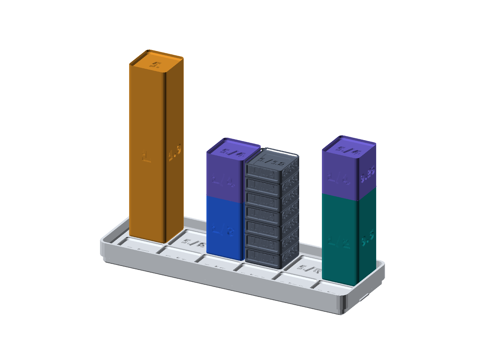
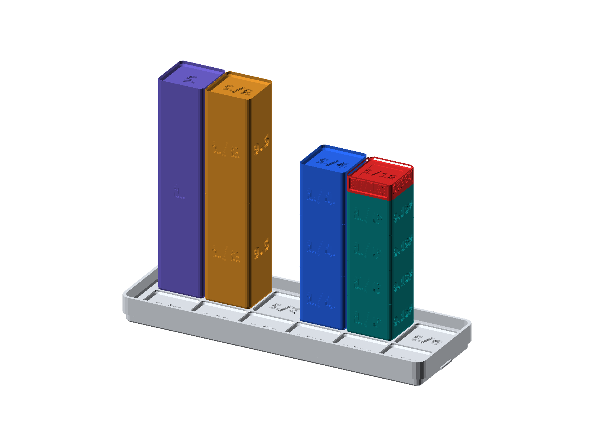
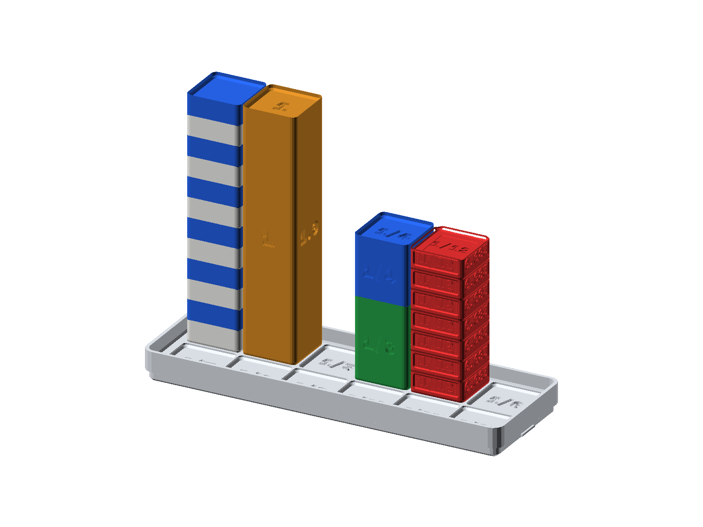
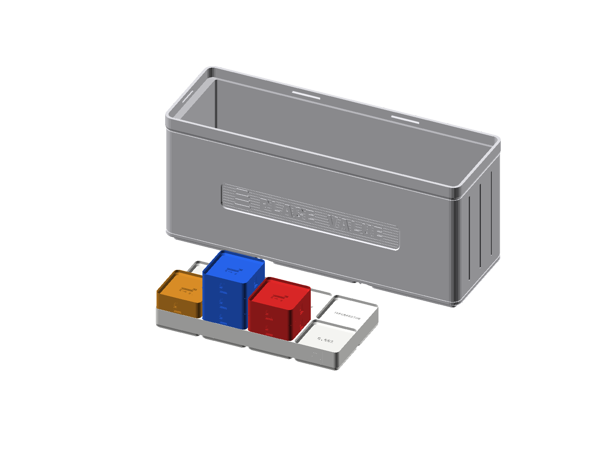
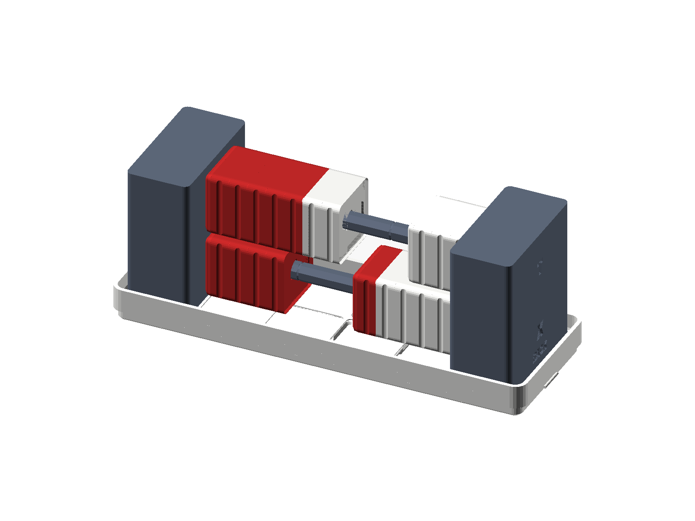
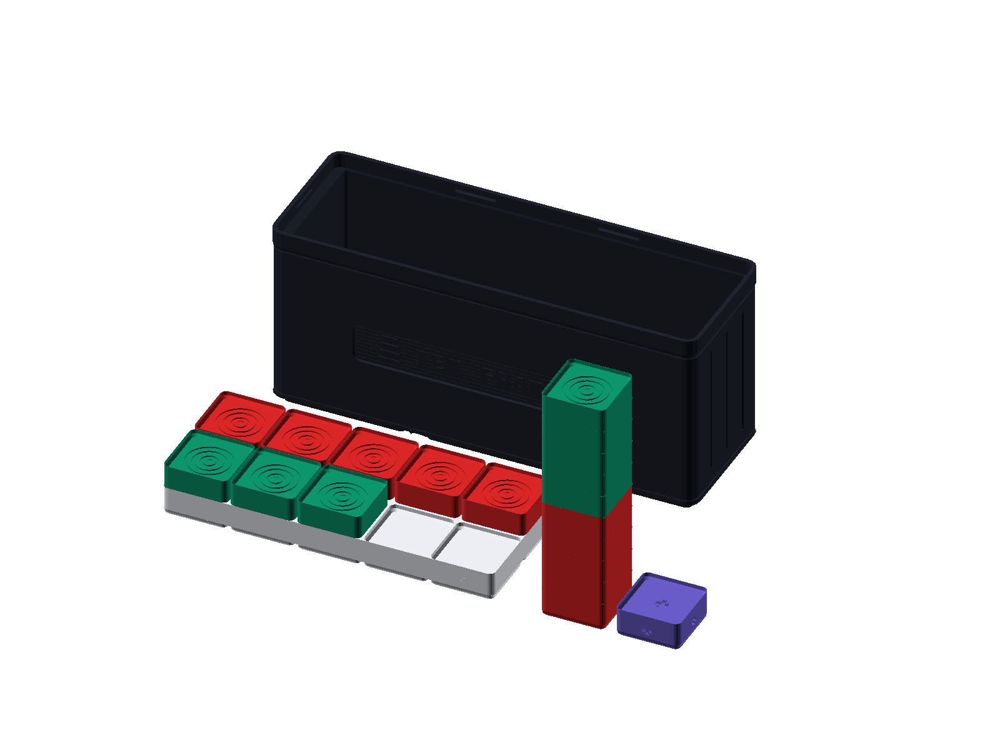
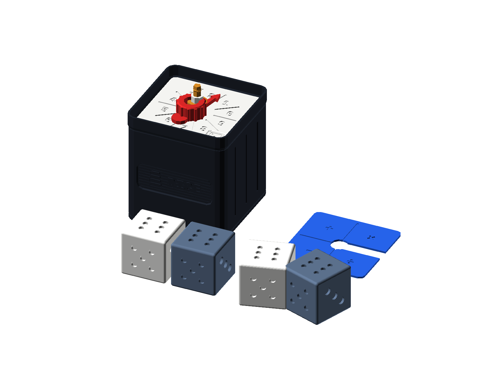

Big Ideas Math Middle School: Section-by-Section Hands-On Block & SC-6 Supplement
Grade 6 Complete + Grade 7 Bridge • 10 Units • 45 Textbook Sections • Step-by-Step Block Instructions • 450 Practice Problems
Designed Around Big Ideas Math Textbook Methods & Hands-On Manipulatives
- Aligned to Every Unit & Section: Tracks the exact Big Ideas Math textbook methods across all 10 Units and 45 Sections (Arrays & Division Check, Factor Trees, Venn GCF/LCM, 84mm LCD Fraction Towers, Reciprocal Multiplication, Tape Diagrams, Ratio Tables, Double Number Lines, Distributive Area Models, Balance Scale Inverse Operations, 2D Geometric Nets, and 5-Number Box Plots).
- Explicit Block Kit & Step-by-Step Instructions: Every section names which StackCalc Block Kit is used (
COUNT-01,PRIME-01,FRAC-01,PLACE-01,ALGB-01,RACK-01,TIME-01,PROB-01) with Step 1, Step 2, and Step 3 physical block instructions alongside 1 comprehensive Worked Example with keystrokes and blocks. - Focus on Concepts, Workspace & Final Answers: Students never have to write out calculator stack registers (which vary depending on prior values on the stack). Every worksheet question provides generous open workspace to work out the problem using the section's Big Ideas method and write the final answer.
- Compact 10-Page Coach Guide: The Coach & Solution Guide PDF fits every unit's misconception coaching, manipulative setup, and all 40–50 section answers onto 1 single page per unit (10 pages total).
🏆 Optional Desk Companion: The Simplified 2-Piece 3x1x7U SC-6 Scoreboard (QUEST-01)
To reward students for trying multiple approaches (e.g., solving with physical blocks and verifying with the textbook method or SC-6), pair the workbook with the 3x1x7U Gridfinity SC-6 Scoreboard & Token Kit (QUEST-01):
| Hardware Component | Dimensions & Gridfinity Standard | How It Works (Zero Sorting, Zero Extra Trays) |
|---|---|---|
1. Snapfinity Scoreboard Lid (1–10 + 100 + (?)) |
125.5 × 42.0 mm (3x1 Stackable Lid, 6×2 = 12 sockets) |
Left 5×2 Grid: Numbered 1–5 (top row) and 6–10 (bottom row), matching Problems #1–#10 (or Units 1–10). Rightmost Column: Top socket 100 (for a 10-block Mastery Tower) and bottom Question Mark in a Circle (?) tutorial keycap badge. |
2. 3x1x7U Token Bank Box (QUEST BOARD) |
125.5 × 42.0 × 49.0 mm (7U height, (? tutorial badge) |
Holds all 60 universal +10 Quarter-Block tokens in 5 neat layers of 12 (6×2) directly on its Gridfinity floor—no separate inner tray needed! |
3. 60 Identical +10 Quarter-Block Tokens |
19.0 × 19.0 × 8.85 mm (7.0 mm visible 1U height) |
Every token is identical (+10 on top and all 4 sides):• 1 Block ( +10 pts) = Solved 1st Way (Blocks, Textbook Method, or SC-6)• 2 Stacked Blocks ( +20 pts) = Solved 2nd Way ("Twin-Way Proof" or Fast <4s in [f] [C] Quiz Mode)• 10 Blocks ( 100 pts) = 100% Section Mastery! |
Unit 1: Numerical Expressions & Factors
Big Ideas Math Grade 6 — Chapter 1 — Whole Number Operations, Powers & Exponents, Order of Operations, Prime Factorization, GCF & LCM
- Manipulative Kits:
Counting & Array Studio (COUNT-01) + Prime Factor Studio (PRIME-01) - Target Misconception: Students interpret remainders as meaningless decimal tails (e.g., .875 of a person), read 2^3 as 2×3=6, lose track of PEMDAS parentheses, and confuse GCF (overlap) with LCM (union).
- Hands-On Remediation: Have students build physical tile rows for division remainders, stack 2D/3D arrays for exponents, use the 4-line elevator (Y holds Room 1 while X solves Room 2) instead of rewriting PEMDAS lines, and stand logarithmic Prime Factor Towers side-by-side on the 12-socket lid.
Section 1.1: Whole Number Operations & Division with Remainders
Textbook Alignment: Big Ideas Grade 6, Section 1.1 (Whole Number Operations) (CCSS.MATH.6.NS.B.2) • Big Ideas Method: Rectangular Array Model & Division Check (Dividend = Divisor × Quotient + Remainder) • Block Kit: COUNT-01 (Counting & Array Tiles)

Key Concept: When you divide real items (like 23 tiles into groups of 4), a decimal like 5.75 hides the actual leftover pieces. Grouping physical Counting Tiles shows the full rows (Quotient) and loose tiles (Remainder), while [g] [÷R] puts Quotient on Floor 1 (X) and Remainder on Floor 2 (Y) at the same time!
Physical Block Kit Instructions (COUNT-01: Counting & Array Tiles)
- Step 1: Open Kit COUNT-01 (Counting & Array Tiles) and count out 23 unit tiles onto the Gridfinity baseplate.
- Step 2: Arrange the tiles into equal rows of 4. Count 5 complete rows of 4 tiles (5 × 4 = 20 tiles).
- Step 3: Place the 3 leftover tiles beside the array as Remainder R = 3, proving 23 = 4 × 5 + 3.
Worked Example (Big Ideas Method + Blocks + SC-6 Keystrokes)
| Problem | Big Ideas Textbook Method Steps | SC-6 Keystrokes | Final Answer |
|---|---|---|---|
| Divide 23 ÷ 4 and find the quotient and remainder. | 1. Divide 23 ÷ 4 to find the greatest whole number of groups of 4: 5 groups (5 × 4 = 20). 2. Subtract 23 - 20 = 3 to find the remainder (R = 3, which is less than the divisor 4). 3. Check with the Division Algorithm: Quotient × Divisor + Remainder = 5 × 4 + 3 = 23. |
[23] [ENTER] [4] [g] [÷R] |
5 R 3 |
Section Practice Problems (10 Exercises)
| # | Big Ideas Method Focus | Problem Prompt | Coach Key: SC-6 Keystrokes | Final Answer |
|---|---|---|---|---|
| 1 | Equal-Rows Array | Arrange 31 tiles into rows of 6. Find Quotient & Remainder. | 31 [ENTER] 6 [g][÷R] |
5 R 1 |
| 2 | Equal-Rows Array | Divide 47 ÷ 5 using tiles or [g] [÷R]. | 47 [ENTER] 5 [g][÷R] |
9 R 2 |
| 3 | Equal-Rows Array | Divide 58 ÷ 7 and check with [f] [LASTX] [×] [+]. | 58 [ENTER] 7 [g][÷R] |
8 R 2 |
| 4 | Equal-Rows Array | Divide 85 ÷ 9. How many full groups of 9 and how many left? | 85 [ENTER] 9 [g][÷R] |
9 R 4 |
| 5 | Quotient & Remainder | Divide 146 ÷ 12. Find the Quotient and Remainder. | 146 [ENTER] 12 [g][÷R] |
12 R 2 |
| 6 | Quotient & Remainder | Divide 250 ÷ 36 and prove with [f] [LASTX] [×] [+]. | 250 [ENTER] 36 [g][÷R] |
6 R 34 |
| 7 | Quotient & Remainder | Find the missing dividend: Quotient = 14, Divisor = 8, Remainder = 5. | 14 [ENTER] 8 [×] 5 [+] |
117 |
| 8 | Quotient & Remainder | Spot the Glitch: Sam says 75 ÷ 8 = 8 R 11. Why is R=11 impossible? Fix it! | 75 [ENTER] 8 [g][÷R] |
9 R 3 (Rem < 8) |
| 9 | Division Check (q × d + r) | A 3D spool has 300g of PLA. Each box takes 42g. How many full boxes can you print, and how much PLA is left? | 300 [ENTER] 42 [g][÷R] |
7 boxes, 6g left (Way 2: 7×42=294) |
| 10 | Division Check (q × d + r) | 115 students ride vans that hold 14 kids each. How many vans must be booked so nobody is left behind? | 115 [ENTER] 14 [g][÷R] |
9 vans (8 full + 1 for 3 kids; Way 2: 9×14=126) |
Section 1.2: Powers & Exponents — Squares, Cubes & Growth
Textbook Alignment: Big Ideas Grade 6, Section 1.2 (Powers and Exponents) (CCSS.MATH.6.EE.A.1) • Big Ideas Method: Repeated Multiplication Factors, Perfect Squares (2D Array) & Cubes (3D Stack) • Block Kit: COUNT-01 (Counting & Array Tiles)

Key Concept: An exponent tells how many times to use the base as a factor in repeated multiplication. A 2nd power (4²) builds a 2D square array (4×4 = 16 tiles), and a 3rd power (4³) stacks 4 square layers into a 3D cube (64 tiles). Evaluate powers using repeated multiplication or [x²], [g] [x³], and [g] [yˣ]!
Physical Block Kit Instructions (COUNT-01: Counting & Array Tiles)
- Step 1: Open Kit COUNT-01 (Counting & Array Tiles) and lay down a row of 4 tiles for the base (4).
- Step 2: For 4², build a 4 × 4 square array (4 rows of 4 = 16 tiles)—compare to 2 rows of 4 (4 × 2 = 8 tiles).
- Step 3: For 4³, stack 4 identical 4 × 4 square layers high to build a 3D cube of 16 × 4 = 64 tiles.
Worked Example (Big Ideas Method + Blocks + SC-6 Keystrokes)
| Problem | Big Ideas Textbook Method Steps | SC-6 Keystrokes | Final Answer |
|---|---|---|---|
| Write 4² and 4³ as repeated multiplication and find their values. Compare 4² to 4 × 2. | 1. Identify the base (4) and the exponent (2 or 3). 2. Write the power as repeated multiplication of the base: 4² = 4 × 4 = 16. 3. For 4³, multiply the base 3 times: 4³ = 4 × 4 × 4 = 16 × 4 = 64 (never multiply base × exponent!). |
[4] [x²] [4] [g] [x³] |
4² = 16, 4³ = 64 |
Section Practice Problems (10 Exercises)
| # | Big Ideas Method Focus | Problem Prompt | Coach Key: SC-6 Keystrokes | Final Answer |
|---|---|---|---|---|
| 1 | Repeated Factors (b × b) | Write 5² as repeated multiplication and find how many tiles are in a 5 × 5 square. | 5 [x²] |
25 |
| 2 | Repeated Factors (b × b) | Evaluate 7² and compare it to 7 × 2. | 7 [x²] |
49 (vs 14) |
| 3 | Repeated Factors (b × b) | Evaluate 3³ (a 3 × 3 × 3 cube of blocks). | 3 [g][x³] |
27 |
| 4 | Repeated Factors (b × b) | Evaluate 5³ using repeated multiplication or [g] [x³]. | 5 [g][x³] |
125 |
| 5 | Square & Cube Evaluation | Evaluate 2⁵ by writing the repeated factors and checking with 2 [ENTER] 5 [g] [yˣ]. | 2 [ENTER] 5 [g][yˣ] |
32 |
| 6 | Square & Cube Evaluation | Evaluate 6⁴ using repeated multiplication or [g] [yˣ]. | 6 [ENTER] 4 [g][yˣ] |
1,296 |
| 7 | Square & Cube Evaluation | Evaluate 10⁴ and 1⁴. How many zeros are in 10⁴? | 10 [ENTER] 4 [g][yˣ] |
10,000 and 1 |
| 8 | Square & Cube Evaluation | Spot the Glitch: Mia wrote 2⁴ = 8 because 2 × 4 = 8. Find the true value of 2⁴. | 2 [ENTER] 4 [g][yˣ] |
16 (2×2×2×2) |
| 9 | Exponential Growth Model | A cell doubles every hour (2ⁿ). How many cells are there after 6 hours (2⁶)? Solve 2 ways! | 2 [ENTER] 6 [g][yˣ] |
64 cells (Way 2: 2 [g][REP] [×]×5) |
| 10 | Exponential Growth Model | Mystery Cube: A giant cube uses 216 unit blocks. How many blocks wide is 1 edge? (Try [g] [ˣ√y]!) | 216 [ENTER] 3 [g][ˣ√y] |
6 blocks wide (Way 2: 6 [g][x³]=216) |
Section 1.3: Order of Operations — Grouping Symbols, Exponents & PEMDAS
Textbook Alignment: Big Ideas Grade 6, Section 1.3 (Order of Operations) (CCSS.MATH.6.EE.A.1) • Big Ideas Method: Order of Operations (PEMDAS: Grouping Symbols -> Powers -> Multiply/Divide L-to-R -> Add/Subtract L-to-R) • Block Kit: COUNT-01 (Counting & Array Tiles)

Key Concept: Big Ideas Order of Operations (PEMDAS): (1) Evaluate expressions inside grouping symbols (), [], or fraction bars first; (2) Evaluate powers; (3) Multiply and divide from left to right; (4) Add and subtract from left to right. Grouping tiles on your desk lets you solve each part step by step!
Physical Block Kit Instructions (COUNT-01: Counting & Array Tiles)
- Step 1: Open Kit COUNT-01 (Counting & Array Tiles) and use two zones of the lid for the two parentheses groups.
- Step 2: In Zone 1, combine 8 tiles and 4 tiles to model (8 + 4) = 12 tiles.
- Step 3: In Zone 2, start with 9 tiles and remove 3 tiles to model (9 - 3) = 6, then multiply 12 groups of 6 = 72.
Worked Example (Big Ideas Method + Blocks + SC-6 Keystrokes)
| Problem | Big Ideas Textbook Method Steps | SC-6 Keystrokes | Final Answer |
|---|---|---|---|
| Evaluate (8 + 4) × (9 - 3) using the Big Ideas Order of Operations. | 1. Grouping Symbols First: Evaluate inside both sets of parentheses: (8 + 4) = 12 and (9 - 3) = 6. 2. Substitute the simplified values back into the expression: 12 × 6. 3. Multiply to find the final value: 12 × 6 = 72. |
[8] [ENTER] [4] [+] [9] [ENTER] [3] [-] [×] |
72 |
Section Practice Problems (10 Exercises)
| # | Big Ideas Method Focus | Problem Prompt | Coach Key: SC-6 Keystrokes | Final Answer |
|---|---|---|---|---|
| 1 | Grouping Symbols First | Evaluate 5 + 2 × 3. Multiply before adding! | 5 [ENTER] 2 [ENTER] 3 [×] [+] |
11 |
| 2 | Grouping Symbols First | Evaluate (14 + 6) ÷ (7 - 2). Solve both parentheses first! | 14 [ENTER] 6 [+] 7 [ENTER] 2 [-] [÷] |
4 |
| 3 | Grouping Symbols First | Evaluate 30 - 4 × 6. | 30 [ENTER] 4 [ENTER] 6 [×] [-] |
6 |
| 4 | Grouping Symbols First | Evaluate (9 + 3) × (15 - 8). | 9 [ENTER] 3 [+] 15 [ENTER] 8 [-] [×] |
84 |
| 5 | PEMDAS Step-by-Step | Evaluate 50 - (3 + 4)². Square the sum before subtracting from 50! | 50 [ENTER] 3 [ENTER] 4 [+] [x²] [-] |
1 |
| 6 | PEMDAS Step-by-Step | Evaluate 120 - 4 × (3 + 2)². | 120 [ENTER] 4 [ENTER] 3 [ENTER] 2 [+] [x²] [×] [-] |
20 |
| 7 | PEMDAS Step-by-Step | Fraction Bar Grouping: Evaluate (24 + 12) / (9 - 3). | 24 [ENTER] 12 [+] 9 [ENTER] 3 [-] [÷] |
6 |
| 8 | PEMDAS Step-by-Step | Evaluate 3³ + 15 ÷ 3 - 2 × 4. | 3 [g][x³] 15 [ENTER] 3 [÷] [+] 2 [ENTER] 4 [×] [-] |
24 |
| 9 | Multi-Step Expression | Evaluate 10 + (15 - 3)² ÷ 9 using PEMDAS step-by-step AND check on your SC-6. | 10 [ENTER] 15 [ENTER] 3 [-] [x²] 9 [÷] [+] |
26 (Way 2: 10 + 144÷9 = 26) |
| 10 | Multi-Step Expression | Movie tickets: 2 adults at $12 each and 4 kids at $8 each, minus a $10 coupon. Write an expression and find total cost. | 2 [ENTER] 12 [×] 4 [ENTER] 8 [×] [+] 10 [-] |
$46 (Way 2: 24 + 32 - 10 = 46) |
Section 1.4: Prime Factorization — Factor Trees & Logarithmic Prime Towers
Textbook Alignment: Big Ideas Grade 6, Section 1.4 (Prime Factorization) (CCSS.MATH.6.NS.B.4) • Big Ideas Method: Factor Trees, Prime vs. Composite Testing & Prime-Power Factorization • Block Kit: PRIME-01 (Prime Factor Studio)

Key Concept: In Big Ideas Math, a Factor Tree splits a composite number until every branch ends at a prime number. In the Prime Factor Studio (PRIME-01), block heights are logarithmic (h = 7·log₂(p) mm), so [2]+[2]+[3]+[5] always reaches the exact 60 mark whether you split 60 as 6×10 or 4×15!
Physical Block Kit Instructions (PRIME-01: Prime Factor Studio)
- Step 1: Open Kit PRIME-01 (Prime Factor Studio) and set the logarithmic slide-rule scale on the box wall.
- Step 2: Select the prime blocks that multiply to 60: two blue [2] blocks, one green [3] block, and one gold [5] block.
- Step 3: Stack [2] + [2] + [3] + [5] in any order—the tower height always aligns with 60 on the logarithmic scale!
Worked Example (Big Ideas Method + Blocks + SC-6 Keystrokes)
| Problem | Big Ideas Textbook Method Steps | SC-6 Keystrokes | Final Answer |
|---|---|---|---|
| Write the prime factorization of 60 using a factor tree, Prime Blocks, and [g] [FACT]. | 1. Branch 60 into any factor pair (such as 6 × 10 or 4 × 15) on a Factor Tree. 2. Continue splitting composite branches until only prime leaves remain: 6 = 2 × 3 and 10 = 2 × 5. 3. Group identical prime factors using exponents from least to greatest: 60 = 2² × 3 × 5. |
[60] [g] [FACT] |
60 = 2² × 3 × 5 |
Section Practice Problems (10 Exercises)
| # | Big Ideas Method Focus | Problem Prompt | Coach Key: SC-6 Keystrokes | Final Answer |
|---|---|---|---|---|
| 1 | Factor Tree Branches | Draw a factor tree or stack [2] + [2] + [3]. Write the prime factorization of 12. | 12 [g][FACT] |
2² × 3 |
| 2 | Factor Tree Branches | Find the prime factorization of 36 using blocks and [g] [FACT]. | 36 [g][FACT] |
2² × 3² |
| 3 | Factor Tree Branches | Test 29 and 57 with [PRIME]. Which one is prime and which is composite? | 29 [PRIME], 57 [g][FACT] |
29 Prime; 57 Composite (3×19) |
| 4 | Factor Tree Branches | Find the prime factorization of 45. | 45 [g][FACT] |
3² × 5 |
| 5 | Prime-Power Form | Build the Prime Tower for 72. Show how 8 × 9 and 6 × 12 use the exact same blocks. | 72 [g][FACT] |
2³ × 3² |
| 6 | Prime-Power Form | Find the prime factorization of 84. | 84 [g][FACT] |
2² × 3 × 7 |
| 7 | Prime-Power Form | Find the prime factorization of 100. | 100 [g][FACT] |
2² × 5² |
| 8 | Prime-Power Form | What number has the prime tower [2] + [2] + [3] + [7] (2² × 3 × 7)? | 2 [x²] 3 [×] 7 [×] |
84 |
| 9 | Prime Factorization Check | Find the prime factorization of 180 both by splitting 18 × 10 AND with [g] [FACT]. | 180 [g][FACT] |
2² × 3² × 5 (Way 2: (2·3²)(2·5)) |
| 10 | Prime Factorization Check | Mystery Vault Code: A 3-digit number equals 2³ × 3² × 5. Find the number and verify with [g] [FACT]. | 2 [g][x³] 3 [x²] [×] 5 [×] |
360 (Way 2: 8 × 9 × 5 = 360) |
Section 1.5: Greatest Common Factor (GCF) & Least Common Multiple (LCM)
Textbook Alignment: Big Ideas Grade 6, Sections 1.5 & 1.6 (GCF and LCM) (CCSS.MATH.6.NS.B.4) • Big Ideas Method: Venn Diagram of Prime Factors — Shared Overlap for GCF & Tallest Prime Powers for LCM • Block Kit: PRIME-01 (Prime Factor Studio)

Key Concept: When you stand two Prime Factor Towers next to each other on the 12-socket lid, you see GCF and LCM at the same time: GCF is the shared blocks both towers have in common (overlap), and LCM is the tallest tower needed to cover both (union)! Verify in 1 click with [GCF] and [f] [LCM].
Physical Block Kit Instructions (PRIME-01: Prime Factor Studio)
- Step 1: Open Kit PRIME-01 (Prime Factor Studio) and build Tower 20 ([2][2][5]) and Tower 50 ([2][5][5]) side by side.
- Step 2: For GCF, pull out the prime blocks shared by BOTH towers: one [2] and one [5] -> [2][5] = 10.
- Step 3: For LCM, build the tallest union covering both towers: two [2]s and two [5]s -> [2][2][5][5] = 100.
Worked Example (Big Ideas Method + Blocks + SC-6 Keystrokes)
| Problem | Big Ideas Textbook Method Steps | SC-6 Keystrokes | Final Answer |
|---|---|---|---|
| Find both the GCF and LCM of 20 and 50 using Prime Towers and the SC-6. | 1. Write the prime factorization of each number: 20 = 2² × 5 and 50 = 2 × 5². 2. GCF (Shared Factors): Multiply the common prime factors with lesser exponents: 2¹ × 5¹ = 10. 3. LCM (All Factors): Multiply all prime factors using the greatest exponent of each: 2² × 5² = 4 × 25 = 100. |
[20] [ENTER] [50] [GCF] [20] [ENTER] [50] [f] [LCM] |
GCF = 10, LCM = 100 |
Section Practice Problems (10 Exercises)
| # | Big Ideas Method Focus | Problem Prompt | Coach Key: SC-6 Keystrokes | Final Answer |
|---|---|---|---|---|
| 1 | Prime Factor GCF & LCM | Find the GCF and LCM of 12 and 18 using Prime Towers and [GCF] / [f] [LCM]. | 12 [ENTER] 18 [GCF] / [f][LCM] |
GCF = 6, LCM = 36 |
| 2 | Prime Factor GCF & LCM | Find the GCF and LCM of 8 and 12. | 8 [ENTER] 12 [GCF] / [f][LCM] |
GCF = 4, LCM = 24 |
| 3 | Prime Factor GCF & LCM | Find the GCF and LCM of 15 and 25. | 15 [ENTER] 25 [GCF] / [f][LCM] |
GCF = 5, LCM = 75 |
| 4 | Prime Factor GCF & LCM | Find the GCF and LCM of 14 and 35. | 14 [ENTER] 35 [GCF] / [f][LCM] |
GCF = 7, LCM = 70 |
| 5 | Shared Factors vs. Multiples | Find the GCF and LCM of 16 and 24. | 16 [ENTER] 24 [GCF] / [f][LCM] |
GCF = 8, LCM = 48 |
| 6 | Shared Factors vs. Multiples | Find the GCF and LCM of 28 and 42. | 28 [ENTER] 42 [GCF] / [f][LCM] |
GCF = 14, LCM = 84 |
| 7 | Shared Factors vs. Multiples | Two prime numbers are 5 and 7. What is their GCF and what is their LCM? | 5 [ENTER] 7 [GCF] / [f][LCM] |
GCF = 1, LCM = 35 |
| 8 | Shared Factors vs. Multiples | Verify that GCF(15, 20) × LCM(15, 20) equals 15 × 20. | 15 [ENTER] 20 [GCF] ... [×] |
5 × 60 = 300 (Matches 15×20!) |
| 9 | GCF & LCM Word Problem | Hot dogs come in packs of 12 and buns in packs of 15. What is the smallest number of each to buy with 0 leftovers? | 12 [ENTER] 15 [f][LCM] |
60 (5 packs dogs, 4 packs buns; Way 2: [g][REP] skip-count) |
| 10 | GCF & LCM Word Problem | You have 36 red tiles and 48 blue tiles to pack into identical kit bags with none left over. What is the max number of bags? | 36 [ENTER] 48 [GCF] |
12 bags (3 red, 4 blue per bag; Way 2: Prime overlap 2²×3=12) |
Unit 2: Fractions & Decimals
Big Ideas Math Grade 6 — Chapter 2 — Equivalent Fractions, Multiplying & Dividing Fractions, and All Four Decimal Operations
- Manipulative Kits:
Fraction Studio (FRAC-01) + Place Value Studio (PLACE-01) - Target Misconception: Students treat fractions, mixed numbers, and decimals as unrelated rules, expect multiplication to always make numbers bigger, forget which fraction to flip in division, and misalign decimal columns.
- Hands-On Remediation: Use the 84.0 mm Fraction Studio towers so equivalence and common denominators are physical millimeter height matches. Use [f] [1/x] on Floor 1 (X) so students see only the divisor flip, and use [f] [IP] / [g] [FP] to split whole dollars from decimal cents.
Section 2.1: Equivalent Fractions, Mixed Numbers & Adding Towers
Textbook Alignment: Big Ideas Grade 6, Section 2.1 Prep (Equivalence, Mixed Numbers & Like/Unlike Fractions) (CCSS.MATH.6.NS.A.1) • Big Ideas Method: Equivalent Fractions via GCF Simplification & Adding/Subtracting with Least Common Denominator (LCD) • Block Kit: FRAC-01 (84mm Fraction Studio)

Key Concept: In the Fraction Studio (FRAC-01), 1 Whole is exactly 84.0 mm tall. Whenever two fraction towers stand at the exact same millimeter height, they are equivalent! Use [.] to enter fractions (e.g., [.] 4 [.] 6), [g] [SIMP] to simplify step-by-step, [f] [d/c] for improper fractions, and [FDISP] to toggle decimal view!
Physical Block Kit Instructions (FRAC-01: 84mm Fraction Studio)
- Step 1: Open Kit FRAC-01 (84mm Fraction Studio) and place the 84mm Whole (1) datum block on the comparator lid.
- Step 2: Stack four 1/6 blocks (4 × 14mm = 56mm) next to two 1/3 blocks (2 × 28mm = 56mm) to see 12/18 = 6/9 = 2/3.
- Step 3: To add 1/3 + 1/4, stack one 1/3 block (28mm) and one 1/4 block (21mm) = 49mm, matching seven 1/12 blocks (7/12).
Worked Example (Big Ideas Method + Blocks + SC-6 Keystrokes)
| Problem | Big Ideas Textbook Method Steps | SC-6 Keystrokes | Final Answer |
|---|---|---|---|
| Simplify 12/18 step-by-step and compare tower heights. | 1. Divide numerator and denominator of 12/18 by common factors: (12 ÷ 2)/(18 ÷ 2) = 6/9, then (6 ÷ 3)/(9 ÷ 3) = 2/3. 2. To add unlike fractions (1/3 + 1/4), find the LCD of 3 and 4, which is 12. 3. Rewrite as equivalent twelfths and add numerators: 4/12 + 3/12 = 7/12. |
[.] [12] [.] [18] [ENTER] [g] [SIMP] [g] [SIMP] |
12/18 -> 6/9 -> 2/3 |
Section Practice Problems (10 Exercises)
| # | Big Ideas Method Focus | Problem Prompt | Coach Key: SC-6 Keystrokes | Final Answer |
|---|---|---|---|---|
| 1 | Simplest Form / Mixed-Improper | Simplify 8/12 using [g] [SIMP]. What intermediate fraction appears first? | [.] 8 [.] 12 [ENTER] [g][SIMP]×2 |
4/6 -> 2/3 |
| 2 | Simplest Form / Mixed-Improper | Simplify 24/36 completely and check its decimal with [FDISP]. | [.] 24 [.] 36 [ENTER] [g][SIMP]... |
2/3 (0.667) |
| 3 | Simplest Form / Mixed-Improper | Convert 2 3/5 into an improper fraction ([f] [d/c]) and a decimal ([FDISP]). | 2 [.] 3 [.] 5 [ENTER] [f][d/c] |
13/5 and 2.6 |
| 4 | Simplest Form / Mixed-Improper | Convert 19/8 into a mixed number ([a b/c]) and a decimal ([FDISP]). | [.] 19 [.] 8 [ENTER] [FDISP] |
2 3/8 and 2.375 |
| 5 | LCD Addition & Subtraction | Add 1/2 + 1/3 using a common denominator (sixths) and check with 84mm Fraction Blocks. | [.] 1 [.] 2 [ENTER] [.] 1 [.] 3 [+] |
5/6 (42mm+28mm=70mm) |
| 6 | LCD Addition & Subtraction | Add 3/4 + 5/6 using the LCD (12). Write both the mixed number and improper fraction. | [.] 3 [.] 4 [ENTER] [.] 5 [.] 6 [+] |
1 7/12 (or 19/12) |
| 7 | LCD Addition & Subtraction | Subtract 7/8 - 1/4 and verify with [f] [LASTX] [+]. | [.] 7 [.] 8 [ENTER] [.] 1 [.] 4 [-] |
5/8 |
| 8 | LCD Addition & Subtraction | Subtract mixed numbers: 4 1/3 - 1 5/6. | 4 [.] 1 [.] 3 [ENTER] 1 [.] 5 [.] 6 [-] |
2 1/2 (or 5/2) |
| 9 | Mixed Number Regrouping | Build 1/3 + 1/4 with 84mm towers (28mm + 21mm) AND solve using the LCD (twelfths). | [.] 1 [.] 3 [ENTER] [.] 1 [.] 4 [+] |
7/12 (49mm = seven 7mm twelfths) |
| 10 | Mixed Number Regrouping | A trail is 3 3/4 miles long. You hiked 1 7/8 miles. How much trail is left? Solve 2 ways! | 3 [.] 3 [.] 4 [ENTER] 1 [.] 7 [.] 8 [-] |
1 7/8 miles (Way 2: 30/8 - 15/8 = 15/8) |
Section 2.2: Multiplying Fractions & Mixed Numbers
Textbook Alignment: Big Ideas Grade 6, Section 2.1 (Multiplying Fractions) (CCSS.MATH.6.NS.A.1) • Big Ideas Method: Area/Tower Model for Fraction × Fraction & Cross-Canceling Common Factors • Block Kit: FRAC-01 (84mm Fraction Studio)

Key Concept: Why does multiplying two proper fractions make a SMALLER answer? Because '×' means 'OF'! Taking 1/2 OF a 3/4 tower (63 mm) gives half its height (31.5 mm = 3/8). For mixed numbers, rewrite as improper fractions first (or use [f] [d/c]) and simplify common factors before multiplying!
Physical Block Kit Instructions (FRAC-01: 84mm Fraction Studio)
- Step 1: Open Kit FRAC-01 (84mm Fraction Studio) and stand three 1/4 blocks to build a 3/4 tower (63.0 mm tall).
- Step 2: To find 1/2 OF 3/4, measure half the height of the 63.0 mm tower: 63.0 mm ÷ 2 = 31.5 mm.
- Step 3: Place three 1/8 blocks (3 × 10.5 mm = 31.5 mm) alongside to prove 1/2 × 3/4 = 3/8.
Worked Example (Big Ideas Method + Blocks + SC-6 Keystrokes)
| Problem | Big Ideas Textbook Method Steps | SC-6 Keystrokes | Final Answer |
|---|---|---|---|
| Find 1/2 × 3/4 using 84mm Fraction Towers and the SC-6. | 1. Multiply the numerators and multiply the denominators: (1 × 3) / (2 × 4) = 3/8. 2. For mixed numbers (1 1/2 × 2 2/3), convert to improper fractions first: 3/2 × 8/3. 3. Divide out common factors on the diagonal (cancel the 3s and divide 8 by 2) to get 4. |
[.] [1] [.] [2] [ENTER] [.] [3] [.] [4] [×] |
3/8 |
Section Practice Problems (10 Exercises)
| # | Big Ideas Method Focus | Problem Prompt | Coach Key: SC-6 Keystrokes | Final Answer |
|---|---|---|---|---|
| 1 | Numerator × Numerator / Cross-Cancel | Find 1/2 × 2/3. (Hold two 1/3 blocks and take half of them!) | [.] 1 [.] 2 [ENTER] [.] 2 [.] 3 [×] |
1/3 |
| 2 | Numerator × Numerator / Cross-Cancel | Find 2/3 × 3/4 and check with [f] [LASTX] [÷]. | [.] 2 [.] 3 [ENTER] [.] 3 [.] 4 [×] |
1/2 |
| 3 | Numerator × Numerator / Cross-Cancel | Multiply 3/5 × 5/9. | [.] 3 [.] 5 [ENTER] [.] 5 [.] 9 [×] |
1/3 |
| 4 | Numerator × Numerator / Cross-Cancel | Multiply a whole number by a fraction: 12 × 3/4. | 12 [ENTER] [.] 3 [.] 4 [×] |
9 |
| 5 | Improper Fraction Conversion | Multiply mixed numbers: 1 3/4 × 2 2/7. | 1 [.] 3 [.] 4 [ENTER] 2 [.] 2 [.] 7 [×] |
4 |
| 6 | Improper Fraction Conversion | Multiply 2 1/4 × 1 1/3. | 2 [.] 1 [.] 4 [ENTER] 1 [.] 1 [.] 3 [×] |
3 |
| 7 | Improper Fraction Conversion | Multiply 3 1/2 × 2 1/2. Write the answer as a mixed number and decimal. | 3 [.] 1 [.] 2 [ENTER] 2 [.] 1 [.] 2 [×] |
8 3/4 (8.75) |
| 8 | Improper Fraction Conversion | Prediction Check: Without calculating, is 5 × 2/3 greater than 5 or less than 5? Now compute it! | 5 [ENTER] [.] 2 [.] 3 [×] |
3 1/3 (Less than 5!) |
| 9 | Scaling & Multi-Step Product | A slime recipe uses 1 3/4 cups of glue per batch. How much glue is needed for 2 1/2 batches? | 1 [.] 3 [.] 4 [ENTER] 2 [.] 1 [.] 2 [×] |
4 3/8 cups (Way 2: 1.75 × 2.5 = 4.375) |
| 10 | Scaling & Multi-Step Product | Triple Chain: Evaluate 4/5 × 5/6 × 3/4 both by cross-canceling common factors AND on your SC-6! | [.] 4 [.] 5 [ENTER] [.] 5 [.] 6 [×] [.] 3 [.] 4 [×] |
1/2 (Way 2: cancel 4s & 5s -> 3/6 = 1/2) |
Section 2.3: Dividing Fractions & Mixed Numbers — Why Reciprocal Flip Works
Textbook Alignment: Big Ideas Grade 6, Sections 2.2 & 2.3 (Dividing Fractions and Mixed Numbers) (CCSS.MATH.6.NS.A.1) • Big Ideas Method: Measurement Division ('How Many Fit?') & Multiplying by the Reciprocal (Keep-Change-Flip) • Block Kit: FRAC-01 (84mm Fraction Studio)

Key Concept: Kids memorize 'Keep-Change-Flip' and then forget which fraction to flip! Physically, 3/4 ÷ 1/8 asks how many 1/8 blocks fit alongside a 3/4 tower (6 fit!). In Big Ideas Math, dividing by a fraction equals multiplying by its reciprocal—and [f] [1/x] flips ONLY the divisor into its reciprocal before you press [×]!
Physical Block Kit Instructions (FRAC-01: 84mm Fraction Studio)
- Step 1: Open Kit FRAC-01 (84mm Fraction Studio) and build a 3/4 dividend tower (three 21mm blocks = 63.0 mm).
- Step 2: Stack 1/8 divisor blocks (10.5 mm each) right beside the 3/4 tower until the heights match.
- Step 3: Count the 1/8 blocks: every 1/4 block matches two 1/8 blocks, so 3 × 2 = 6 blocks fit (3/4 ÷ 1/8 = 6).
Worked Example (Big Ideas Method + Blocks + SC-6 Keystrokes)
| Problem | Big Ideas Textbook Method Steps | SC-6 Keystrokes | Final Answer |
|---|---|---|---|
| Divide 3/4 ÷ 1/8 by comparing tower heights and by multiplying by the reciprocal with [f] [1/x]. | 1. Write the division problem: 3/4 ÷ 1/8. 2. Find the reciprocal of the divisor (flip 1/8 to 8/1) and rewrite division as multiplication: 3/4 × 8/1. 3. Simplify common factors (8 ÷ 4 = 2) and multiply: 3 × 2 = 6. |
[.] [3] [.] [4] [ENTER] [.] [1] [.] [8] [f] [1/x] [×] |
6 |
Section Practice Problems (10 Exercises)
| # | Big Ideas Method Focus | Problem Prompt | Coach Key: SC-6 Keystrokes | Final Answer |
|---|---|---|---|---|
| 1 | Multiply by Reciprocal | How many 1/4 blocks fit in a 1/2 tower? Compute 1/2 ÷ 1/4. | [.] 1 [.] 2 [ENTER] [.] 1 [.] 4 [÷] |
2 |
| 2 | Multiply by Reciprocal | How many 1/6 blocks (14mm) fit in a 2/3 tower (56mm)? Compute 2/3 ÷ 1/6. | [.] 2 [.] 3 [ENTER] [.] 1 [.] 6 [÷] |
4 |
| 3 | Multiply by Reciprocal | Divide 5/6 ÷ 5/12 by multiplying by the reciprocal ([f] [1/x] [×]). | [.] 5 [.] 6 [ENTER] [.] 5 [.] 12 [f][1/x] [×] |
2 |
| 4 | Multiply by Reciprocal | Divide a whole number by a fraction: 6 ÷ 3/4. | 6 [ENTER] [.] 3 [.] 4 [÷] |
8 |
| 5 | Mixed-Number Reciprocal Division | Divide 3/4 ÷ 2/5. Write the answer as a mixed number. | [.] 3 [.] 4 [ENTER] [.] 2 [.] 5 [÷] |
1 7/8 (15/8) |
| 6 | Mixed-Number Reciprocal Division | Divide a fraction by a whole number: 4/5 ÷ 2. | [.] 4 [.] 5 [ENTER] 2 [÷] |
2/5 |
| 7 | Mixed-Number Reciprocal Division | Divide mixed numbers: 4 1/2 ÷ 3/4. | 4 [.] 1 [.] 2 [ENTER] [.] 3 [.] 4 [÷] |
6 |
| 8 | Mixed-Number Reciprocal Division | Divide 5 1/4 ÷ 1 3/4 and prove with [f] [LASTX] [×]. | 5 [.] 1 [.] 4 [ENTER] 1 [.] 3 [.] 4 [÷] |
3 |
| 9 | Equal-Size Measurement Cuts | A board is 6 3/4 ft long. You cut it into 3/4-ft shelves. How many shelves can you cut? Solve 2 ways! | 6 [.] 3 [.] 4 [ENTER] [.] 3 [.] 4 [÷] |
9 shelves (Way 2: 27 fourths ÷ 3 fourths = 9) |
| 10 | Equal-Size Measurement Cuts | A 3 3/4-cup pitcher of smoothie is poured into 5/8-cup glasses. How many glasses does it fill? | 3 [.] 3 [.] 4 [ENTER] [.] 5 [.] 8 [÷] |
6 glasses (Way 2: 30/8 ÷ 5/8 = 6) |
Section 2.4: Adding, Subtracting & Multiplying Decimals
Textbook Alignment: Big Ideas Grade 6, Sections 2.4 & 2.5 (Adding, Subtracting, and Multiplying Decimals) (CCSS.MATH.6.NS.B.3) • Big Ideas Method: Vertical Decimal Point Alignment (+/-) & Counting Decimal Places / Estimation (×) • Block Kit: PLACE-01 (Place Value Studio)

Key Concept: Paper decimal errors happen when place-value columns drift or decimal places are miscounted in multiplication. Use the Place Value Studio (PLACE-01) and the [f] [IP] (Integer Part) and [g] [FP] (Fractional Part) keys to align Tenths and Hundredths and estimate whole-number products first!
Physical Block Kit Instructions (PLACE-01: Place Value Studio)
- Step 1: Open Kit PLACE-01 (Place Value Studio) and separate 14.85 into Whole Tens/Ones (14) and Tenths/Hundredths (0.85).
- Step 2: To add 14.60 + 3.85, place 6 tenths + 8 tenths (regroup 10 tenths -> 1 one + 4 tenths) and 5 hundredths.
- Step 3: Combine the whole ones (14 + 3 + 1 = 18) with the decimal part (0.45) to read 18.45.
Worked Example (Big Ideas Method + Blocks + SC-6 Keystrokes)
| Problem | Big Ideas Textbook Method Steps | SC-6 Keystrokes | Final Answer |
|---|---|---|---|
| Split 14.85 into its whole and decimal parts, then compute 14.60 + 3.85. | 1. Line up the decimal points vertically and annex a trailing zero so both numbers have hundredths: 14.60 + 3.85. 2. Add column by column from right to left (hundredths, tenths, ones, tens): 14.60 + 3.85 = 18.45. 3. Check by subtracting 18.45 - 3.85 = 14.60. |
[14.6] [ENTER] [3.85] [+] [f] [LASTX] [-] |
18.45 (Checked: 18.45 - 3.85 = 14.6) |
Section Practice Problems (10 Exercises)
| # | Big Ideas Method Focus | Problem Prompt | Coach Key: SC-6 Keystrokes | Final Answer |
|---|---|---|---|---|
| 1 | Vertical Decimal Alignment | Enter 27.64. Use [f] [IP] and [g] [FP] to write its Whole part and Decimal part. | 27.64 [f][IP] / [g][FP] |
Whole = 27, Decimal = 0.64 |
| 2 | Vertical Decimal Alignment | Line up the decimal points to add 12.8 + 4.75, and check with [f] [LASTX] [-]. | 12.8 [ENTER] 4.75 [+] |
17.55 |
| 3 | Vertical Decimal Alignment | Annex zeros to subtract 20.00 - 8.65. | 20 [ENTER] 8.65 [-] |
11.35 |
| 4 | Vertical Decimal Alignment | Multiply 4.5 × 0.6. | 4.5 [ENTER] 0.6 [×] |
2.7 |
| 5 | Decimal Place Count & Estimate | Evaluate 25.4 - 9.86 + 3.2. | 25.4 [ENTER] 9.86 [-] 3.2 [+] |
18.74 |
| 6 | Decimal Place Count & Estimate | Multiply 3.6 × 2.25 and check the whole-number ballpark. | 3.6 [ENTER] 2.25 [×] |
8.1 |
| 7 | Decimal Place Count & Estimate | Multiply 0.15 × 0.4 and tap [FDISP] to see its simplified fraction. | 0.15 [ENTER] 0.4 [×] [FDISP] |
0.06 (3/50) |
| 8 | Decimal Place Count & Estimate | Find the area of a rectangular desk top measuring 1.8 m by 0.75 m. | 1.8 [ENTER] 0.75 [×] |
1.35 m² |
| 9 | Multi-Step Money & Area | You pay with a $20 bill for a $8.75 burger and $4.60 smoothie. How much change do you get? | 20 [ENTER] 8.75 [ENTER] 4.60 [+] [-] |
$6.65 (Way 2: 20 - 8.75 - 4.60 = 6.65) |
| 10 | Multi-Step Money & Area | Multiply 4.75 × 1.2 both as decimals AND as fractions (4 3/4 × 1 1/5) using [FDISP]! | 4.75 [ENTER] 1.2 [×] |
5.7 or 5 7/10 (Way 2: 19/4 × 6/5 = 57/10) |
Section 2.5: Dividing Decimals & The 3-Way Fraction-Decimal-Remainder Translator
Textbook Alignment: Big Ideas Grade 6, Section 2.6 (Dividing Decimals) (CCSS.MATH.6.NS.B.3) • Big Ideas Method: Power-of-10 Divisor Shift & 3-Way Translation (Decimal <-> Mixed Number <-> Quotient + Remainder) • Block Kit: FRAC-01 (Fraction & Place Value Studio)
Key Concept: Why are 15 ÷ 4 = 3 R 3, 3 3/4, and 3.75 all the same answer? Because 3 leftover pieces divided by 4 is 3/4 = 0.75! On the SC-6, tapping [FDISP] after any division cycles through Decimal, Mixed Fraction, Improper Fraction, and Quotient+Remainder with one thumb!
Physical Block Kit Instructions (FRAC-01: Fraction & Place Value Studio)
- Step 1: Open Kit FRAC-01 / PLACE-01 and model 23 ÷ 4 using 5 whole blocks and 3 fourths (5 3/4 = 23/4).
- Step 2: Trade the 3 leftover fourths into 0.75 (7 tenths + 5 hundredths) to read the exact decimal 5.75.
- Step 3: For decimal divisors like 15.6 ÷ 0.12, shift both decimals 2 places right (× 100) to divide 1,560 ÷ 12 = 130.
Worked Example (Big Ideas Method + Blocks + SC-6 Keystrokes)
| Problem | Big Ideas Textbook Method Steps | SC-6 Keystrokes | Final Answer |
|---|---|---|---|
| Write 23 ÷ 4 as a decimal, mixed number, improper fraction, and quotient with remainder. | 1. Quotient & Remainder Form: 23 ÷ 4 = 5 R 3 (5 full groups of 4 with 3 left over). 2. Mixed Number & Improper Fraction Form: Write the remainder over the divisor -> 5 3/4 = 23/4. 3. Decimal Form: Divide 3.00 ÷ 4 = 0.75 -> 5.75 (for decimal divisors, multiply both by 10 or 100 first). |
[23] [ENTER] [4] [÷] [FDISP] [f] [d/c] |
5.75 = 5 3/4 = 23/4 = 5 R 3 |
Section Practice Problems (10 Exercises)
| # | Big Ideas Method Focus | Problem Prompt | Coach Key: SC-6 Keystrokes | Final Answer |
|---|---|---|---|---|
| 1 | 3-Way Form Translation | Write 39 ÷ 8 as (a) Quotient + Remainder, (b) Decimal, and (c) Mixed Number. | 39 [ENTER] 8 [÷] [FDISP] |
4 R 7, 4.875, 4 7/8 |
| 2 | 3-Way Form Translation | Divide a decimal by a whole number: 18.4 ÷ 8. | 18.4 [ENTER] 8 [÷] |
2.3 |
| 3 | 3-Way Form Translation | How many quarters ($0.25) are in $11.25? Compute 11.25 ÷ 0.25. | 11.25 [ENTER] 0.25 [÷] |
45 |
| 4 | 3-Way Form Translation | Divide 7.2 ÷ 0.9 and check with [f] [LASTX] [×]. | 7.2 [ENTER] 0.9 [÷] |
8 |
| 5 | Power-of-10 Divisor Shift | Divide 15.6 ÷ 0.12. | 15.6 [ENTER] 0.12 [÷] |
130 |
| 6 | Power-of-10 Divisor Shift | Divide 9.45 ÷ 1.5 and tap [FDISP] to write its mixed fraction form. | 9.45 [ENTER] 1.5 [÷] [FDISP] |
6.3 (6 3/10) |
| 7 | Power-of-10 Divisor Shift | Divide 0.84 ÷ 0.07. | 0.84 [ENTER] 0.07 [÷] |
12 |
| 8 | Power-of-10 Divisor Shift | Spot the Glitch: Leo says 4.8 ÷ 0.2 = 0.24. Use [f] [LASTX] or estimation to fix it! | 4.8 [ENTER] 0.2 [÷] |
24 (0.2 fits 5 times per 1) |
| 9 | Decimal Division Application | A runner completes a 4.5-mile race in 0.75-mile laps. How many laps is the race? Solve 2 ways! | 4.5 [ENTER] 0.75 [÷] |
6 laps (Way 2: 4 1/2 ÷ 3/4 = 6) |
| 10 | Decimal Division Application | A 6-pack of sports drinks costs $7.50. What is the cost of 1 bottle, and how many bottles can $20 buy? | 7.50 [ENTER] 6 [÷] -> 1.25; 20 [ENTER] 1.25 [÷] |
$1.25/bottle; 16 bottles |
Unit 3: Ratios, Rates & Percents
Big Ideas Math Grade 6 — Chapters 3, 4 & 5 (Ratios, Rates & Percents) — Ratios & Tape Diagrams, Ratio Tables, Unit Rates, Percents, Discounts & Unit Conversions
- Manipulative Kits:
Counting & Array Tiles (COUNT-01) + Fraction Studio (FRAC-01) - Target Misconception: Students confuse Part-to-Part (3:2) with Part-to-Whole (3/5), add instead of multiply in ratio tables, divide unit rates upside-down, and memorize 6 disconnected rules for moving decimal points in percents.
- Hands-On Remediation: Use Blue and Gold Counting Tiles as physical Tape Diagram boxes, step through ratio tables rhythmically with [g] [REP], use [x⇄y] when unit-rate division is entered upside-down, and use [f] [%] + [FDISP] to show Fraction/Decimal/Percent are three costumes of one number.
Section 3.1: Ratios & Tape Diagrams — Part-to-Part vs. Part-to-Whole
Textbook Alignment: Big Ideas Grade 6, Section 3.1 & 3.2 (Ratios and Tape Diagrams) (CCSS.MATH.6.RP.A.1) • Big Ideas Method: Part-to-Part vs. Part-to-Whole Tape Diagrams & GCF Ratio Simplification • Block Kit: COUNT-01 (Counting & Array Tiles)
Key Concept: Instead of drawing uneven paper boxes for a Tape Diagram, snap Blue and Gold Counting Tiles onto your desk! Each tile is 1 equal unit box. For a 3:2 ratio, 3 Blue + 2 Gold = 5 total tiles (Part-to-Whole = 3/5). Use [g] [a:b] ([g][GCF]) to reduce any ratio to simplest form!
Physical Block Kit Instructions (COUNT-01: Counting & Array Tiles)
- Step 1: Open Kit COUNT-01 (Counting & Array Tiles) and place 3 blue tiles (Row A) above 2 gold tiles (Row B) for 3:2.
- Step 2: To model 18 builders and 12 speedrunners, group by GCF(18, 12) = 6 per tile -> 3 blue tiles : 2 gold tiles.
- Step 3: Count all 3 + 2 = 5 tiles to read the Part-to-Whole ratio: 3:5 (18 out of 30 total).
Worked Example (Big Ideas Method + Blocks + SC-6 Keystrokes)
| Problem | Big Ideas Textbook Method Steps | SC-6 Keystrokes | Final Answer |
|---|---|---|---|
| A gaming clan has 18 builders and 12 speedrunners. Simplify the Part-to-Part and Part-to-Whole ratios. | 1. Part-to-Part Ratio: Compare 18 builders to 12 speedrunners -> 18:12. Divide both by GCF(18, 12) = 6 -> 3:2. 2. Total (Whole): Add the parts: 18 + 12 = 30 total members. 3. Part-to-Whole Ratio: Compare 18 builders to 30 total -> 18:30, which simplifies by GCF = 6 to 3:5. |
[18] [ENTER] [12] [g] [a:b] |
Part-to-Part = 3:2; Part-to-Whole = 3:5 |
Section Practice Problems (10 Exercises)
| # | Big Ideas Method Focus | Problem Prompt | Coach Key: SC-6 Keystrokes | Final Answer |
|---|---|---|---|---|
| 1 | Part-to-Part & Part-to-Whole | Simplify the ratio 12 : 18 using [g] [a:b]. | 12 [ENTER] 18 [g][a:b] |
2 : 3 |
| 2 | Part-to-Part & Part-to-Whole | Simplify the ratio 24 : 16 using [g] [a:b]. | 24 [ENTER] 16 [g][a:b] |
3 : 2 |
| 3 | Part-to-Part & Part-to-Whole | A bag has 4 red marbles and 6 blue marbles. Find the simplified ratio of red to TOTAL marbles. | 4 [ENTER] 10 [g][a:b] |
2 : 5 |
| 4 | Part-to-Part & Part-to-Whole | In a 3:4 tape diagram, each tile is worth 6. Find the two parts and the total. | 3 [ENTER] 6 [×], 4 [ENTER] 6 [×] |
18, 24 (Total = 42) |
| 5 | Tape Diagram Box Value | Green paint mixes blue and yellow in a 2:3 ratio. If you use 25 cups total, how many cups of each? | 25 [ENTER] 5 [÷] -> 5/tile |
10 blue, 15 yellow |
| 6 | Tape Diagram Box Value | The ratio of cats to dogs at a shelter is 4:5. There are 36 animals total. How many are dogs? | 36 [ENTER] 9 [÷] 5 [×] |
20 dogs |
| 7 | Tape Diagram Box Value | The ratio of boys to girls in a club is 3:5. If there are 15 boys, how many girls are there? | 15 [ENTER] 3 [÷] 5 [×] |
25 girls |
| 8 | Tape Diagram Box Value | Difference Tape Model: The ratio of acoustic to electric guitars is 2:5. There are 18 MORE electric guitars. Find how many electric guitars! | 18 [ENTER] 3 [÷] 5 [×] |
30 electric (12 acoustic) |
| 9 | Total-Share Tape Problem | Two robot teams split 84 gears in a 4:3 ratio. How many gears does each team get? Solve 2 ways! | 84 [ENTER] 7 [÷] -> 12/tile |
48 and 36 gears (Way 2: 4/7 of 84 = 48) |
| 10 | Total-Share Tape Problem | Ratio of gold to silver coins is 7:4. There are 21 more gold coins than silver. How many coins in all? | 21 [ENTER] 3 [÷] 11 [×] |
77 coins total (Way 2: 49 gold + 28 silver) |
Section 3.2: Ratio Tables & Double Number Lines via [g] [REP]
Textbook Alignment: Big Ideas Grade 6, Section 3.3 (Ratio Tables & Double Number Lines) (CCSS.MATH.6.RP.A.3a) • Big Ideas Method: Equivalent Ratio Tables & Double Number Lines via Repeated Addition or Scale Factors • Block Kit: COUNT-01 (Counting & Array Tiles)

Key Concept: A Ratio Table and a Double Number Line are the exact same thing: two skip-counting ladders running side-by-side! Press 3 [g] [REP] and tap [+] to march across the top row (3, 6, 9, 12, 15), then 7 [g] [REP] and tap [+] to march across the bottom row (7, 14, 21, 28, 35)!
Physical Block Kit Instructions (COUNT-01: Counting & Array Tiles)
- Step 1: Open Kit COUNT-01 (Counting & Array Tiles) and lay down Step 1 of the ratio table: 8 distance tiles and 3 time tiles.
- Step 2: Add identical groups of (8 m, 3 s) to build the Double Number Line: (8, 3), (16, 6), (24, 9), (32, 12), (40, 15).
- Step 3: Notice that 5 jumps of 3 seconds reach 15 seconds, and 5 jumps of 8 meters reach 40 meters!
Worked Example (Big Ideas Method + Blocks + SC-6 Keystrokes)
| Problem | Big Ideas Textbook Method Steps | SC-6 Keystrokes | Final Answer |
|---|---|---|---|
| A drone flies 8 meters every 3 seconds. Build a 5-step table to find how far it flies in 15 seconds. | 1. Set up a Ratio Table (or Double Number Line) starting with Distance = 8 m and Time = 3 s. 2. Find the scale factor from 3 seconds to 15 seconds: 15 ÷ 3 = 5 (5 equal steps). 3. Multiply the distance by the same scale factor: 8 m × 5 = 40 meters. |
[8] [g] [REP] [+] [+] [+] [+] |
40 meters in 15 seconds |
Section Practice Problems (10 Exercises)
| # | Big Ideas Method Focus | Problem Prompt | Coach Key: SC-6 Keystrokes | Final Answer |
|---|---|---|---|---|
| 1 | Ratio Table / Double Number Line | Use 4 [g] [REP] and 9 [g] [REP] to write the first 4 equivalent ratios of 4 : 9. | 4 [g][REP] [+], 9 [g][REP] [+] |
4:9, 8:18, 12:27, 16:36 |
| 2 | Ratio Table / Double Number Line | In a ratio table where A : B = 4 : 9, find B when A = 28. | 28 [ENTER] 4 [÷] 9 [×] |
63 |
| 3 | Ratio Table / Double Number Line | In a ratio table where X : Y = 5 : 12, find X when Y = 60. | 60 [ENTER] 12 [÷] 5 [×] |
25 |
| 4 | Ratio Table / Double Number Line | A printer prints 15 pages every 2 minutes. How many pages in 8 minutes? | 8 [ENTER] 2 [÷] 15 [×] |
60 pages |
| 5 | Scale Factor Multiplication | Hot cocoa uses 3 tbsp cocoa for every 8 oz milk. How much milk for 18 tbsp cocoa? | 18 [ENTER] 3 [÷] 8 [×] |
48 oz milk |
| 6 | Scale Factor Multiplication | 8 markers cost $12. Scale down to 2 markers, then scale up to find the cost of 10 markers. | 12 [ENTER] 4 [÷] 5 [×] |
$15 |
| 7 | Scale Factor Multiplication | A heart beats 21 times in 15 seconds. How many beats in 60 seconds (1 minute)? | 60 [ENTER] 15 [÷] 21 [×] |
84 beats |
| 8 | Scale Factor Multiplication | Spot the Glitch: For 3:5, Sam added 4 to both sides and wrote 7:9. Test with [g] [a:b]—are they equal? | 7 [ENTER] 9 [g][a:b] |
No! Multiply by 3 -> 9:15 |
| 9 | Multi-Step Ratio Scaling | 9 smoothies take 12 cups of berries. How many cups of berries for 15 smoothies? Solve 2 ways! | 12 [ENTER] 3 [÷] 5 [×] |
20 cups (Way 2: 12÷9 × 15 = 20) |
| 10 | Multi-Step Ratio Scaling | An e-bike travels 14 miles on 35% battery. How far can it travel on 100% battery? | 14 [ENTER] 7 [÷] 20 [×] |
40 miles (Way 2: 2 mi per 5% × 20) |
Section 3.3: Unit Rates & Best-Buy Showdowns (Plus [x⇄y] Swap Rescue)
Textbook Alignment: Big Ideas Grade 6, Section 3.4 & 3.5 (Rates and Unit Rates) (CCSS.MATH.6.RP.A.2) • Big Ideas Method: Unit Rate Method (Dividing to Find Amount per 1 Unit) & Best-Buy Unit Price Comparison • Block Kit: COUNT-01 (Counting & Array Tiles)
Key Concept: 'Dollars PER Ounce' means Dollars ÷ Ounces (enter Dollars on Y, Ounces on X, press [÷]). What if you accidentally typed Ounces first and Dollars second? Don't clear! Just press [x⇄y] ([f][R↓]) to swap Floor 1 and Floor 2, then press [÷]!
Physical Block Kit Instructions (COUNT-01: Counting & Array Tiles)
- Step 1: Open Kit COUNT-01 (Counting & Array Tiles) and represent 5 minutes with 5 equal 1-minute trays.
- Step 2: Divide 315 words equally across the 5 trays: 315 ÷ 5 = 63 words per 1-minute tray.
- Step 3: To compare two store deals, find the price of 1 single unit (dollars ÷ items) for each deal!
Worked Example (Big Ideas Method + Blocks + SC-6 Keystrokes)
| Problem | Big Ideas Textbook Method Steps | SC-6 Keystrokes | Final Answer |
|---|---|---|---|
| Find the unit rate in words per minute for 315 words in 5 minutes (even if you typed 5 first!). | 1. Write the rate as a fraction with the 'per' unit in the denominator: 315 words / 5 minutes. 2. Divide both numerator and denominator by 5 to get 1 minute in the denominator: 63 words / 1 minute. 3. Always check units: 'Dollars per ounce' means Dollars ÷ Ounces! |
[5] [ENTER] [315] [x⇄y] [÷] |
63 words per minute |
Section Practice Problems (10 Exercises)
| # | Big Ideas Method Focus | Problem Prompt | Coach Key: SC-6 Keystrokes | Final Answer |
|---|---|---|---|---|
| 1 | Unit Rate (Amount per 1) | Find the unit speed in miles per hour: 195 miles in 3 hours. | 195 [ENTER] 3 [÷] |
65 mph |
| 2 | Unit Rate (Amount per 1) | You typed 4 [ENTER] 36 for $36 in 4 hours. Press [x⇄y] [÷] to find the hourly pay! | 4 [ENTER] 36 [x⇄y] [÷] |
$9 / hour |
| 3 | Unit Rate (Amount per 1) | Find the unit price per pound: $7.80 for 6 pounds of apples. | 7.80 [ENTER] 6 [÷] |
$1.30 / lb |
| 4 | Unit Rate (Amount per 1) | A 3D printer uses 90 grams of filament in 6 hours. How many grams per hour? | 90 [ENTER] 6 [÷] |
15 g / hr |
| 5 | Unit Rate Scaling | Best Buy: Cereal A is $4.50 for 15 oz. Cereal B is $5.04 for 18 oz. Find both unit prices! | 4.50 [ENTER] 15 [÷]; 5.04 [ENTER] 18 [÷] |
Cereal B ($0.28/oz vs $0.30/oz) |
| 6 | Unit Rate Scaling | Best Buy: 6-pack of pens for $5.10 vs. 10-pack of pens for $8.20. | 5.10 [ENTER] 6 [÷]; 8.20 [ENTER] 10 [÷] |
10-pack ($0.82 vs $0.85) |
| 7 | Unit Rate Scaling | A train travels 210 miles in 3.5 hours. At this rate, how far does it travel in 5 hours? | 210 [ENTER] 3.5 [÷] 5 [×] |
300 miles |
| 8 | Unit Rate Scaling | Pump A fills 45 gallons in 5 min. Pump B fills 64 gallons in 8 min. Which pump is faster? | 45 [ENTER] 5 [÷]; 64 [ENTER] 8 [÷] |
Pump A (9 gal/min vs 8 gal/min) |
| 9 | Best-Buy Unit Price Showdown | An extruder pushes 45 mm of filament in 15 seconds. How much in 60 seconds (1 min)? Solve 2 ways! | 45 [ENTER] 15 [÷] 60 [×] |
180 mm (Way 2: 60s is 4×15s -> 4×45=180) |
| 10 | Best-Buy Unit Price Showdown | Car A drives 168 miles on 6 gallons. Car B drives 232 miles on 8 gallons. Which car gets more mpg? | 168 [ENTER] 6 [÷]; 232 [ENTER] 8 [÷] |
Car B (29 mpg vs 28 mpg) |
Section 3.4: Percents, Fractions & Decimals — The 3-Costume Switcher
Textbook Alignment: Big Ideas Grade 6, Sections 4.1–4.3 / 5.5 (Percents, Fractions, and Decimals) (CCSS.MATH.6.RP.A.3c) • Big Ideas Method: 10×10 Hundredths Grid ('Per 100') & 3-Way Fraction-Decimal-Percent Translation • Block Kit: FRAC-01 (84mm Fraction Studio)
Key Concept: 'Per-cent' literally means 'out of 100' (like 100 cents in $1.00). Instead of memorizing rules for moving decimal points left or right, enter any fraction or decimal on the SC-6 and press [f] [%] ([f][÷]) to see its percent, or [FDISP] to switch between fraction and decimal!
Physical Block Kit Instructions (FRAC-01: 84mm Fraction Studio)
- Step 1: Open Kit FRAC-01 (84mm Fraction Studio) and compare the fraction tower to the 100% Whole datum.
- Step 2: Scale 7/20 so the denominator is 100 (multiply top and bottom by 5): 7/20 = 35/100.
- Step 3: Read all 3 equivalent forms from 35 hundredths: Fraction = 7/20, Decimal = 0.35, Percent = 35%.
Worked Example (Big Ideas Method + Blocks + SC-6 Keystrokes)
| Problem | Big Ideas Textbook Method Steps | SC-6 Keystrokes | Final Answer |
|---|---|---|---|
| Convert 7/20 into a decimal and a percent using [FDISP] and [f] [%]. | 1. Fraction to Decimal: Divide numerator by denominator: 7 ÷ 20 = 0.35. 2. Decimal to Percent: Multiply by 100 (shift decimal 2 places right): 0.35 = 35%. 3. Finding a Percent of a Number (35% of 80): Multiply 0.35 × 80 = 28. |
[.] [7] [.] [20] [ENTER] [FDISP] [100] [×] |
0.35 and 35% |
Section Practice Problems (10 Exercises)
| # | Big Ideas Method Focus | Problem Prompt | Coach Key: SC-6 Keystrokes | Final Answer |
|---|---|---|---|---|
| 1 | Fraction <-> Decimal <-> Percent | Write 3/5 as a decimal and as a percent. | [.] 3 [.] 5 [ENTER] [FDISP] |
0.6 and 60% |
| 2 | Fraction <-> Decimal <-> Percent | Write 9/25 as a decimal and as a percent. | [.] 9 [.] 25 [ENTER] [FDISP] |
0.36 and 36% |
| 3 | Fraction <-> Decimal <-> Percent | Write 45% as a decimal and as a simplified fraction ([FDISP]). | 45 [ENTER] 100 [÷] [FDISP] |
0.45 and 9/20 |
| 4 | Fraction <-> Decimal <-> Percent | Write 0.125 as a percent and as a simplified fraction ([FDISP]). | 0.125 [ENTER] [FDISP] |
12.5% and 1/8 |
| 5 | Percent of a Number (p% × Whole) | Find 30% of 80 using the [f] [%] key: 80 [ENTER] 30 [f] [%]. | 80 [ENTER] 30 [f][%] |
24 |
| 6 | Percent of a Number (p% × Whole) | Find 15% of 60. | 60 [ENTER] 15 [f][%] |
9 |
| 7 | Percent of a Number (p% × Whole) | You answered 21 out of 25 questions right. What is your score as a percent? | 21 [ENTER] 25 [÷] |
84% |
| 8 | Percent of a Number (p% × Whole) | Convert 150% into a decimal and a mixed fraction. | 150 [ENTER] 100 [÷] [FDISP] |
1.5 and 1 1/2 |
| 9 | Find the Whole (Part ÷ p%) | Order 5/8, 60%, and 0.61 from least to greatest by converting all 3 to decimals (and percents!). | [.] 5 [.] 8 [FDISP] -> 0.625 |
60%, 0.61, 5/8 (Way 2: 60% < 61% < 62.5%) |
| 10 | Find the Whole (Part ÷ p%) | A phone battery is at 35% of its 4,000 mAh capacity. How many mAh remain? Solve 2 ways! | 4000 [ENTER] 35 [f][%] |
1,400 mAh (Way 2: 7/20 × 4000 = 1400) |
Section 3.5: Discounts, Percent Change ([g] [%CHG]) & Unit Conversions
Textbook Alignment: Big Ideas Grade 6, Section 5.6 & 5.7 (Percent Problems & Converting Measures) (CCSS.MATH.6.RP.A.3d) • Big Ideas Method: Discounts, Markup/Tax, Percent Change (Change / Original) & Unit Factor Conversions • Block Kit: PLACE-01 (Place Value & Fraction Studio)
Key Concept: On a normal calculator, finding a sale price takes two separate calculations because computing the discount erases the original price! On the SC-6, typing 60 [ENTER] 25 [f] [%] puts the $15 discount on Floor 1 (X) while keeping $60 on Floor 2 (Y)—so pressing [-] gives the $45 sale price in 1 click!
Physical Block Kit Instructions (PLACE-01: Place Value & Fraction Studio)
- Step 1: Open Kit PLACE-01 (Place Value Studio) and model \(60 across four 25% quarters (\)15 per quarter).
- Step 2: Remove one 25% quarter ($15 discount) to leave three quarters (75% of $60 = $45 sale price).
- Step 3: For Percent Change, always divide the Change (New - Old) by the ORIGINAL starting value!
Worked Example (Big Ideas Method + Blocks + SC-6 Keystrokes)
| Problem | Big Ideas Textbook Method Steps | SC-6 Keystrokes | Final Answer |
|---|---|---|---|
| A $60 video game is 25% off. Find the discount and the sale price. | 1. Discount & Sale Price: Discount = 25% of $60 = 0.25 × 60 = $15; Sale Price = $60 - $15 = $45 (or 0.75 × $60 = $45). 2. Percent Change: (New - Original) ÷ Original × 100%. 3. Unit Conversion: Multiply by the conversion factor that cancels the starting unit. |
[60] [ENTER] [25] [f] [%] [-] |
Discount = $15; Sale Price = $45 |
Section Practice Problems (10 Exercises)
| # | Big Ideas Method Focus | Problem Prompt | Coach Key: SC-6 Keystrokes | Final Answer |
|---|---|---|---|---|
| 1 | Discount, Tax & Tip | An $80 pair of shoes is 30% off. Find the discount (X) and sale price ([-]). | 80 [ENTER] 30 [f][%] [-] |
Discount $24; Sale $56 |
| 2 | Discount, Tax & Tip | A $40 restaurant meal has a 15% tip. Find the tip and total bill ([+]). | 40 [ENTER] 15 [f][%] [+] |
Tip $6; Total $46 |
| 3 | Discount, Tax & Tip | Find the percent change from 50 to 65 using [g] [%CHG]. | 50 [ENTER] 65 [g][%CHG] |
+30% |
| 4 | Discount, Tax & Tip | Find the percent change from 80 down to 60 using [g] [%CHG]. | 80 [ENTER] 60 [g][%CHG] |
-25% |
| 5 | Percent Change & Unit Conversion | Convert 10 inches to centimeters using [f] [▸cm] (2.54 cm = 1 in). | 10 [f][▸cm] |
25.4 cm |
| 6 | Percent Change & Unit Conversion | Convert 50.8 centimeters back to inches using [g] [▸in] ([g][1]). | 50.8 [g][▸in] |
20 in |
| 7 | Percent Change & Unit Conversion | Convert 11 pounds to kilograms using [f] [▸kg] ([f][3]). | 11 [f][▸kg] |
4.99 kg |
| 8 | Percent Change & Unit Conversion | Reverse Percent: 18 is 25% of what number? (Divide 18 by 0.25!) | 18 [ENTER] 0.25 [÷] |
72 |
| 9 | 2-Way Sale Price & Rate Proof | A $120 skateboard is 20% off. Find the sale price both by subtracting [f][%] AND by multiplying by 80%! | 120 [ENTER] 20 [f][%] [-] |
$96 (Way 2: 120 × 0.80 = 96) |
| 10 | 2-Way Sale Price & Rate Proof | A 32-inch deck weighs 5 lbs. Convert length to cm ([f][▸cm]) and weight to kg ([f][▸kg]). Verify with ×2.54! | 32 [f][▸cm]; 5 [f][▸kg] |
81.28 cm, 2.27 kg (Way 2: 32×2.54=81.28) |
Unit 4: Algebraic Expressions & Properties
Big Ideas Math Grade 6 — Chapter 3 / Chapter 5 (Algebraic Expressions) — Evaluating Algebraic Expressions, Combining Like Terms, Distributive Property & Factoring with GCF
- Manipulative Kits:
Algebra Boxes & Factoring Stage (ALGB-01) + Counting Tiles (COUNT-01) - Target Misconception: Students panic when letters appear, erroneously combine 3x + 2 into 5x or x² + x into x³, and don't see why 3(x + 4) = 3x + 12.
- Hands-On Remediation: Show that a variable x is literally a physical green x-rod (42×14mm) whereas 1 is a small yellow unit cube (14×14mm) and x² is a large blue flat (42×42mm)—different physical shapes cannot be counted as one pile! Build rectangles on the L-frame stage for the Distributive Property.
Section 4.1: Evaluating Algebraic Expressions — Variable Boxes on the Stack
Textbook Alignment: Big Ideas Grade 6, Section 3.1 / 5.1 (Algebraic Expressions) (CCSS.MATH.6.EE.A.2) • Big Ideas Method: Variable Substitution, Evaluating Algebraic Expressions & Translating Verbal Phrases • Block Kit: ALGB-01 (Algebra Boxes & Tiles)

Key Concept: A letter like x is not scary—it is just an empty green box (ALGB-01) waiting for you to drop a number inside! When you see 4x + 7 and x = 5, replace each x-rod with 5 units (4 × 5 = 20) and add 7 -> 27. On the SC-6, evaluating an expression is just Section 1.3's elevator math!
Physical Block Kit Instructions (ALGB-01: Algebra Boxes & Tiles)
- Step 1: Open Kit ALGB-01 (Algebra Boxes & Stage) and place 4 green x-rods and 7 yellow unit cubes on the stage for 4x + 7.
- Step 2: To evaluate at x = 5, replace each green x-rod with 5 unit cubes (4 groups of 5 = 20 unit cubes).
- Step 3: Combine the 20 cubes from the x-rods with the 7 constant cubes: 20 + 7 = 27!
Worked Example (Big Ideas Method + Blocks + SC-6 Keystrokes)
| Problem | Big Ideas Textbook Method Steps | SC-6 Keystrokes | Final Answer |
|---|---|---|---|
| Evaluate 4x + 7 when x = 5 using Algebra Tiles and the SC-6. | 1. Write the algebraic expression: 4x + 7. 2. Substitute x = 5 in parentheses: 4(5) + 7. 3. Follow the Order of Operations (multiply before adding): 20 + 7 = 27. |
[4] [ENTER] [5] [×] [7] [+] |
27 |
Section Practice Problems (10 Exercises)
| # | Big Ideas Method Focus | Problem Prompt | Coach Key: SC-6 Keystrokes | Final Answer |
|---|---|---|---|---|
| 1 | Variable Substitution | Evaluate 6x - 9 when x = 7. | 6 [ENTER] 7 [×] 9 [-] |
33 |
| 2 | Variable Substitution | Evaluate 5n + 14 when n = 8. | 5 [ENTER] 8 [×] 14 [+] |
54 |
| 3 | Variable Substitution | Evaluate 40 - 3m when m = 9. (Park 40 on Y first!) | 40 [ENTER] 3 [ENTER] 9 [×] [-] |
13 |
| 4 | Variable Substitution | Evaluate x² + 11 when x = 6. | 6 [x²] 11 [+] |
47 |
| 5 | Two-Variable & Power Evaluation | Evaluate 2y² - 5 when y = 4. (Square 4 before multiplying by 2!) | 4 [x²] 2 [×] 5 [-] |
27 |
| 6 | Two-Variable & Power Evaluation | Evaluate 7a + 3b when a = 4 and b = 9. | 7 [ENTER] 4 [×] 3 [ENTER] 9 [×] [+] |
55 |
| 7 | Two-Variable & Power Evaluation | Evaluate (x + y) ÷ 4 when x = 19 and y = 13. | 19 [ENTER] 13 [+] 4 [÷] |
8 |
| 8 | Two-Variable & Power Evaluation | Evaluate 5k - 2.4 when k = 3.5. | 5 [ENTER] 3.5 [×] 2.4 [-] |
15.1 |
| 9 | Translating & Modeling Phrases | Skate park rental costs $8 flat plus $4.50 per hour (8 + 4.50h). Find the cost for 4 hours 2 ways! | 4.50 [ENTER] 4 [×] 8 [+] |
$26 (Way 2: 8+4.5+4.5+4.5+4.5 = 26) |
| 10 | Translating & Modeling Phrases | Surface area of a cube is 6s². Find the surface area when edge s = 5 cm. | 5 [x²] 6 [×] |
150 cm² (Way 2: 6 faces × 25 cm² = 150) |
Section 4.2: Combining Like Terms — Why x² Flats, x Rods & 1 Cubes Never Mix
Textbook Alignment: Big Ideas Grade 6, Section 3.2 & 3.3 / 5.2 (Simplifying Algebraic Expressions) (CCSS.MATH.6.EE.A.3) • Big Ideas Method: Identifying Terms/Coefficients/Constants & Sorting and Combining Like Terms • Block Kit: ALGB-01 (Algebra Boxes & Tiles)
Key Concept: Why can't you add 3x + 2 and write 5x? Hold a green x-rod (42 mm long) next to a small yellow 1-cube (14 mm)—they are completely different shapes! 'Combining Like Terms' simply means sorting your tiles into separate piles by shape (x²-flats, x-rods, and 1-cubes) and counting each pile!
Physical Block Kit Instructions (ALGB-01: Algebra Boxes & Tiles)
- Step 1: Open Kit ALGB-01 (Algebra Boxes & Stage) and lay out 4x + 5 + 2x + 3 using green x-rods and yellow 1-cubes.
- Step 2: Sort matching shapes together: group the 4 x-rods and 2 x-rods into 6 x-rods (6x), and 5 cubes + 3 cubes into 8 cubes (+ 8).
- Step 3: Notice that blue x²-flats (18×18mm), green x-rods (18×7mm), and yellow 1-cubes (7×7mm) have different dimensions and never mix!
Worked Example (Big Ideas Method + Blocks + SC-6 Keystrokes)
| Problem | Big Ideas Textbook Method Steps | SC-6 Keystrokes | Final Answer |
|---|---|---|---|
| Simplify 4x + 5 + 2x + 3 and prove it by testing x = 10 on your SC-6. | 1. Use Commutative and Associative Properties to group like terms: (4x + 2x) + (5 + 3). 2. Add the coefficients of the x-terms and add the constants: (4 + 2)x + 8 = 6x + 8. 3. Verify by substituting x = 10 into both: 4(10)+5+2(10)+3 = 68 and 6(10)+8 = 68. |
[4] [ENTER] [2] [+] [5] [ENTER] [3] [+] |
6x + 8 |
Section Practice Problems (10 Exercises)
| # | Big Ideas Method Focus | Problem Prompt | Coach Key: SC-6 Keystrokes | Final Answer |
|---|---|---|---|---|
| 1 | Combining Like Terms | Sort and simplify: 7x + 4 + 2x + 9. | 7 [ENTER] 2 [+]; 4 [ENTER] 9 [+] |
9x + 13 |
| 2 | Combining Like Terms | Simplify: 8x + 11 - 3x - 4. | 8 [ENTER] 3 [-]; 11 [ENTER] 4 [-] |
5x + 7 |
| 3 | Combining Like Terms | Simplify: 9y - y + 6. (Remember: -y means -1y!) | 9 [ENTER] 1 [-] |
8y + 6 |
| 4 | Combining Like Terms | Simplify: 12a + 5 - 4a + 8. | 12 [ENTER] 4 [-]; 5 [ENTER] 8 [+] |
8a + 13 |
| 5 | x²-Flats vs. x-Rods vs. Constants | Sort all 3 tile shapes: 4x² + 3x + 2x² + 5x + 7. | 4+2=6; 3+5=8 |
6x² + 8x + 7 |
| 6 | x²-Flats vs. x-Rods vs. Constants | Simplify: 6n² + 9n - 2n² - 4n + 10. | 6-2=4; 9-4=5 |
4n² + 5n + 10 |
| 7 | x²-Flats vs. x-Rods vs. Constants | Simplify with decimals: 3.5x + 4.2 + 1.8x - 1.5. | 3.5 [ENTER] 1.8 [+]; 4.2 [ENTER] 1.5 [-] |
5.3x + 2.7 |
| 8 | x²-Flats vs. x-Rods vs. Constants | Spot the Glitch: Leo simplified 5x + 3 to 8x. Test x = 10 on your SC-6 to prove 5x + 3 != 8x! | 5(10)+3=53 vs 8(10)=80 |
53 != 80; 5x + 3 is already simplified! |
| 9 | Perimeter & Equivalence Check | A rectangle has two sides of (2x + 3) and two sides of (x + 5). Write its simplified perimeter & test x=10! | 2+2+1+1=6x; 3+3+5+5=16 |
6x + 16 (At x=10: both give 76!) |
| 10 | Perimeter & Equivalence Check | A triangle has sides (3x + 2), (2x + 7), and (4x - 1). Write the simplified perimeter & test x=5! | 3+2+4=9x; 2+7-1=8 |
9x + 8 (At x=5: 17+17+19 = 53) |
Section 4.3: The Distributive Property — One Split Rectangle, Two Ways
Textbook Alignment: Big Ideas Grade 6, Section 3.4 / 5.3 (The Distributive Property) (CCSS.MATH.6.EE.A.3) • Big Ideas Method: The Distributive Property Area Model — Splitting Rectangles as a(b + c) = ab + ac • Block Kit: ALGB-01 (Algebra Boxes & Tiles)
Key Concept: Why does 3(x + 4) = 3x + 12? Build 3 identical rows of (1 green x-rod + 4 yellow cubes) on the Algebra Stage. Count by rows: 3(x + 4). Count by shape columns: 3 x-rods + 12 cubes = 3x + 12! Same tiles on your desk, two ways to name the area!
Physical Block Kit Instructions (ALGB-01: Algebra Boxes & Tiles)
- Step 1: Open Kit ALGB-01 / COUNT-01 and build a rectangle 6 rows tall by (10 + 4) columns wide.
- Step 2: Way 1 (Total Width): Add 10 + 4 = 14 columns first, then multiply 6 × 14 = 84 tiles.
- Step 3: Way 2 (Split Rectangle): Multiply Left Room (6 × 10 = 60) + Right Room (6 × 4 = 24) = 84 tiles!
Worked Example (Big Ideas Method + Blocks + SC-6 Keystrokes)
| Problem | Big Ideas Textbook Method Steps | SC-6 Keystrokes | Final Answer |
|---|---|---|---|
| Compute 6 × (10 + 4) both ways on your SC-6 to see why distribution works. | 1. Numeric Distribution: 6(10 + 4) = 6(10) + 6(4) = 60 + 24 = 84. 2. Algebraic Distribution: Multiply the outside factor by EVERY term inside the parentheses: 4(3x + 5) = 4(3x) + 4(5) = 12x + 20. 3. If like terms remain outside, combine them after distributing. |
[6] [ENTER] [10] [×] [6] [ENTER] [4] [×] [+] |
84 (Matches 6 × 14 = 84) |
Section Practice Problems (10 Exercises)
| # | Big Ideas Method Focus | Problem Prompt | Coach Key: SC-6 Keystrokes | Final Answer |
|---|---|---|---|---|
| 1 | Area Model & Mental Math Split | Compute 7 × (20 + 3) both ways on your SC-6. Write the two partial products. | 7 [ENTER] 20 [×] 7 [ENTER] 3 [×] [+] |
140 + 21 = 161 |
| 2 | Area Model & Mental Math Split | Build 4 rows of (x + 5) and write the distributed expression for 4(x + 5). | 4 [ENTER] 5 [×] |
4x + 20 |
| 3 | Area Model & Mental Math Split | Use the Distributive Property to expand 6(3x + 4). | 6×3=18; 6×4=24 |
18x + 24 |
| 4 | Area Model & Mental Math Split | Expand 8(2y - 5). Watch the subtraction sign! | 8×2=16; 8×5=40 |
16y - 40 |
| 5 | Distributing Over Addition/Subtraction | Mental Math Split: Compute 9 × 43 by splitting 43 into (40 + 3). | 9 [ENTER] 40 [×] 9 [ENTER] 3 [×] [+] |
387 |
| 6 | Distributing Over Addition/Subtraction | Distribute and combine like terms: 3(4x + 2) + 5x. | 3×4+5=17; 3×2=6 |
17x + 6 |
| 7 | Distributing Over Addition/Subtraction | Distribute and combine: 4(3n + 5) - 7. | 4×3=12; 20-7=13 |
12n + 13 |
| 8 | Distributing Over Addition/Subtraction | Spot the Glitch: Mia wrote 5(x + 6) = 5x + 6. What did she forget to multiply by 5? | 5 [ENTER] 6 [×] |
5x + 30 (Must multiply 6 by 5 too!) |
| 9 | Distribute Then Combine Terms | Simplify 5(2x + 3) + 4x AND prove your answer matches the original when x = 2! | 5×2+4=14; 5×3=15 |
14x + 15 (At x=2: both equal 43!) |
| 10 | Distribute Then Combine Terms | 6 friends each buy a burger ($x) and $3.50 fries: 6(x + 3.50). Expand it and evaluate for x = $6.50! | 6 [ENTER] 3.50 [×] -> 6x+21 |
6x + 21; $60 total |
Section 4.4: Factoring Expressions with GCF — Reverse the Rectangle
Textbook Alignment: Big Ideas Grade 6, Section 3.4 Ext / 5.4 (Factoring Expressions) (CCSS.MATH.6.EE.A.3) • Big Ideas Method: Factoring Numerical & Algebraic Expressions by Dividing Out the Greatest Common Factor (GCF) • Block Kit: ALGB-01 (Algebra & Prime Studio)
Key Concept: 'Factoring' sounds hard, but it is just running Section 4.3's Distributive Property in reverse using Section 1.5's [GCF] key! To factor 18x + 24, press 18 [ENTER] 24 [GCF] -> 6 (that's the number of equal rows!). Divide 18x and 24 by 6 to get 6(3x + 4)!
Physical Block Kit Instructions (ALGB-01: Algebra & Prime Studio)
- Step 1: Open Kit ALGB-01 (Algebra Boxes & Stage) and place 18 green x-rods and 24 yellow unit cubes on the stage for 18x + 24.
- Step 2: Find the greatest number of identical rows you can arrange: GCF(18, 24) = 6 equal rows.
- Step 3: Place 18x ÷ 6 = 3 x-rods and 24 ÷ 6 = 4 unit cubes in each of the 6 rows to read 6(3x + 4)!
Worked Example (Big Ideas Method + Blocks + SC-6 Keystrokes)
| Problem | Big Ideas Textbook Method Steps | SC-6 Keystrokes | Final Answer |
|---|---|---|---|
| Factor 18x + 24 completely using the [GCF] key. | 1. Find the GCF of the terms in 18x + 24: GCF(18, 24) = 6. 2. Divide each term by the GCF: 18x ÷ 6 = 3x and 24 ÷ 6 = 4. 3. Write the expression as a product of the GCF and the remaining sum: 6(3x + 4). |
[18] [ENTER] [24] [GCF] |
6(3x + 4) |
Section Practice Problems (10 Exercises)
| # | Big Ideas Method Focus | Problem Prompt | Coach Key: SC-6 Keystrokes | Final Answer |
|---|---|---|---|---|
| 1 | Factoring Out Numerical GCF | Factor 12 + 20 into the form a(b + c) using [GCF]. | 12 [ENTER] 20 [GCF] -> 4 |
4(3 + 5) |
| 2 | Factoring Out Numerical GCF | Factor 8x + 12 using [GCF]. | 8 [ENTER] 12 [GCF] -> 4 |
4(2x + 3) |
| 3 | Factoring Out Numerical GCF | Factor 15y - 25 using [GCF]. | 15 [ENTER] 25 [GCF] -> 5 |
5(3y - 5) |
| 4 | Factoring Out Numerical GCF | Factor 24x + 36 completely using [GCF]. | 24 [ENTER] 36 [GCF] -> 12 |
12(2x + 3) |
| 5 | Factoring Algebraic Expressions | Factor 32n - 48 completely using [GCF]. | 32 [ENTER] 48 [GCF] -> 16 |
16(2n - 3) |
| 6 | Factoring Algebraic Expressions | Factor 42a + 14 completely. (Careful: what is 14 ÷ 14?) | 42 [ENTER] 14 [GCF] -> 14 |
14(3a + 1) |
| 7 | Factoring Algebraic Expressions | Factor 36m - 60 completely using [GCF]. | 36 [ENTER] 60 [GCF] -> 12 |
12(3m - 5) |
| 8 | Factoring Algebraic Expressions | Spot the Glitch: Sam factored 24x + 36 as 6(4x + 6). Why isn't it factored completely? | 4 [ENTER] 6 [GCF] -> 2 left! |
12(2x + 3) (4 and 6 still share factor 2) |
| 9 | Reverse Area Model (Width × Length) | A rectangular banner has area (28x + 42) sq in and height 14 in. Factor with [GCF] to find its width! | 28 [ENTER] 42 [GCF] -> 14 |
Width = 2x + 3 (Way 2: 14(2x+3)=28x+42) |
| 10 | Reverse Area Model (Width × Length) | A square garden has perimeter (36x + 48) ft. Factor out 4 to find the length of 1 side! | 36 [ENTER] 4 [÷]; 48 [ENTER] 4 [÷] |
Side = 9x + 12 (4(9x + 12)) |
Unit 5: Areas of Polygons & Elapsed Time
Big Ideas Math Grade 6 — Chapter 4 (Areas of Polygons) — Areas of Parallelograms, Triangles, Trapezoids, Composite Figures, Coordinate Polygons & Base-60 Time
- Manipulative Kits:
Counting & Array Tiles (COUNT-01) + Planetary Geared Clock (TIME-01) - Target Misconception: Students multiply the slanted side of a parallelogram instead of the vertical height, forget to divide by 2 for triangles, lose track of multi-piece composite areas, and subtract clock times in base-10 instead of base-60.
- Hands-On Remediation: Slide the corner triangle of a parallelogram to form a straight [f] [RECT] rectangle, use the dedicated [g] [TRI] key ([g][7]) which divides by 2 automatically, accumulate composite chunks with [Σ+], and use the Planetary Clock (TIME-01) + [CLK] key for base-60 time.
Section 5.1: Areas of Parallelograms & Rectangles ([f] [RECT])
Textbook Alignment: Big Ideas Grade 6, Section 4.1 (Areas of Parallelograms) (CCSS.MATH.6.G.A.1) • Big Ideas Method: Parallelogram Cut-and-Slide Area Formula (A = b · h) Using Perpendicular Height • Block Kit: COUNT-01 (Counting & Array Tiles)
Key Concept: Textbooks always label a trap number on parallelograms: Base b, straight vertical Height h, AND the slanted side s. If you chop the corner triangle off one end and slide it to the other, every parallelogram turns into a straight b × h Rectangle! Cross out the slanted side and press b [ENTER] h [f] [RECT] ([f][7])!
Physical Block Kit Instructions (COUNT-01: Counting & Array Tiles)
- Step 1: Open Kit COUNT-01 (Counting & Array Tiles) and build a parallelogram with base b = 12 and vertical height h = 8.
- Step 2: Slice the right-triangle overhang off the left side and slide it to the right side—it forms a 12 × 8 rectangle!
- Step 3: Multiply Base × Perpendicular Height: 12 × 8 = 96 cm² (ignore the 10 cm slanted side for area!).
Worked Example (Big Ideas Method + Blocks + SC-6 Keystrokes)
| Problem | Big Ideas Textbook Method Steps | SC-6 Keystrokes | Final Answer |
|---|---|---|---|
| Find the area of a parallelogram with base b = 12 cm, vertical height h = 8 cm, and slanted side 10 cm. | 1. Identify the base b = 12 cm and the perpendicular height h = 8 cm (do NOT use the 10 cm slant side for area). 2. Apply the Parallelogram Area Formula: A = b × h = 12 × 8 = 96 cm². 3. Use the slanted side ONLY when finding Perimeter: P = 2(12 + 10) = 44 cm. |
[12] [ENTER] [8] [f] [RECT] |
96 cm² |
Section Practice Problems (10 Exercises)
| # | Big Ideas Method Focus | Problem Prompt | Coach Key: SC-6 Keystrokes | Final Answer |
|---|---|---|---|---|
| 1 | Parallelogram Area (A = bh) | Find the area of a parallelogram with base b = 15 m, vertical height h = 9 m, and slanted side 11 m. | 15 [ENTER] 9 [f][RECT] |
135 m² (Ignore 11m!) |
| 2 | Parallelogram Area (A = bh) | Find the area of a rectangle measuring 18 ft by 12 ft using [f] [RECT]. | 18 [ENTER] 12 [f][RECT] |
216 ft² |
| 3 | Parallelogram Area (A = bh) | Find the area of a parallelogram with b = 8.5 m and vertical height h = 6.4 m. | 8.5 [ENTER] 6.4 [f][RECT] |
54.4 m² |
| 4 | Parallelogram Area (A = bh) | Find the area of a square tile with side 13 cm. | 13 [x²] |
169 cm² |
| 5 | Missing Base/Height (b = A ÷ h) | A parallelogram has base b = 6 1/2 in and height h = 4 in. Find its area. | 6 [.] 1 [.] 2 [ENTER] 4 [f][RECT] |
26 in² |
| 6 | Missing Base/Height (b = A ÷ h) | Missing Height: A parallelogram has Area = 108 cm² and base b = 12 cm. Find h. | 108 [ENTER] 12 [÷] |
9 cm |
| 7 | Missing Base/Height (b = A ÷ h) | Missing Base: A parallelogram has Area = 135 ft² and vertical height h = 7.5 ft. Find b. | 135 [ENTER] 7.5 [÷] |
18 ft |
| 8 | Missing Base/Height (b = A ÷ h) | Spot the Glitch: A parallelogram has b = 10, vertical h = 6, slanted side = 7.5. Sam got 75. Fix it! | 10 [ENTER] 6 [f][RECT] |
60 (Sam multiplied slanted 7.5!) |
| 9 | Area vs. Perimeter & Frame Cutouts | A slanted parking space has base 9 ft and straight length 18.5 ft. How much asphalt covers 4 spaces? | 9 [ENTER] 18.5 [f][RECT] 4 [×] |
666 ft² (Way 2: base 36 × 18.5 = 666) |
| 10 | Area vs. Perimeter & Frame Cutouts | A rectangular patio (15 ft × 12 ft) has a parallelogram planter (b=4 ft, h=3 ft) inside. Find the remaining patio area! | 15 [ENTER] 12 [f][RECT] 4 [ENTER] 3 [f][RECT] [-] |
168 ft² (Way 2: 180 - 12 = 168) |
Section 5.2: Areas of Triangles — Half a Rectangle ([g] [TRI])
Textbook Alignment: Big Ideas Grade 6, Section 4.2 (Areas of Triangles) (CCSS.MATH.6.G.A.1) • Big Ideas Method: Triangle Area as Half of a Parallelogram/Rectangle (A = ½ · b · h) & Double-Area Inverse • Block Kit: COUNT-01 (Counting & Array Tiles)
Key Concept: The #1 geometry test mistake is multiplying b × h for a triangle and forgetting to divide by 2! Look at key 7 on your SC-6: [f] [RECT] is b × h, and right next to it, [g] [TRI] ([g][7]) computes ½ × b × h in a single click so you never forget the ½!
Physical Block Kit Instructions (COUNT-01: Counting & Array Tiles)
- Step 1: Open Kit COUNT-01 (Counting & Array Tiles) and build a 10 × 6 rectangle (Area = 60 unit squares).
- Step 2: Cut the 10 × 6 rectangle diagonally from corner to corner into 2 congruent triangles.
- Step 3: Each triangle has half the area of the rectangle: A = ½ × 10 × 6 = 30 cm².
Worked Example (Big Ideas Method + Blocks + SC-6 Keystrokes)
| Problem | Big Ideas Textbook Method Steps | SC-6 Keystrokes | Final Answer |
|---|---|---|---|
| Find the area of a triangle with base b = 10 cm and height h = 6 cm. | 1. Identify the perpendicular base b = 10 cm and height h = 6 cm. 2. Multiply base × height and divide by 2: A = ½ × 10 × 6 = 60 ÷ 2 = 30 cm². 3. To find a missing base or height from Area, DOUBLE the area first (2A), then divide by the known dimension! |
[10] [ENTER] [6] [g] [TRI] |
30 cm² |
Section Practice Problems (10 Exercises)
| # | Big Ideas Method Focus | Problem Prompt | Coach Key: SC-6 Keystrokes | Final Answer |
|---|---|---|---|---|
| 1 | Triangle Area (A = ½bh) | Find the area of a triangle with base b = 14 ft and height h = 18 ft using [g] [TRI]. | 14 [ENTER] 18 [g][TRI] |
126 ft² |
| 2 | Triangle Area (A = ½bh) | Find the area of a right triangle with base 9 ft, vertical height 4 ft, and slanted hypotenuse 9.85 ft. | 9 [ENTER] 4 [g][TRI] |
18 ft² (Ignore 9.85!) |
| 3 | Triangle Area (A = ½bh) | Find the area of a triangle with b = 16 cm and h = 11 cm. | 16 [ENTER] 11 [g][TRI] |
88 cm² |
| 4 | Triangle Area (A = ½bh) | Find the area of a triangle with decimal dimensions: b = 12.5 m, h = 8.4 m. | 12.5 [ENTER] 8.4 [g][TRI] |
52.5 m² |
| 5 | Missing Base/Height (2A ÷ b) | Find the area of a triangle with fractional dimensions: b = 4 1/2 in, h = 6 in. | 4 [.] 1 [.] 2 [ENTER] 6 [g][TRI] |
13 1/2 in² (13.5) |
| 6 | Missing Base/Height (2A ÷ b) | Missing Height: A triangle has Area = 54 cm² and base b = 12 cm. (Double 54 first, then ÷ 12!) | 54 [ENTER] 2 [×] 12 [÷] |
9 cm |
| 7 | Missing Base/Height (2A ÷ b) | Missing Base: A triangle has Area = 84 m² and height h = 14 m. Find base b. | 84 [ENTER] 2 [×] 14 [÷] |
12 m |
| 8 | Missing Base/Height (2A ÷ b) | Spot the Glitch: Leo found the area of a b=8, h=5 triangle as 40. What did he calculate instead? | 8 [ENTER] 5 [g][TRI] |
20 (40 is the full rectangle!) |
| 9 | Right Triangle & Pennant Area | A sailboat has a main sail (b=12 ft, h=25 ft) and jib sail (b=8 ft, h=15 ft). Find total sail area 2 ways! | 12 [ENTER] 25 [g][TRI] 8 [ENTER] 15 [g][TRI] [+] |
210 ft² (Way 2: (300+120)÷2 = 210) |
| 10 | Right Triangle & Pennant Area | A triangular gable window has Area = 36 ft² and base 9 ft. Find its height and check with [g] [TRI]! | 36 [ENTER] 2 [×] 9 [÷] |
8 ft (Way 2: 9 [ENTER] 8 [g][TRI] = 36) |
Section 5.3: Trapezoids & Composite Figures with the [Σ+] Running Ledger
Textbook Alignment: Big Ideas Grade 6, Section 4.3 & 4.3 Ext (Trapezoids and Composite Figures) (CCSS.MATH.6.G.A.1) • Big Ideas Method: Trapezoid Area Formula A = ½h(b₁ + b₂) & Decomposing Composite Figures into Simple Chunks • Block Kit: COUNT-01 (Counting & Array Tiles)
Key Concept: Composite figures (weird shapes made of rectangles and triangles) are easy when you use the SC-6 [Σ+] running accumulator! Clear memory with [g] [CLΣ] ([g][÷]). Compute each simple piece ([f] [RECT] or [g] [TRI]) and tap [Σ+] to toss it in the bucket (use [f] [Σ-] to subtract a cutout hole), then read the grand total with [f] [Σx] ([f][N])!
Physical Block Kit Instructions (COUNT-01: Counting & Array Tiles)
- Step 1: Open Kit COUNT-01 (Counting & Array Tiles) and split the house wall into Chunk 1 (12 × 8 rectangle) and Chunk 2 (12 × 5 roof triangle).
- Step 2: Compute Chunk 1 = 12 × 8 = 96 ft² and Chunk 2 = ½ × 12 × 5 = 30 ft².
- Step 3: Add the non-overlapping chunks together (or accumulate with [Σ+]): 96 + 30 = 126 ft²!
Worked Example (Big Ideas Method + Blocks + SC-6 Keystrokes)
| Problem | Big Ideas Textbook Method Steps | SC-6 Keystrokes | Final Answer |
|---|---|---|---|
| Find the total area of a 12 ft × 8 ft rectangular wall topped by a roof triangle (b = 12 ft, h = 5 ft). | 1. Composite Figures: Split the figure into rectangles and triangles, find each area (96 and 30), and add: 96 + 30 = 126 ft². 2. Trapezoid Formula: Add the two parallel bases (b₁ + b₂), multiply by height h, and divide by 2: A = ½h(b₁ + b₂). 3. Cutout Figures: Subtract the inner hole area from the outer rectangle area. |
[g] [CLΣ] [12] [ENTER] [8] [f] [RECT] [Σ+] [12] [ENTER] [5] [g] [TRI] [Σ+] [f] [Σx] |
126 ft² |
Section Practice Problems (10 Exercises)
| # | Big Ideas Method Focus | Problem Prompt | Coach Key: SC-6 Keystrokes | Final Answer |
|---|---|---|---|---|
| 1 | Trapezoid Formula A = ½h(b₁+b₂) | Find the area of a trapezoid with b₁ = 10 cm, b₂ = 14 cm, and h = 6 cm using (b₁+b₂) [ENTER] h [g] [TRI]. | 10 [ENTER] 14 [+] 6 [g][TRI] |
72 cm² |
| 2 | Trapezoid Formula A = ½h(b₁+b₂) | Find the area of a trapezoid with b₁ = 18 ft, b₂ = 12 ft, and h = 9 ft. | 18 [ENTER] 12 [+] 9 [g][TRI] |
135 ft² |
| 3 | Trapezoid Formula A = ½h(b₁+b₂) | L-Shape Room: Split into Room A (10 × 6) and Room B (8 × 4). Sum with [Σ+] and [f] [Σx]. | 10 [ENTER] 6 [f][RECT] [Σ+] 8 [ENTER] 4 [f][RECT] [Σ+] [f][Σx] |
92 |
| 4 | Trapezoid Formula A = ½h(b₁+b₂) | Banner Arrow: A 15 × 6 rectangle attached to a triangle (b = 10, h = 6). Find total area. | 15 [ENTER] 6 [f][RECT] [Σ+] 10 [ENTER] 6 [g][TRI] [Σ+] [f][Σx] |
120 |
| 5 | Composite Figure Decomposition | Find the area of a trapezoid with decimal bases b₁ = 8.5 m, b₂ = 5.5 m, and h = 4.2 m. | 8.5 [ENTER] 5.5 [+] 4.2 [g][TRI] |
29.4 m² |
| 6 | Composite Figure Decomposition | Cutout Frame: A 10 in × 8 in frame has a 6 in × 4 in hole cut out. Use [Σ+] and [f] [Σ-] to find the border area! | 10 [ENTER] 8 [f][RECT] [Σ+] 6 [ENTER] 4 [f][RECT] [f][Σ-] [f][Σx] |
56 in² |
| 7 | Composite Figure Decomposition | Missing Trapezoid Height: A trapezoid has Area = 90 cm² and bases b₁ = 11 cm, b₂ = 7 cm. Find h. | 90 [ENTER] 2 [×] 11 [ENTER] 7 [+] [÷] |
10 cm |
| 8 | Composite Figure Decomposition | A mini-golf hole is a 12 × 5 ft rectangle plus a trapezoid (b₁=5, b₂=9, h=4). Find total area. | 60 [Σ+] 5 [ENTER] 9 [+] 4 [g][TRI] [Σ+] [f][Σx] |
88 ft² |
| 9 | Shaded Cutout & Multi-Chunk Area | Find the area of a trapezoid (b₁=10, b₂=16, h=8) both with the trapezoid formula AND by splitting into a 10×8 rect + 6×8 triangle! | 10 [ENTER] 16 [+] 8 [g][TRI] |
104 (Way 2: 80 + 24 = 104) |
| 10 | Shaded Cutout & Multi-Chunk Area | A 20 ft × 15 ft lawn has a triangular flowerbed (b=8 ft, h=6 ft) and square shed (5 ft × 5 ft). Find grass area! | 300 [Σ+] 24 [f][Σ-] 25 [f][Σ-] [f][Σx] |
251 ft² |
Section 5.4: Coordinate Polygons & Planetary Clock Base-60 Time ([CLK])
Textbook Alignment: Big Ideas Grade 6, Section 4.4 (Polygons in the Coordinate Plane) & Time Lab (CCSS.MATH.6.G.A.3) • Big Ideas Method: Polygons in the Coordinate Plane (Side Lengths via Coordinates) & Base-60 Elapsed Time • Block Kit: TIME-01 (Planetary Geared Clock)
![Coordinate Polygons & Planetary Clock Base-60 Time ([CLK])](../../assets/manuals/planetary_geared_clock_330.png)
Key Concept: On a coordinate grid, find rectangle side lengths by subtracting the x-coordinates and y-coordinates. And when adding/subtracting hours and minutes, remember time is Base-60! Press [CLK] on the SC-6 to enter H.MM mode (1.45 [ENTER] 1.35 [+] -> 3.20), or use [f] [▸HR] ([f][CLK]) to turn 3 hr 15 min (3.15) into 3.25 decimal hours!
Physical Block Kit Instructions (TIME-01: Planetary Geared Clock)
- Step 1: Open Kit TIME-01 (Planetary Geared Clock) and COUNT-01 (Gridfinity Baseplate).
- Step 2: On the grid, plot (2, 3), (9, 3), (9, 8), and (2, 8): count horizontal width 9 - 2 = 7 and vertical height 8 - 3 = 5 (Area = 35).
- Step 3: On the Planetary Clock, dial 1 hr 45 min and advance 50 min—the 12:1 planetary gears carry 60 min into +1 hr automatically (2 hr 35 min)!
Worked Example (Big Ideas Method + Blocks + SC-6 Keystrokes)
| Problem | Big Ideas Textbook Method Steps | SC-6 Keystrokes | Final Answer |
|---|---|---|---|
| A rectangle has vertices (2, 3), (9, 3), (9, 8), and (2, 8). Find its width, height, perimeter, and area. | 1. Coordinate Polygon: Subtract x-coordinates for horizontal width (9 - 2 = 7) and y-coordinates for vertical height (8 - 3 = 5). 2. Compute Perimeter = 2(7 + 5) = 24 units and Area = 7 × 5 = 35 sq units. 3. Base-60 Time: Regroup every 60 minutes into 1 hour (45 min + 50 min = 95 min = 1 hr 35 min). |
[9] [ENTER] [2] [-] [8] [ENTER] [3] [-] [f] [RECT] |
Width = 7, Height = 5, Perimeter = 24, Area = 35 |
Section Practice Problems (10 Exercises)
| # | Big Ideas Method Focus | Problem Prompt | Coach Key: SC-6 Keystrokes | Final Answer |
|---|---|---|---|---|
| 1 | Coordinate Polygon Side Lengths | Find the distance between (3, 4) and (11, 4) on a coordinate grid. | 11 [ENTER] 3 [-] |
8 units |
| 2 | Coordinate Polygon Side Lengths | A rectangle has corners (1, 2), (10, 2), (10, 8), (1, 8). Find its area. | 10 [ENTER] 1 [-] 8 [ENTER] 2 [-] [f][RECT] |
54 sq units |
| 3 | Coordinate Polygon Side Lengths | In [CLK] mode, add 1 hr 45 min + 1 hr 35 min (1.45 [ENTER] 1.35 [+]). | [CLK] 1.45 [ENTER] 1.35 [+] |
3 hr 20 min (3.20) |
| 4 | Coordinate Polygon Side Lengths | Convert 2 hr 30 min (2.30) to decimal hours using [f] [▸HR]. | 2.30 [f][▸HR] |
2.5 hours |
| 5 | Base-60 Elapsed Time Regrouping | Convert 4 hr 45 min (4.45) to decimal hours using [f] [▸HR]. | 4.45 [f][▸HR] |
4.75 hours |
| 6 | Base-60 Elapsed Time Regrouping | Convert 1.75 decimal hours back into Hours & Minutes using [g] [▸HMS]. | 1.75 [g][▸HMS] |
1 hr 45 min (1.45) |
| 7 | Base-60 Elapsed Time Regrouping | In [CLK] mode, find elapsed time from 8:50 AM to 11:25 AM (11.25 [ENTER] 8.50 [-]). | [CLK] 11.25 [ENTER] 8.50 [-] |
2 hr 35 min (2.35) |
| 8 | Base-60 Elapsed Time Regrouping | A right triangle on a grid has vertices (2, 1), (10, 1), and (2, 7). Find its area! | 8 [ENTER] 6 [g][TRI] |
24 sq units |
| 9 | Grid Area & Time Addition/Subtraction | You tutor for 3 hr 15 min (3.15) at $16/hr. Convert to decimal hours with [f] [▸HR] and find your pay 2 ways! | 3.15 [f][▸HR] 16 [×] |
$52.00 (Way 2: 3×16 + ¼×16 = 48+4 = 52) |
| 10 | Grid Area & Time Addition/Subtraction | Coordinate Park: Vertices (2, 2), (14, 2), (14, 11), (2, 11) where 1 unit = 10 yd. Find perimeter and area! | 12 [ENTER] 9 [f][RECT] |
P = 42 units (420 yd); A = 108 sq units (10,800 yd²) |
Unit 6: Integers, Rational Numbers & The Coordinate Plane
Big Ideas Math Grade 6 — Chapter 6 — Positive & Negative Integers, Comparing Rational Numbers, Absolute Value, and the 4-Quadrant Coordinate Plane
- Manipulative Kits:
Ten-Frame Bicolor Counters (BASE-10) + Number Rack (RACK-01) - Target Misconception: Students confuse the subtraction operator [-] with the negative sign [+/-], think -18 > -5 because 18 > 5, confuse Opposite ([+/-]) with Absolute Value ([g] [|x|]), and reverse (x, y) coordinates.
- Hands-On Remediation: Use Yellow (+1) and Red (-1) Zero-Pair counters, test inequalities with [f] [>] and [g] [<], contrast [+/-] (flip sign) with [g] [|x|] (always positive distance from 0), and use the Elevator Rule (walk across x first, ride up/down y second).
Section 6.1: Positive & Negative Integers — Zero Pairs & The [+/-] Sign Flipper
Textbook Alignment: Big Ideas Grade 6, Section 6.1 (Integers) (CCSS.MATH.6.NS.C.5) • Big Ideas Method: Positive & Negative Integers on a Number Line, Zero Pairs & Opposites Across 0 • Block Kit: BASE-10 (Ten-Frame Zero-Pair Counters)

Key Concept: On regular calculators, mixing up the minus key and negative key causes SYNTAX ERROR. On the SC-6, [-] is the two-number subtraction action, while [+/-] flips the sign of the number on Floor 1 (X) between Positive (+) and Negative (-)—just like flipping a counter from Yellow (+) to Red (-)!
Physical Block Kit Instructions (BASE-10: Ten-Frame Zero-Pair Counters)
- Step 1: Open Kit BASE-10 / RACK-01 and set the center line as Zero (0 / Sea Level).
- Step 2: Place 15 negative counters (-15) on the left side and 15 positive counters (+15) on the right side.
- Step 3: Combine -15 and +15 into 15 Zero Pairs—every (+1, -1) pair cancels to 0, proving -15 and +15 are opposites!
Worked Example (Big Ideas Method + Blocks + SC-6 Keystrokes)
| Problem | Big Ideas Textbook Method Steps | SC-6 Keystrokes | Final Answer |
|---|---|---|---|
| Enter -15 on the SC-6, find its opposite, and verify that -15 + 15 = 0. | 1. Positive (+) integers represent gains/above 0; negative (-) integers represent losses/below 0; 0 is neither positive nor negative. 2. Two numbers the same distance from 0 on opposite sides are Opposites (-15 and +15), and their sum is 0. 3. The opposite of the opposite of a number returns to the original number: -(-15) = +15. |
[15] [+/-] [ENTER] [15] [+] |
Opposite of -15 is +15; -15 + 15 = 0 |
Section Practice Problems (10 Exercises)
| # | Big Ideas Method Focus | Problem Prompt | Coach Key: SC-6 Keystrokes | Final Answer |
|---|---|---|---|---|
| 1 | Real-World Integer Sign | Write the integer for '25 feet below sea level' and find its opposite using [+/-]. | 25 [+/-] -> -25; [+/-] -> 25 |
-25; Opposite = +25 |
| 2 | Real-World Integer Sign | Find the opposite of -42, and then the opposite of the opposite (-[ -(-42) ]). | 42 [+/-] [+/-] [+/-] |
+42; and -42 |
| 3 | Real-World Integer Sign | Zero-Pair Cancellation: A submarine is at -18 m and rises +18 m. Where is it now? | 18 [+/-] [ENTER] 18 [+] |
0 m (Sea level) |
| 4 | Real-World Integer Sign | Combine 6 Yellow (+1) counters and 6 Red (-1) counters. What is the value? | 6 [ENTER] 6 [+/-] [+] |
0 |
| 5 | Opposites & -(-x) Double Flip | A hiker starts at -120 ft in a canyon and climbs +120 ft. What is her elevation? | 120 [+/-] [ENTER] 120 [+] |
0 ft |
| 6 | Opposites & -(-x) Double Flip | What integer is its own opposite? Test 0 [+/-] on your SC-6! | 0 [+/-] |
0 |
| 7 | Opposites & -(-x) Double Flip | Temperature starts at 0°F, drops 12°F (12 [+/-]), and rises 19°F. Find the temperature. | 12 [+/-] [ENTER] 19 [+] |
+7°F |
| 8 | Opposites & -(-x) Double Flip | Golf Par: -3 means 3 strokes under par. If you shoot -3 on Saturday and +3 on Sunday, what is your total? | 3 [+/-] [ENTER] 3 [+] |
0 (Even par) |
| 9 | Zero-Reference Modeling | Elevator starts at Floor 0, goes up 14, down 20 (20 [+/-]), and up 9. Find the floor 2 ways! | 14 [ENTER] 20 [+/-] [+] 9 [+] |
Floor 3 (Way 2: (14+9) - 20 = 3) |
| 10 | Zero-Reference Modeling | Game XP: You gain 40 XP, lose 65 XP, and gain 25 XP. Did you break even? Prove 2 ways! | 40 [ENTER] 65 [+/-] [+] 25 [+] |
0 XP (Break even! 40+25 = 65) |
Section 6.2: Comparing & Ordering Integers and Rational Numbers
Textbook Alignment: Big Ideas Grade 6, Sections 6.2 & 6.3 (Comparing & Ordering Integers and Rational Numbers) (CCSS.MATH.6.NS.C.7) • Big Ideas Method: Comparing & Ordering Integers, Decimals, and Fractions on a Number Line • Block Kit: RACK-01 (Number Rack & Number Line)
Key Concept: When kids see -18 and -5, their instinct says -18 is bigger because 18 > 5. Think of temperature: -5°F is WARMER than -18°F! On a horizontal number line ([f] [LINE]), further to the RIGHT is always greater. Test any inequality on the SC-6 with [f] [>] ([f][≠]) and [g] [<] ([g][≠]): 1 = TRUE, 0 = FALSE!
Physical Block Kit Instructions (RACK-01: Number Rack & Number Line)
- Step 1: Open Kit RACK-01 (Number Rack) and mark 0 at the center, with negative numbers going left and positive going right.
- Step 2: Locate -5 (5 steps left of 0) and -18 (18 steps left of 0).
- Step 3: Apply the Number Line Rule: further RIGHT (closer to 0 for negatives) is ALWAYS greater, so -5 > -18!
Worked Example (Big Ideas Method + Blocks + SC-6 Keystrokes)
| Problem | Big Ideas Textbook Method Steps | SC-6 Keystrokes | Final Answer |
|---|---|---|---|
| Compare -5 and -18. Which one is greater? | 1. Plot -5 and -18 on a horizontal number line. 2. Because -5 is to the right of -18 (warmer / closer to 0), -5 is greater than -18 (-5 > -18). 3. For negative fractions/decimals (e.g., -3/4 = -0.75 vs. -1/2 = -0.50), -0.50 is further right, so -1/2 > -3/4. |
[5] [+/-] [ENTER] [18] [+/-] [f] [>] |
-5 > -18 (SC-6 outputs 1 = TRUE) |
Section Practice Problems (10 Exercises)
| # | Big Ideas Method Focus | Problem Prompt | Coach Key: SC-6 Keystrokes | Final Answer |
|---|---|---|---|---|
| 1 | Number Line Inequality (< or >) | Which temperature is warmer (greater): -12°C or -5°C? Test with [g] [<]. | 12 [+/-] [ENTER] 5 [+/-] [g][<] |
-5°C (-12 < -5) |
| 2 | Number Line Inequality (< or >) | Compare -9 and -2 using > or <. | 9 [+/-] [ENTER] 2 [+/-] [g][<] |
-9 < -2 |
| 3 | Number Line Inequality (< or >) | Compare -15 and 0 using > or <. | 15 [+/-] [ENTER] 0 [g][<] |
-15 < 0 |
| 4 | Number Line Inequality (< or >) | Order the integers from least to greatest: 4, -7, 0, -2, -10. | Left-to-right on number line |
-10, -7, -2, 0, 4 |
| 5 | Comparing Negative Fractions/Decimals | Compare -3/4 and -0.6. (Hint: -3/4 = -0.75. Which is further right?) | 0.75 [+/-] [ENTER] 0.6 [+/-] [g][<] |
-3/4 < -0.6 (-0.6 is greater) |
| 6 | Comparing Negative Fractions/Decimals | Compare -2 1/2 and -2.3 using > or <. | 2.5 [+/-] [ENTER] 2.3 [+/-] [g][<] |
-2 1/2 < -2.3 |
| 7 | Comparing Negative Fractions/Decimals | Compare -5/8 and -7/8. | [.] 5 [.] 8 [+/-] [ENTER] [.] 7 [.] 8 [+/-] [f][>] |
-5/8 > -7/8 |
| 8 | Comparing Negative Fractions/Decimals | Spot the Glitch: Leo says -4.5 > -4.1 because 4.5 > 4.1. Explain why -4.1 is actually greater! | 4.5 [+/-] [ENTER] 4.1 [+/-] [g][<] |
-4.1 is closer to 0 (further right) |
| 9 | Ordering Least to Greatest | Order -1.5, 1 1/4, -1 3/4, and -0.5 from least to greatest. Verify both as decimals AND with [g] [<]! | -1.75, -1.5, -0.5, 1.25 |
-1 3/4, -1.5, -0.5, 1 1/4 |
| 10 | Ordering Least to Greatest | Three divers are at -14.8 m, -14 1/2 m, and -15.2 m. Who is deepest (least) and who is shallowest (greatest)? | -15.2 < -14.8 < -14.5 |
Deepest: -15.2 m; Shallowest: -14 1/2 m |
Section 6.3: Absolute Value — Distance From Zero Is Always Positive ([g] [|x|])
Textbook Alignment: Big Ideas Grade 6, Section 6.4 (Absolute Value) (CCSS.MATH.6.NS.C.7c) • Big Ideas Method: Absolute Value |x| as Distance from Zero (Always Non-Negative) & Evaluating |x| Expressions • Block Kit: RACK-01 (Number Rack & Zero-Pair Studio)
Key Concept: Students often confuse Opposite ([+/-]) with Absolute Value ([g] [|x|], [g][+/-]). Opposite flips the sign (+9 -> -9, -9 -> +9). Absolute Value asks 'How many steps from 0?' Since you can't walk a negative number of steps, [g] [|x|] is ALWAYS positive (or 0)!
Physical Block Kit Instructions (RACK-01: Number Rack & Zero-Pair Studio)
- Step 1: Open Kit RACK-01 (Number Rack) and place a marker at -14 (14 beads left of 0) and +14 (14 beads right of 0).
- Step 2: Count the physical distance from 0 to each marker: both are 14 steps from 0, so |-14| = 14 and |14| = 14.
- Step 3: For -|-14|, first find the distance |-14| = 14, then apply the outside negative sign to get -14.
Worked Example (Big Ideas Method + Blocks + SC-6 Keystrokes)
| Problem | Big Ideas Textbook Method Steps | SC-6 Keystrokes | Final Answer |
|---|---|---|---|
| **Find | -14 | , | 14 |
Section Practice Problems (10 Exercises)
| # | Big Ideas Method Focus | Problem Prompt | Coach Key: SC-6 Keystrokes | Final Answer |
|---|---|---|---|---|
| 1 | Distance from Zero | x | Find | |
| 2 | Distance from Zero | x | Evaluate | |
| 3 | Distance from Zero | x | Evaluate | |
| 4 | Distance from Zero | x | Evaluate | |
| 5 | Absolute Value Expressions | Compare | -12 | and |
| 6 | Absolute Value Expressions | Evaluate - | -24 | . (Find |
| 7 | Absolute Value Expressions | Evaluate 50 - | -18 | . Find |
| 8 | Absolute Value Expressions | Order from least to greatest: | -8 | , -6, |
| 9 | Magnitude (Debt/Depth) vs. Value | A diver is at -32 ft and a seagull is at +25 ft. Which is closer to sea level (0), and by how many feet? | 32 [+/-] [g][|x|] [ENTER] 25 [-] |
Seagull is closer by 7 ft (25 < 32) |
| 10 | Magnitude (Debt/Depth) vs. Value | Two accounts have balances of -\(45 and -\)28. Which account has the greater debt ( | -45 | vs |
Section 6.4: The 4-Quadrant Coordinate Plane & Axis Reflections
Textbook Alignment: Big Ideas Grade 6, Section 6.5 (The Coordinate Plane) (CCSS.MATH.6.NS.C.6) • Big Ideas Method: Plotting (x, y) in All Four Quadrants (I, II, III, IV) & Reflecting Across the x- and y-Axes • Block Kit: COUNT-01 (4x4 Gridfinity Baseplate & Tiles)
Key Concept: To never mix up (x, y), use the Elevator Rule: walk ACROSS the lobby first (x: right +, left -), then ride UP/DOWN the elevator (y: up +, down -)! Reflecting across the y-axis flips the x-sign ([+/-]); reflecting across the x-axis flips the y-sign ([+/-])!
Physical Block Kit Instructions (COUNT-01: 4x4 Gridfinity Baseplate & Tiles)
- Step 1: Open Kit COUNT-01 (4x4 Gridfinity Baseplate) and divide the grid into 4 quadrants around the center origin (0, 0).
- Step 2: Use the Elevator Rule for (x, y): walk ACROSS the x-axis first (+ right, - left), then ride UP/DOWN the y-axis (+ up, - down).
- Step 3: Reflect across the x-axis by flipping the y-sign (x, -y); reflect across the y-axis by flipping the x-sign (-x, y).
Worked Example (Big Ideas Method + Blocks + SC-6 Keystrokes)
| Problem | Big Ideas Textbook Method Steps | SC-6 Keystrokes | Final Answer |
|---|---|---|---|
| Identify the quadrant for A(-6, 5), B(4, -7), and C(-3, -8). | 1. Check coordinate signs: A(-6, 5) is (-, +) -> Quadrant II; B(4, -7) is (+, -) -> Quadrant IV; C(-3, -8) is (-, -) -> Quadrant III. 2. Reflection across x-axis: keep x, flip y. 3. Reflection across y-axis: flip x, keep y. |
[6] [+/-] [ENTER] [5] |
A: Quad II, B: Quad IV, C: Quad III |
Section Practice Problems (10 Exercises)
| # | Big Ideas Method Focus | Problem Prompt | Coach Key: SC-6 Keystrokes | Final Answer |
|---|---|---|---|---|
| 1 | Quadrant Identification (I–IV) | Name the Quadrant (I, II, III, or IV) for point (7, -4). | (+, -) -> Right, Down |
Quadrant IV |
| 2 | Quadrant Identification (I–IV) | Name the Quadrant for point (-9, -2). | (-, -) -> Left, Down |
Quadrant III |
| 3 | Quadrant Identification (I–IV) | Name the Quadrant for point (-5, 11). | (-, +) -> Left, Up |
Quadrant II |
| 4 | Quadrant Identification (I–IV) | Reflect (6, 9) across the y-axis. (Flip the x-coordinate with [+/-]!) | 6 [+/-] -> -6 |
(-6, 9) |
| 5 | x-Axis & y-Axis Reflections | Reflect (6, 9) across the x-axis. (Flip the y-coordinate with [+/-]!) | 9 [+/-] -> -9 |
(6, -9) |
| 6 | x-Axis & y-Axis Reflections | Reflect (-3, -7) across the x-axis. | 7 [+/-] [+/-] -> +7 |
(-3, 7) |
| 7 | x-Axis & y-Axis Reflections | Reflect (-8, 4) across the y-axis, and then across the x-axis. | Flip x -> (8,4); flip y -> (8,-4) |
(8, -4) |
| 8 | x-Axis & y-Axis Reflections | On the Fence: Which axis does (0, -9) sit on, and which axis does (-7, 0) sit on? | 0 sideways vs 0 up/down |
(0,-9) on y-axis; (-7,0) on x-axis |
| 9 | Coordinate Grid Navigation | Start at (4, -5). Walk 7 units left and 8 units up. Where do you land, and in which quadrant? | 4 [ENTER] 7 [-]; 5 [+/-] [ENTER] 8 [+] |
(-3, 3) in Quadrant II |
| 10 | Coordinate Grid Navigation | Points A(-4, 2), B(4, 2), and C(4, -5) are 3 corners of a rectangle. Find the 4th corner D! | Match x of A (-4) & y of C (-5) |
D(-4, -5) in Quadrant III |
Section 6.5: Distance Between Points on the Coordinate Plane ([g] [|x|])
Textbook Alignment: Big Ideas Grade 6, Section 6.5 Ext (Distances on the Coordinate Plane) (CCSS.MATH.6.NS.C.8) • Big Ideas Method: Finding Horizontal & Vertical Distances on the Coordinate Plane Using Absolute Value • Block Kit: COUNT-01 (Baseplate & Zero-Pair Studio)
Key Concept: When two points share a coordinate like (-6, 4) and (9, 4), how far apart are they? If they are in different quadrants (cross an axis), add their distances to the axis (|-6| + |9| = 15). Even faster: on the SC-6, subtract ANY two coordinates and press [g] [|x|] (-6 - 9 = -15 -> |-15| = 15)!
Physical Block Kit Instructions (COUNT-01: Baseplate & Zero-Pair Studio)
- Step 1: Open Kit COUNT-01 / RACK-01 and snap tiles at (-6, 4) in Quadrant II and (9, 4) in Quadrant I.
- Step 2: Count the steps from (-6, 4) to the y-axis (|-6| = 6 steps) plus the steps from the y-axis to (9, 4) (|9| = 9 steps).
- Step 3: Add the distances across the axis: 6 + 9 = 15 units (or subtract coordinates and take absolute value: |-6 - 9| = 15).
Worked Example (Big Ideas Method + Blocks + SC-6 Keystrokes)
| Problem | Big Ideas Textbook Method Steps | SC-6 Keystrokes | Final Answer |
|---|---|---|---|
| Find the distance between (-6, 4) and (9, 4), and between (-12, -3) and (-4, -3). | 1. Different Quadrants (points cross an axis, like -6 and 9): Add absolute values: | -6 | + |
Section Practice Problems (10 Exercises)
| # | Big Ideas Method Focus | Problem Prompt | Coach Key: SC-6 Keystrokes | Final Answer |
|---|---|---|---|---|
| 1 | Cross-Axis / Same-Quadrant Distance | Find the horizontal distance between (-8, 5) and (11, 5). | 8 [+/-] [ENTER] 11 [-] [g][|x|] |
19 units |
| 2 | Cross-Axis / Same-Quadrant Distance | Find the vertical distance between (-3, -4) and (-3, -15). | 4 [+/-] [ENTER] 15 [+/-] [-] [g][|x|] |
11 units |
| 3 | Cross-Axis / Same-Quadrant Distance | Find the vertical distance between (7, 9) and (7, -6). | 9 [ENTER] 6 [+/-] [-] [g][|x|] |
15 units |
| 4 | Cross-Axis / Same-Quadrant Distance | Find the horizontal distance between (-14, 2) and (-5, 2). | 14 [+/-] [ENTER] 5 [+/-] [-] [g][|x|] |
9 units |
| 5 | Decimal & Fraction Coordinates | Find the distance between (-3.5, 4) and (6.5, 4). | 3.5 [+/-] [ENTER] 6.5 [-] [g][|x|] |
10 units |
| 6 | Decimal & Fraction Coordinates | Find the distance between (2, -4 1/2) and (2, 3 1/2). | 4.5 [+/-] [ENTER] 3.5 [-] [g][|x|] |
8 units |
| 7 | Decimal & Fraction Coordinates | A line segment starts at (-6, 3) and goes 10 units right. What are the coordinates of the right endpoint? | 6 [+/-] [ENTER] 10 [+] |
(4, 3) |
| 8 | Decimal & Fraction Coordinates | Spot the Glitch: For (-5, 2) to (8, 2), Sam subtracted 8 - 5 = 3. Why is the distance 13, not 3? | 5 [+/-] [ENTER] 8 [-] [g][|x|] |
13 units (They are on opposite sides of the y-axis!) |
| 9 | Coordinate Rectangle Perimeter/Area | A treasure map rectangle has corners (-4, 6), (5, 6), (5, -2), (-4, -2). Find its perimeter & area 2 ways! | Width 9, Height 8 |
Perimeter = 34, Area = 72 |
| 10 | Coordinate Rectangle Perimeter/Area | On a city grid (1 unit = 0.5 mile), you walk from (-6, -2) to (-6, 8) to (4, 8). How many miles did you walk? | 10 + 10 = 20 units × 0.5 |
20 units = 10 miles |
Unit 7: Equations & Inequalities
Big Ideas Math Grade 6 — Chapter 7 — Writing Equations, Solving One-Step Equations, Writing & Graphing Inequalities, and Two-Variable Relationships
- Manipulative Kits:
Algebra Boxes & Stage (ALGB-01) + Number Rack (RACK-01) - Target Misconception: Students treat '=' as 'write the answer', translate '8 less than n' backwards as 8 - n, resent writing -14 under both sides of x + 14 = 39, and confuse open vs. solid inequality circles.
- Hands-On Remediation: Model '=' as a Balance Scale using Algebra Boxes & Stage (ALGB-01). Solve 1-step equations with inverse operations on both sides and check the answer with [f] [LASTX], and test inequalities with [f] [≥] and [g] [≤].
Section 7.1: Writing Equations & Testing Solutions — The Balance Scale Rule
Textbook Alignment: Big Ideas Grade 6, Section 7.1 (Writing Equations in One Variable) (CCSS.MATH.6.EE.B.5) • Big Ideas Method: Writing Equations in One Variable & Testing Solutions by Substitution (Balance Scale Rule) • Block Kit: ALGB-01 (Algebra Boxes & Stage)
Key Concept: In algebra, '=' is the center pivot of a Balance Scale! On your SC-6, Floor 2 (Y) is the Left Pan and Floor 1 (X) is the Right Pan. To test if x = 8 solves 3x - 5 = 19, put 19 on Y, compute 3(8) - 5 on X, and see Y: 19 | X: 19 (or press [g] [≠] -> 0 difference)!
Physical Block Kit Instructions (ALGB-01: Algebra Boxes & Stage)
- Step 1: Open Kit ALGB-01 (Algebra Boxes & Stage) and set the Balance Scale pivot (=) between the Left Pan and Right Pan.
- Step 2: Place 4 x-rods and 5 unit cubes on the Left Pan (4x + 5) and 41 unit cubes on the Right Pan.
- Step 3: Substitute x = 9 into each x-rod: 4(9) + 5 = 36 + 5 = 41, matching the Right Pan (41 = 41, Balanced!).
Worked Example (Big Ideas Method + Blocks + SC-6 Keystrokes)
| Problem | Big Ideas Textbook Method Steps | SC-6 Keystrokes | Final Answer |
|---|---|---|---|
| Test whether x = 7 or x = 9 is the solution to 4x + 5 = 41. | 1. Test x = 7 in 4x + 5 = 41: 4(7) + 5 = 28 + 5 = 33 ≠ 41 (Not a solution). 2. Test x = 9 in 4x + 5 = 41: 4(9) + 5 = 36 + 5 = 41 = 41 (True! x = 9 is the solution). 3. When translating phrases, watch turnaround words: '8 less than n is 25' is n - 8 = 25. |
[41] [ENTER] [4] [ENTER] [9] [×] [5] [+] |
x = 9 is the solution (41 == 41) |
Section Practice Problems (10 Exercises)
| # | Big Ideas Method Focus | Problem Prompt | Coach Key: SC-6 Keystrokes | Final Answer |
|---|---|---|---|---|
| 1 | Substitution Solution Test | Test whether x = 6 or x = 8 solves 5x - 7 = 33. | 5 [ENTER] 8 [×] 7 [-] |
x = 8 (5(8)-7 = 33) |
| 2 | Substitution Solution Test | Test whether y = 12 or y = 15 solves y / 3 + 4 = 9. | 15 [ENTER] 3 [÷] 4 [+] |
y = 15 (15/3 + 4 = 9) |
| 3 | Substitution Solution Test | Translate into an equation: 'The sum of a number x and 14 is 52.' | x + 14 = 52 |
x + 14 = 52 (x = 38) |
| 4 | Substitution Solution Test | Translate into an equation: '6 times a number k equals 84.' | 6k = 84 |
6k = 84 (k = 14) |
| 5 | Translating Verbal Equations | Translate: '9 less than a number w is 17.' (Watch the order!) | w - 9 = 17 |
w - 9 = 17 (w = 26) |
| 6 | Translating Verbal Equations | Translate: 'The quotient of a number m and 5 is 13.' | m / 5 = 13 |
m/5 = 13 (m = 65) |
| 7 | Translating Verbal Equations | 4 pizza pies (p) plus a $6 delivery fee total $54. Write the equation and test p = 12! | 4 [ENTER] 12 [×] 6 [+] |
4p + 6 = 54; p = $12 |
| 8 | Translating Verbal Equations | Spot the Glitch: For '12 less than x is 20', Sam wrote 12 - x = 20. Fix the equation and solve! | x - 12 = 20 |
x - 12 = 20 (x = 32) |
| 9 | Real-World Equation Modeling | A streaming pass costs $10 plus $3 per movie (10 + 3m = 28). Find m by testing AND by undoing! | 28 [ENTER] 10 [-] 3 [÷] |
m = 6 movies (10 + 3(6) = 28) |
| 10 | Real-World Equation Modeling | Three friends split a restaurant bill b equally and each pays $14.50. Write the equation and find b! | 14.50 [ENTER] 3 [×] |
b/3 = 14.50; b = $43.50 |
Section 7.2: Solving One-Step Addition & Subtraction Equations ([f] [LASTX])
Textbook Alignment: Big Ideas Grade 6, Section 7.2 (Solving Equations Using Addition or Subtraction) (CCSS.MATH.6.EE.B.7) • Big Ideas Method: Subtraction & Addition Properties of Equality (Inverse Operations on Both Sides) • Block Kit: ALGB-01 (Algebra Boxes & Stage)
Key Concept: Why does x + 14 = 39 become 39 - 14? Because the Subtraction Property of Equality removes 14 cubes from both pans of the balance scale so the x-rod stands alone! And why does x - 18 = 45 become 45 + 18? Because the Addition Property of Equality adds 18 back to both sides! Use [f] [LASTX] and the inverse operation to check!
Physical Block Kit Instructions (ALGB-01: Algebra Boxes & Stage)
- Step 1: Open Kit ALGB-01 (Algebra Boxes & Stage) and place 1 x-rod + 28 unit cubes on the Left Pan and 73 cubes on the Right Pan.
- Step 2: Remove 28 unit cubes from BOTH pans to keep the scale balanced: 73 - 28 = 45 cubes remain.
- Step 3: Read the isolated x-rod value: x = 45, and check by adding 28 back: 45 + 28 = 73!
Worked Example (Big Ideas Method + Blocks + SC-6 Keystrokes)
| Problem | Big Ideas Textbook Method Steps | SC-6 Keystrokes | Final Answer |
|---|---|---|---|
| Solve x + 28 = 73 using the Subtraction Property of Equality and check your solution. | 1. Identify the operation on the variable in x + 28 = 73: addition (+ 28). 2. Apply the Subtraction Property of Equality (subtract 28 from both sides): x = 73 - 28 = 45. 3. Check by substituting x = 45 into the original equation: 45 + 28 = 73. |
[73] [ENTER] [28] [-] [f] [LASTX] [+] |
x = 45 (Proven: 45 + 28 = 73) |
Section Practice Problems (10 Exercises)
| # | Big Ideas Method Focus | Problem Prompt | Coach Key: SC-6 Keystrokes | Final Answer |
|---|---|---|---|---|
| 1 | Subtraction Property of Equality | Solve x + 28 = 73 and prove with [f] [LASTX] [+]. | 73 [ENTER] 28 [-] |
x = 45 |
| 2 | Subtraction Property of Equality | Solve y - 34 = 58 and prove with [f] [LASTX] [-]. | 58 [ENTER] 34 [+] |
y = 92 |
| 3 | Subtraction Property of Equality | Solve 19 + n = 64. | 64 [ENTER] 19 [-] |
n = 45 |
| 4 | Subtraction Property of Equality | Solve k - 47 = 29. | 29 [ENTER] 47 [+] |
k = 76 |
| 5 | Addition Property of Equality | Solve w - 19.6 = 34.8. | 34.8 [ENTER] 19.6 [+] |
w = 54.4 |
| 6 | Addition Property of Equality | Solve p + 8.75 = 25.4. | 25.4 [ENTER] 8.75 [-] |
p = 16.65 |
| 7 | Addition Property of Equality | Solve m + 3/8 = 5/6 on your SC-6 and check with [f] [LASTX] [+]. | [.] 5 [.] 6 [ENTER] [.] 3 [.] 8 [-] |
m = 11/24 |
| 8 | Addition Property of Equality | Solve a - 1 1/4 = 3 1/2. | 3 [.] 1 [.] 2 [ENTER] 1 [.] 1 [.] 4 [+] |
a = 4 3/4 |
| 9 | 1-Step Inverse Equation & Check | After spending $18.50 on a controller skin, you have $26.75 left (m - 18.50 = 26.75). Find starting money m! | 26.75 [ENTER] 18.50 [+] |
$45.25 (Check: 45.25 - 18.50 = 26.75) |
| 10 | 1-Step Inverse Equation & Check | A drone climbs 42.5 ft to reach 110 ft (h + 42.5 = 110). Find its starting height h and prove with [f][LASTX]! | 110 [ENTER] 42.5 [-] |
67.5 ft (Check: 67.5 + 42.5 = 110) |
Section 7.3: Solving One-Step Multiplication & Division Equations
Textbook Alignment: Big Ideas Grade 6, Section 7.3 (Solving Equations Using Multiplication or Division) (CCSS.MATH.6.EE.B.7) • Big Ideas Method: Division & Multiplication Properties of Equality & Reciprocal Multiplication for Fractional Coefficients • Block Kit: ALGB-01 (Algebra & Fraction Studio)
Key Concept: When 6 identical x-rods balance 84 cubes (6x = 84), divide 84 into 6 equal piles (84 [ENTER] 6 [÷] -> 14)! When a variable is divided (k/7 = 14.5), multiply by 7 to put the 7 parts back together! And for a fraction coefficient like 2/5n = 16, either divide by 2/5 OR flip with [f] [1/x] and multiply!
Physical Block Kit Instructions (ALGB-01: Algebra & Fraction Studio)
- Step 1: Open Kit ALGB-01 (Algebra Boxes & Stage) and place 8 green x-rods on the Left Pan and 136 unit cubes on the Right Pan (8x = 136).
- Step 2: Divide the 136 cubes equally among the 8 x-rods: 136 ÷ 8 = 17 cubes per x-rod (x = 17).
- Step 3: For k / 7 = 14.5 (1 seventh of k is 14.5), combine 7 equal parts: k = 14.5 × 7 = 101.5.
Worked Example (Big Ideas Method + Blocks + SC-6 Keystrokes)
| Problem | Big Ideas Textbook Method Steps | SC-6 Keystrokes | Final Answer |
|---|---|---|---|
| Solve 8x = 136 and k / 7 = 14.5, and prove each with [f] [LASTX]. | 1. To solve 8x = 136, use the Division Property of Equality (divide both sides by 8): x = 136 ÷ 8 = 17. 2. To solve k / 7 = 14.5, use the Multiplication Property of Equality (multiply both sides by 7): k = 14.5 × 7 = 101.5. 3. For fractional coefficients like (3/4)x = 18, multiply both sides by the reciprocal 4/3: x = 24. |
[136] [ENTER] [8] [÷] [14.5] [ENTER] [7] [×] |
x = 17; k = 101.5 |
Section Practice Problems (10 Exercises)
| # | Big Ideas Method Focus | Problem Prompt | Coach Key: SC-6 Keystrokes | Final Answer |
|---|---|---|---|---|
| 1 | Division / Multiplication Property | Solve 8x = 136 and prove with [f] [LASTX] [×]. | 136 [ENTER] 8 [÷] |
x = 17 |
| 2 | Division / Multiplication Property | Solve 12y = 180 and prove with [f] [LASTX] [×]. | 180 [ENTER] 12 [÷] |
y = 15 |
| 3 | Division / Multiplication Property | Solve m / 6 = 19 and prove with [f] [LASTX] [÷]. | 19 [ENTER] 6 [×] |
m = 114 |
| 4 | Division / Multiplication Property | Solve k / 7 = 14.5. | 14.5 [ENTER] 7 [×] |
k = 101.5 |
| 5 | Reciprocal Coefficient Solver | Solve 4.5w = 63. | 63 [ENTER] 4.5 [÷] |
w = 14 |
| 6 | Reciprocal Coefficient Solver | Solve 3/4 x = 18. | 18 [ENTER] [.] 3 [.] 4 [÷] |
x = 24 |
| 7 | Reciprocal Coefficient Solver | Solve 2/5 n = 16 using BOTH [÷] and [f] [1/x] [×]. | 16 [ENTER] [.] 2 [.] 5 [÷] |
n = 40 |
| 8 | Reciprocal Coefficient Solver | Solve 5/6 p = 2/3. | [.] 2 [.] 3 [ENTER] [.] 5 [.] 6 [÷] |
p = 4/5 (0.8) |
| 9 | Rate & Geometry Formula Equation | A 3D printer prints at 1.5 cm/min. How long (t) to print a 27 cm tower (1.5t = 27)? Solve & prove! | 27 [ENTER] 1.5 [÷] |
18 minutes (Check: 18 × 1.5 = 27) |
| 10 | Rate & Geometry Formula Equation | 3/5 of the students in a club (3/5 s = 27) are 6th graders. How many total students s are in the club? | 27 [ENTER] [.] 3 [.] 5 [÷] |
45 students (Way 2: 27 ÷ 3 × 5 = 45) |
Section 7.4: Writing, Graphing & Solving Inequalities ([f] [>], [g] [<], [f] [≥], [g] [≤])
Textbook Alignment: Big Ideas Grade 6, Sections 7.5–7.7 (Writing, Graphing, and Solving Inequalities) (CCSS.MATH.6.EE.B.8) • Big Ideas Method: Writing, Graphing & Solving 1-Step Inequalities (Open Circle <, > vs. Solid Circle ≤, ≥) • Block Kit: RACK-01 (Number Rack & Number Line)
Key Concept: Inequalities have infinitely many solutions! On a number line: '>' and '<' use an OPEN circle (o) because the boundary number is not included; '≥' (at least) and '≤' (at most) use a SOLID dot (•) because the boundary IS included! Solve just like one-step equations, then test boundary numbers with [f] [≥] ([f][+]) and [g] [≤] ([g][+])!
Physical Block Kit Instructions (RACK-01: Number Rack & Number Line)
- Step 1: Open Kit RACK-01 (Number Rack) and solve x - 7 ≥ 12 by adding 7 to both sides -> boundary at x = 19.
- Step 2: Place a SOLID cap at 19 because ≥ includes 19 ('greater than or equal to'), and slide beads to the right (20, 21, ...).
- Step 3: Test x = 20 in the original inequality: 20 - 7 = 13 ≥ 12 (True!).
Worked Example (Big Ideas Method + Blocks + SC-6 Keystrokes)
| Problem | Big Ideas Textbook Method Steps | SC-6 Keystrokes | Final Answer |
|---|---|---|---|
| Solve x - 7 ≥ 12, state whether the circle at 19 is Open or Solid, and test x = 20. | 1. Solve x - 7 ≥ 12 using the Addition Property of Inequality (add 7 to both sides): x ≥ 19. 2. Graph on a number line: use a SOLID circle (●) at 19 for ≥ or ≤ (use an OPEN circle ○ for > or <) and shade right. 3. Test a number in the shaded region: for x = 20, 20 - 7 = 13 ≥ 12 (True). |
[12] [ENTER] [7] [+] [20] [x⇄y] [f] [≥] |
x ≥ 19 (Solid dot at 19, arrow Right) |
Section Practice Problems (10 Exercises)
| # | Big Ideas Method Focus | Problem Prompt | Coach Key: SC-6 Keystrokes | Final Answer |
|---|---|---|---|---|
| 1 | Inequality Phrase & Solution Test | Solve x + 8 > 21. Tell whether the circle at 13 is Open or Solid, and arrow direction. | 21 [ENTER] 8 [-] |
x > 13 (Open circle, arrow Right) |
| 2 | Inequality Phrase & Solution Test | Solve y - 9 ≤ 15. Tell whether the circle at 24 is Open or Solid, and arrow direction. | 15 [ENTER] 9 [+] |
y ≤ 24 (Solid dot, arrow Left) |
| 3 | Inequality Phrase & Solution Test | Solve 6n ≥ 78. Tell whether the circle at 13 is Open or Solid, and arrow direction. | 78 [ENTER] 6 [÷] |
n ≥ 13 (Solid dot, arrow Right) |
| 4 | Inequality Phrase & Solution Test | Solve m / 4 < 9. Tell whether the circle at 36 is Open or Solid, and arrow direction. | 9 [ENTER] 4 [×] |
m < 36 (Open circle, arrow Left) |
| 5 | Open (○) vs. Solid (●) Graph | Translate: 'You must be at least 48 inches tall (h) to ride.' Write the inequality! | 'At least' = ≥ |
h ≥ 48 |
| 6 | Open (○) vs. Solid (●) Graph | Translate: 'An elevator holds at most 2,000 pounds (w).' Write the inequality! | 'At most' = ≤ |
w ≤ 2000 |
| 7 | Open (○) vs. Solid (●) Graph | Which numbers from {4, 5, 6} are solutions to 4n + 3 > 23? Test on your SC-6! | 4(5)+3=23 (False); 4(6)+3=27 (True) |
Only 6 (At n=5, 23 > 23 is False!) |
| 8 | Open (○) vs. Solid (●) Graph | Which numbers from {4, 5, 6} are solutions to 4x - 3 ≥ 17? | 4(5)-3=17 ≥ 17 (1=True) |
5 and 6 |
| 9 | Solving 1-Step Inequalities | You have $50 to buy $8 books (8b ≤ 50). Solve with [g] [÷R] to find the max whole books b you can buy! | 50 [ENTER] 8 [g][÷R] |
At most 6 books ($2 left over) |
| 10 | Solving 1-Step Inequalities | A gamer needs at least 500 points (p + 340 ≥ 500). Solve for p AND test p = 160 with [f] [≥]! | 500 [ENTER] 340 [-] |
p ≥ 160 (340+160=500 ≥ 500 -> True!) |
Section 7.5: Two-Variable Relationships (y = kx and y = x + b) — Tables & Graphs
Textbook Alignment: Big Ideas Grade 6, Section 7.4 (Writing Equations in Two Variables) (CCSS.MATH.6.EE.C.9) • Big Ideas Method: Independent (Input x) & Dependent (Output y) Variables — Multiplicative (y = kx) vs. Additive (y = x + b) • Block Kit: COUNT-01 (Counting & Array Tiles)
Key Concept: How do you tell if a table of (x, y) points is an ADDITION rule (y = x + b) or a MULTIPLICATION rule (y = kx)? Check y - x (if constant, it's y = x + b) and check y ÷ x (if constant, it's y = kx)! Remember: x is the Independent variable (input you choose) and y is the Dependent variable (output that depends on x).
Physical Block Kit Instructions (COUNT-01: Counting & Array Tiles)
- Step 1: Open Kit COUNT-01 (Counting & Array Tiles) and compare the Input x and Output y columns for Table A and Table B.
- Step 2: In Table A ((2, 14), (5, 35), (8, 56)), every Output y is 7 groups of x (y ÷ x = 7) -> Multiplicative rule y = 7x.
- Step 3: In Table B ((10, 6), (15, 11), (22, 18)), every Output y is 4 tiles less than x (y - x = -4) -> Additive rule y = x - 4.
Worked Example (Big Ideas Method + Blocks + SC-6 Keystrokes)
| Problem | Big Ideas Textbook Method Steps | SC-6 Keystrokes | Final Answer |
|---|---|---|---|
| Table A has (2, 14), (5, 35), (8, 56). Table B has (10, 6), (15, 11), (22, 18). Find both equations. | 1. Test for a Multiplicative Rule (y = kx): Divide y ÷ x for each pair: 14÷2 = 7, 35÷5 = 7, 56÷8 = 7 -> y = 7x. 2. Test for an Additive Rule (y = x + b): Subtract y - x for each pair: 6-10 = -4, 11-15 = -4 -> y = x - 4. 3. The Independent Variable is the input x; the Dependent Variable is the output y. |
[14] [ENTER] [2] [÷] [35] [ENTER] [5] [÷] |
Table A: y = 7x; Table B: y = x - 4 |
Section Practice Problems (10 Exercises)
| # | Big Ideas Method Focus | Problem Prompt | Coach Key: SC-6 Keystrokes | Final Answer |
|---|---|---|---|---|
| 1 | Multiplicative (y = kx) vs. Additive | Table has (1, 8), (2, 16), (3, 24). Write the equation and find y when x = 10. | 16 [ENTER] 2 [÷] -> 8; 8×10 |
y = 8x; y = 80 |
| 2 | Multiplicative (y = kx) vs. Additive | Table has (1, 9), (2, 10), (5, 13). Write the equation and find y when x = 20. | 9 [ENTER] 1 [-] -> +8; 20+8 |
y = x + 8; y = 28 |
| 3 | Multiplicative (y = kx) vs. Additive | Table has (2, 14), (5, 35), (8, 56). Write the equation and find y when x = 12. | 14 [ENTER] 2 [÷] -> 7; 7×12 |
y = 7x; y = 84 |
| 4 | Multiplicative (y = kx) vs. Additive | Table has (10, 6), (15, 11), (22, 18). Write the equation and find y when x = 30. | 30 [ENTER] 4 [-] |
y = x - 4; y = 26 |
| 5 | Independent & Dependent Variables | Use 6 [g] [REP] [+] to generate the y-values of y = 6x for x = 1, 2, 3, 4. | 6 [g][REP] [+] [+] [+] |
(1,6), (2,12), (3,18), (4,24) |
| 6 | Independent & Dependent Variables | In d = 65t (distance d in miles after t hours), which variable is Independent and which is Dependent? | d depends on t |
Independent: t; Dependent: d |
| 7 | Independent & Dependent Variables | Using d = 65t, how far does the car travel in 4.5 hours? | 65 [ENTER] 4.5 [×] |
292.5 miles |
| 8 | Independent & Dependent Variables | Does the graph of y = 4x pass through the origin (0, 0)? What about y = x + 4? | Test x = 0 in both! |
y = 4x hits (0,0); y = x + 4 hits (0,4) |
| 9 | Two-Variable Rule & Prediction | You earn p = 12.50h. How many hours h must you work to earn $100? Solve by division AND ratio doubling! | 100 [ENTER] 12.50 [÷] |
8 hours (Way 2: 1h=12.5 -> 2h=25 -> 4h=50 -> 8h=100) |
| 10 | Two-Variable Rule & Prediction | A gym charges a $25 signup fee plus $15 per month (m). Write the equation for total cost c and find c for 12 months! | 15 [ENTER] 12 [×] 25 [+] |
c = 15m + 25; $205 for 12 months |
Unit 8: Surface Area & Volume of 3D Solids
Big Ideas Math Grade 6 — Chapter 8 — Surface Area of Rectangular & Triangular Prisms, Pyramids, Volume of Prisms, and Circles/Cones/Hypotenuse
- Manipulative Kits:
Counting & Array Tiles (COUNT-01) + Gridfinity 3x1 Storage Boxes - Target Misconception: Students drop one of the 6 faces when finding rectangular prism surface area, tangle prism and pyramid formulas, and confuse 2D Surface Area (cardboard outside) with 3D Volume (cubes inside).
- Hands-On Remediation: Have students touch the 3 pairs of faces on their physical Gridfinity box while logging each pair into [Σ+] (n=1, 2, 3), use [f] [PRISM] ([f][9]) to multiply 3 stack floors (l, w, h) at once for volume, and unlock [f] [CIRC], [g] [CONE], and [g] [HYP].
Section 8.1: 3D Solids, Nets & Surface Area of Rectangular Prisms ([f] [RECT] + [Σ+])
Textbook Alignment: Big Ideas Grade 6, Sections 8.1 & 8.2 (Three-Dimensional Figures and Surface Area of Prisms) (CCSS.MATH.6.G.A.4) • Big Ideas Method: Unfolding 3D Prisms into 2D Nets — Sum of 6 Rectangular Faces SA = 2(lw + lh + wh) • Block Kit: COUNT-01 (3x1 Gridfinity Box & Tiles)
Key Concept: Finding the surface area of a 6-sided box on paper is a magnet for mistakes because kids forget to double one of the 3 face pairs! Touch your physical Gridfinity box: clear memory ([g] [CLΣ]), compute each pair of opposite walls with l [ENTER] w [f] [RECT] 2 [×] [Σ+] (watch n=1, n=2, n=3!), and read the total with [f] [Σx]!
Physical Block Kit Instructions (COUNT-01: 3x1 Gridfinity Box & Tiles)
- Step 1: Open Kit COUNT-01 and inspect a rectangular prism measuring l = 8 cm, w = 5 cm, and h = 3 cm.
- Step 2: Unfold its 6 faces into 3 congruent pairs: Top/Bottom (8 × 5 = 40 each), Front/Back (8 × 3 = 24 each), Left/Right (5 × 3 = 15 each).
- Step 3: Sum the 3 distinct face areas (40 + 24 + 15 = 79 cm²) and double for the 3 opposite pairs: 2 × 79 = 158 cm²!
Worked Example (Big Ideas Method + Blocks + SC-6 Keystrokes)
| Problem | Big Ideas Textbook Method Steps | SC-6 Keystrokes | Final Answer |
|---|---|---|---|
| Find the surface area of a rectangular prism measuring 8 cm by 5 cm by 3 cm. | 1. Find the area of the 3 distinct face pairs: Bottom/Top = 8×5 = 40; Front/Back = 8×3 = 24; Sides = 5×3 = 15. 2. Add the 3 areas together: 40 + 24 + 15 = 79 cm². 3. Multiply by 2 to include all 6 faces: SA = 2 × 79 = 158 cm² (for a cube of edge s, SA = 6s²). |
[g] [CLΣ] [8] [ENTER] [5] [f] [RECT] [2] [×] [Σ+] [8] [ENTER] [3] [f] [RECT] [2] [×] [Σ+] [5] [ENTER] [3] [f] [RECT] [2] [×] [Σ+] [f] [Σx] |
158 cm² |
Section Practice Problems (10 Exercises)
| # | Big Ideas Method Focus | Problem Prompt | Coach Key: SC-6 Keystrokes | Final Answer |
|---|---|---|---|---|
| 1 | Rectangular Prism Net SA = 2(lw+lh+wh) | Find the surface area of a cube with edge length s = 4 cm (6s²). | 4 [x²] 6 [×] |
96 cm² |
| 2 | Rectangular Prism Net SA = 2(lw+lh+wh) | Find the surface area of a cube with edge length s = 9 in. | 9 [x²] 6 [×] |
486 in² |
| 3 | Rectangular Prism Net SA = 2(lw+lh+wh) | Find the surface area of a 6 cm by 4 cm by 3 cm rectangular prism using the 3-pair [Σ+] ledger. | 2(24)+2(18)+2(12) |
108 cm² |
| 4 | Rectangular Prism Net SA = 2(lw+lh+wh) | Find the surface area of a 10 in by 5 in by 2 in rectangular box. | 2(50)+2(20)+2(10) |
160 in² |
| 5 | Cube SA (6s²) & Open-Top Box | Find the surface area of a prism with l = 12 ft, w = 8 ft, and h = 5 ft. | 2(96)+2(60)+2(40) |
392 ft² |
| 6 | Cube SA (6s²) & Open-Top Box | Find the surface area of a prism with decimal edges: 5 m by 4 m by 2.5 m. | 2(20)+2(12.5)+2(10) |
85 m² |
| 7 | Cube SA (6s²) & Open-Top Box | A cube has a total surface area of 150 cm². What is the area of 1 face, and what is the edge length s? | 150 [ENTER] 6 [÷] [f][√x] |
1 face = 25 cm²; s = 5 cm |
| 8 | Cube SA (6s²) & Open-Top Box | Spot the Glitch: For a 5×4×3 box, Leo added 20 + 15 + 12 = 47. What did he forget to do? | 47 [ENTER] 2 [×] |
94 (He only found 3 faces; must double for 6 faces!) |
| 9 | 3D Solid Vertices, Edges & Faces | An open-top 3D-printed bin is 10 cm long, 8 cm wide, and 5 cm tall (NO lid!). Find its outer surface area 2 ways! | 80 + 2(50) + 2(40) |
260 cm² (Way 2: Full box 340 - 80 lid = 260) |
| 10 | 3D Solid Vertices, Edges & Faces | You wrap a gift box (15 in × 10 in × 4 in). If you have 550 in² of wrapping paper, is it enough? | 2(150)+2(60)+2(40) |
500 in² needed -> Yes, 50 in² to spare! |
Section 8.2: Surface Area of Triangular Prisms & Pyramids ([f] [RECT] + [g] [TRI] + [Σ+])
Textbook Alignment: Big Ideas Grade 6, Sections 8.2 & 8.3 (Surface Area of Triangular Prisms and Pyramids) (CCSS.MATH.6.G.A.4) • Big Ideas Method: 2D Nets of Triangular Prisms (2 Triangles + 3 Rectangles) & Square Pyramids (1 Base + 4 Triangles) • Block Kit: COUNT-01 (Counting & Array Tiles)
Key Concept: Never memorize complicated formulas for triangular prisms or pyramids! Just look at the flat shapes in the unfolded net: use [f] [RECT] for rectangular walls and [g] [TRI] for triangular faces, tossing each piece into [Σ+] and reading the sum with [f] [Σx]!
Physical Block Kit Instructions (COUNT-01: Counting & Array Tiles)
- Step 1: Open Kit COUNT-01 and unfold the Square Pyramid net flat onto the desk: 1 square base (10 × 10) surrounded by 4 triangles.
- Step 2: Compute the square base area: 10 × 10 = 100 m².
- Step 3: Compute 1 triangular face using slant height l = 12: ½ × 10 × 12 = 60 m², then add all 4 triangles: 100 + 4(60) = 340 m²!
Worked Example (Big Ideas Method + Blocks + SC-6 Keystrokes)
| Problem | Big Ideas Textbook Method Steps | SC-6 Keystrokes | Final Answer |
|---|---|---|---|
| Find the surface area of a square pyramid with a 10 m × 10 m base and 4 triangles (b = 10 m, slant height = 12 m). | 1. Square Base Area: B = 10 × 10 = 100 m². 2. Area of 1 Triangular Face (using slant height l = 12 m): A = ½ × 10 × 12 = 60 m². 3. Total Pyramid Surface Area: Base + 4 Triangles = 100 + 4(60) = 100 + 240 = 340 m². |
[g] [CLΣ] [10] [x²] [Σ+] [10] [ENTER] [12] [g] [TRI] [4] [×] [Σ+] [f] [Σx] |
340 m² |
Section Practice Problems (10 Exercises)
| # | Big Ideas Method Focus | Problem Prompt | Coach Key: SC-6 Keystrokes | Final Answer |
|---|---|---|---|---|
| 1 | Square Pyramid Net (B + 4 Triangles) | Square Pyramid: Base is 6 cm × 6 cm; 4 triangles each have b = 6 cm, slant height = 5 cm. Find SA. | 6 [x²] 6 [ENTER] 5 [g][TRI] 4 [×] [+] |
96 cm² |
| 2 | Square Pyramid Net (B + 4 Triangles) | Square Pyramid: Base is 8 in × 8 in; 4 triangles each have b = 8 in, slant height = 10 in. Find SA. | 8 [x²] 8 [ENTER] 10 [g][TRI] 4 [×] [+] |
224 in² |
| 3 | Square Pyramid Net (B + 4 Triangles) | Square Pyramid: Base is 12 ft × 12 ft; 4 triangles each have b = 12 ft, slant height = 9 ft. Find SA. | 12 [x²] 12 [ENTER] 9 [g][TRI] 4 [×] [+] |
360 ft² |
| 4 | Square Pyramid Net (B + 4 Triangles) | Regular Tetrahedron: Made of 4 identical equilateral triangles (b = 6 cm, h = 5.2 cm). Find total SA. | 6 [ENTER] 5.2 [g][TRI] 4 [×] |
62.4 cm² |
| 5 | Triangular Prism Net (2 Tri + 3 Rect) | Triangular Prism: 2 triangle ends (b=4, h=3) + 3 rectangles of length 10 (widths 3, 4, 5). Find SA. | 4 [ENTER] 3 [g][TRI] 2 [×] (12) + 12×10 (120) |
132 |
| 6 | Triangular Prism Net (2 Tri + 3 Rect) | Triangular Prism Tent: 2 triangle ends (b=8 ft, h=3 ft) + 3 rectangles of length 7 ft (widths 5, 5, 8 ft). | 8 [ENTER] 3 [g][TRI] 2 [×] (24) + 18×7 (126) |
150 ft² |
| 7 | Triangular Prism Net (2 Tri + 3 Rect) | A regular tetrahedron has 4 identical triangles with b = 8 cm and h = 6.93 cm. Find its surface area. | 8 [ENTER] 6.93 [g][TRI] 4 [×] |
110.88 cm² |
| 8 | Triangular Prism Net (2 Tri + 3 Rect) | How many faces (triangles and rectangles) does a Triangular Prism have vs. a Square Pyramid? | Count net faces |
Prism: 2 tris + 3 rects; Pyramid: 1 sq + 4 tris |
| 9 | Lateral vs. Total Surface Area | Camping Tent (Triangular Prism): 2 ends (b=6 ft, h=4 ft), floor (6×8 ft), and 2 roof sides (5×8 ft each). Find total fabric 2 ways! | 24 + 48 + 80 |
152 ft² (Way 2: 24 + (6+5+5)×8 = 152) |
| 10 | Lateral vs. Total Surface Area | A glass pyramid skylight has NO bottom floor—only 4 triangular glass panes (b = 9 ft, slant h = 6 ft). Find glass area! | 9 [ENTER] 6 [g][TRI] 4 [×] |
108 ft² (Way 2: 27 + 27 + 27 + 27 = 108) |
Section 8.3: Volume of Rectangular Prisms with Whole & Fractional Edges ([f] [PRISM])
Textbook Alignment: Big Ideas Grade 6, Section 8.4 (Volume of Rectangular Prisms) (CCSS.MATH.6.G.A.2) • Big Ideas Method: Base-Layer Volume Stacking (V = B · h = l · w · h) with Whole, Fractional & Decimal Edges • Block Kit: COUNT-01 (Counting & Fraction Studio)
Key Concept: Surface Area is the flat cardboard on the outside; Volume is how many 3D unit cubes fit inside! On key 9 of your SC-6, [f] [PRISM] ([f][9]) takes Length (l) on Floor 3 (Z), Width (w) on Floor 2 (Y), and Height (h) on Floor 1 (X) and multiplies all three dimensions in a single click!
Physical Block Kit Instructions (COUNT-01: Counting & Fraction Studio)
- Step 1: Open Kit COUNT-01 / FRAC-01 and build the bottom layer of a 12 in × 8 in crate: Base Area B = 12 × 8 = 96 unit cubes.
- Step 2: Stack h = 5 identical layers high to find the total volume: V = 96 × 5 = 480 in³.
- Step 3: For fractional edges (3 1/2 × 1 1/2 × 2), multiply the improper fractions: (7/2) × (3/2) × 2 = 21/2 = 10 1/2 ft³.
Worked Example (Big Ideas Method + Blocks + SC-6 Keystrokes)
| Problem | Big Ideas Textbook Method Steps | SC-6 Keystrokes | Final Answer |
|---|---|---|---|
| Find the volume of a shipping crate measuring 12 in × 8 in × 5 in, and an aquarium 3 1/2 ft × 1 1/2 ft × 2 ft. | 1. Whole-Edge Crate: Multiply length × width × height: V = 12 × 8 × 5 = 480 in³. 2. Fractional-Edge Aquarium: Convert to improper fractions and multiply: (7/2) × (3/2) × 2 = 10 1/2 ft³ (10.5 ft³). 3. Missing Height/Depth: Divide Volume by Base Area (l × w): h = V ÷ (l × w). |
[12] [ENTER] [8] [ENTER] [5] [f] [PRISM] |
Crate = 480 in³; Aquarium = 10 1/2 ft³ |
Section Practice Problems (10 Exercises)
| # | Big Ideas Method Focus | Problem Prompt | Coach Key: SC-6 Keystrokes | Final Answer |
|---|---|---|---|---|
| 1 | Prism Volume (V = l × w × h) | Use [f] [PRISM] to find the volume of a box measuring 10 cm by 6 cm by 4 cm. | 10 [ENTER] 6 [ENTER] 4 [f][PRISM] |
240 cm³ |
| 2 | Prism Volume (V = l × w × h) | Find the volume of a cube with edge length 5 in using [g] [x³] or [f] [PRISM]. | 5 [g][x³] |
125 in³ |
| 3 | Prism Volume (V = l × w × h) | Find the volume of a crate measuring 15 ft by 8 ft by 6 ft. | 15 [ENTER] 8 [ENTER] 6 [f][PRISM] |
720 ft³ |
| 4 | Prism Volume (V = l × w × h) | A prism has Base Area B = 32 m² and height h = 7 m. Find its volume. | 32 [ENTER] 7 [×] |
224 m³ |
| 5 | Fractional Edge & Unit-Cube Packing | Fractional Edges: Find the volume of a fish tank 3 1/2 ft long, 1 1/2 ft wide, and 2 ft tall. | 3.5 [ENTER] 1.5 [ENTER] 2 [f][PRISM] |
10 1/2 ft³ (10.5) |
| 6 | Fractional Edge & Unit-Cube Packing | Fractional Edges: Find the volume of a block 4 1/2 in by 3 in by 2 in. | 4.5 [ENTER] 3 [ENTER] 2 [f][PRISM] |
27 in³ |
| 7 | Fractional Edge & Unit-Cube Packing | Missing Height: A box has Volume = 270 in³, length = 9 in, and width = 5 in. Find height h. | 270 [ENTER] 9 [ENTER] 5 [×] [÷] |
6 in |
| 8 | Fractional Edge & Unit-Cube Packing | How many 1/2-inch mini-cubes fit inside 1 cubic inch? (Compute 2³!) | 2 [g][x³] |
8 mini-cubes per 1 in³ |
| 9 | Missing Height (h = V ÷ Base Area) | A planter has Base Area 45 in² (9×5) and Volume 360 in³. Find depth h by division AND verify with [f] [PRISM]! | 360 [ENTER] 45 [÷] |
8 in (Check: 9 [ENTER] 5 [ENTER] 8 [f][PRISM]=360) |
| 10 | Missing Height (h = V ÷ Base Area) | How many 1/2-inch cubes fit inside a box with volume 27 in³? (Multiply 27 by 2³ = 8!) | 27 [ENTER] 2 [g][x³] [×] |
216 half-inch cubes |
Section 8.4: Circles, Cones & Right-Triangle Hypotenuse ([π], [f] [CIRC], [g] [CONE], [g] [HYP])
Textbook Alignment: Big Ideas Grade 6/7 Geometry Bridge (Circles, Cones & Right Triangles) (CCSS.MATH.7.G.B.4) • Big Ideas Method: Circle Area (A = πr²) & Circumference (C = 2πr), Cone Volume (V = ⅓πr²h) & Right-Triangle Hypotenuse • Block Kit: COUNT-01 (Counting & Array Tiles)
Key Concept: Look at keys 8 and 9 on your SC-6: they hold 1-click geometry superpowers! For a circle of radius r, press r [f] [CIRC] ([f][8]) to compute πr² instantly. For a right triangle with legs a and b, press a [ENTER] b [g] [HYP] ([g][8]) for √(a²+b²). For a cone with radius r and height h, press r [ENTER] h [g] [CONE] ([g][9]) for ⅓πr²h!
Physical Block Kit Instructions (COUNT-01: Counting & Array Tiles)
- Step 1: Open Kit COUNT-01 / PROB-01 and place a circle of radius r = 6 inside a 2r × 2r square: Area = π × 6² ≈ 113.10 in².
- Step 2: Compare a Cone to a Cylinder of the same radius and height: exactly 3 cones fill 1 cylinder (V = ⅓πr²h).
- Step 3: Build squares on the legs of a 12 × 5 right triangle: 12² + 5² = 144 + 25 = 169, and √169 = 13 ft!
Worked Example (Big Ideas Method + Blocks + SC-6 Keystrokes)
| Problem | Big Ideas Textbook Method Steps | SC-6 Keystrokes | Final Answer |
|---|---|---|---|
| Find the area of a pizza with radius r = 6 in, and the diagonal of a 12 ft by 5 ft ramp. | 1. Circle Area (r = 6): A = πr² = π × 36 ≈ 113.10 in² (Circumference C = 2πr = 12π ≈ 37.70 in). 2. Right-Triangle Hypotenuse (a = 12, b = 5): c = √(12² + 5²) = √(144 + 25) = √169 = 13 ft. 3. Cone Volume: V = ⅓ × π × r² × h. |
[6] [f] [CIRC] [12] [ENTER] [5] [g] [HYP] |
Pizza = 113.10 in²; Ramp diagonal = 13 ft |
Section Practice Problems (10 Exercises)
| # | Big Ideas Method Focus | Problem Prompt | Coach Key: SC-6 Keystrokes | Final Answer |
|---|---|---|---|---|
| 1 | Circle Area (πr²) & Circumference | Find the area of a circle with radius r = 5 cm using [f] [CIRC]. | 5 [f][CIRC] |
78.54 cm² |
| 2 | Circle Area (πr²) & Circumference | Find the area of a circle with radius r = 10 in using [f] [CIRC]. | 10 [f][CIRC] |
314.16 in² |
| 3 | Circle Area (πr²) & Circumference | Find the hypotenuse of a right triangle with legs a = 3 and b = 4 using [g] [HYP]. | 3 [ENTER] 4 [g][HYP] |
5 |
| 4 | Circle Area (πr²) & Circumference | Find the hypotenuse of a right triangle with legs a = 6 ft and b = 8 ft using [g] [HYP]. | 6 [ENTER] 8 [g][HYP] |
10 ft |
| 5 | Cone Volume & 3-4-5 / 5-12-13 Triangles | Find the hypotenuse of a skate ramp with base 12 ft and back height 5 ft using [g] [HYP]. | 12 [ENTER] 5 [g][HYP] |
13 ft |
| 6 | Cone Volume & 3-4-5 / 5-12-13 Triangles | A circle has diameter d = 16 m. Divide by 2 to find radius r, then press [f] [CIRC]! | 16 [ENTER] 2 [÷] [f][CIRC] |
201.06 m² |
| 7 | Cone Volume & 3-4-5 / 5-12-13 Triangles | Find the volume of a cone with radius r = 3 cm and height h = 12 cm using [g] [CONE]. | 3 [ENTER] 12 [g][CONE] |
113.10 cm³ |
| 8 | Cone Volume & 3-4-5 / 5-12-13 Triangles | Find the volume of a cone with radius r = 6 in and height h = 5 in using [g] [CONE]. | 6 [ENTER] 5 [g][CONE] |
188.50 in³ |
| 9 | Composite Semi-Circle & Ramp | Find the volume of a cone (r = 3 cm, h = 10 cm) both with [g] [CONE] AND via 3 [f] [CIRC] 10 [×] 3 [÷]! | 3 [ENTER] 10 [g][CONE] |
94.25 cm³ (Both ways match 100%!) |
| 10 | Composite Semi-Circle & Ramp | TV screens are measured along the diagonal. A screen is 32 in wide and 24 in tall. Find its diagonal size 2 ways! | 32 [ENTER] 24 [g][HYP] |
40-inch screen (Way 2: √(1024+576) = 40) |
Unit 9: Statistical Measures & Data Displays
Big Ideas Math Grade 6 — Chapters 9 & 10 (Statistical Measures and Data Displays) — Mean as Fair Share, Median, Mode, Range, Quartiles, Interquartile Range (IQR), Box Plots & MAD
- Manipulative Kits:
Counting & Array Tiles (COUNT-01) + Probability Dice Studio (PROB-01) - Target Misconception: Students forget to sort data before finding Median/Quartiles, lose their place adding long lists for Mean, and dread Mean Absolute Deviation (MAD) because doing it by hand takes 20 minutes of subtraction.
- Hands-On Remediation: Show that Mean is physically leveling unequal cube towers to the same height. Then show that entering a list ONCE with [Σ+] unlocks Mean ([g] [x̄]), Median ([f] [MED]), Mode ([g] [MODE]), Range ([RNG]), Quartiles ([f] [1Q], [g] [3Q], [IQR]), and MAD ([g] [MAD]) in 1 click each!
Section 9.1: Dot Plots, Frequency & Mean as 'Fair Share Leveling' ([Σ+], [g] [x̄])
Textbook Alignment: Big Ideas Grade 6, Sections 9.1 & 9.2 (Statistical Questions, Dot Plots, and The Mean) (CCSS.MATH.6.SP.B.5c) • Big Ideas Method: Statistical Questions, Dot Plot Frequencies & Fair-Share Leveling for the Mean (x̄ = Σx ÷ n) • Block Kit: COUNT-01 (Counting & Array Tiles)
Key Concept: What is the Mean (average) physically? If you build 5 unequal cube towers (3, 7, 5, 9, 6) and move cubes from the tallest towers onto the shortest ones until all 5 are the exact same height, every tower stands 6 cubes tall! On the SC-6, clear stats ([g] [CLΣ]), enter each number with [Σ+], and press [g] [x̄] ([g][N])!
Physical Block Kit Instructions (COUNT-01: Counting & Array Tiles)
- Step 1: Open Kit COUNT-01 (Counting & Array Tiles) and build 5 towers for the data values 18, 24, 15, 27, and 21.
- Step 2: Move top tiles from the taller towers (27 and 24) to the shorter towers (15 and 18) until all 5 towers are level.
- Step 3: All 5 leveled towers stand 21 tiles high—proving Sum Σx = 105, Count n = 5, and Fair-Share Mean x̄ = 105 ÷ 5 = 21!
Worked Example (Big Ideas Method + Blocks + SC-6 Keystrokes)
| Problem | Big Ideas Textbook Method Steps | SC-6 Keystrokes | Final Answer |
|---|---|---|---|
| Find the sum ([f] [Σx]), count ([N]), and Mean ([g] [x̄]) of 18, 24, 15, 27, 21. | 1. Add all data values to find the sum: Σx = 18 + 24 + 15 + 27 + 21 = 105. 2. Count the number of values in the data set: n = 5. 3. Divide the sum by the count: Mean x̄ = 105 ÷ 5 = 21. |
[g] [CLΣ] [18] [Σ+] [24] [Σ+] [15] [Σ+] [27] [Σ+] [21] [Σ+] [g] [x̄] |
Sum = 105, Count = 5, Mean = 21 |
Section Practice Problems (10 Exercises)
| # | Big Ideas Method Focus | Problem Prompt | Coach Key: SC-6 Keystrokes | Final Answer |
|---|---|---|---|---|
| 1 | Fair-Share Mean (Σx ÷ n) | Level the towers 2, 4, 6, 8. Find the sum ([f] [Σx]) and Mean ([g] [x̄]). | [g][CLΣ] 2 [Σ+] 4 [Σ+] 6 [Σ+] 8 [Σ+] [g][x̄] |
Sum = 20, Mean = 5 |
| 2 | Fair-Share Mean (Σx ÷ n) | Find the sum and Mean of: 12, 15, 18, 11, 14. | Load 5 nums into [Σ+] -> [g][x̄] |
Sum = 70, Mean = 14 |
| 3 | Fair-Share Mean (Σx ÷ n) | Find the Mean of your 5 gaming scores: 18, 24, 15, 27, 21. | Load into [Σ+] -> [g][x̄] |
Mean = 21 |
| 4 | Fair-Share Mean (Σx ÷ n) | Find the Mean of these 4 decimal weights (g): 4.2, 3.8, 4.5, 3.5. | Load into [Σ+] -> [g][x̄] |
Mean = 4.0 g |
| 5 | Dot Plot Peak, Cluster & Gap | Typo Rescue: Enter 10 [Σ+] 20 [Σ+] 35 [Σ+], then remove 35 with 35 [f] [Σ-] and add 25 [Σ+]. Find [g] [x̄]! | ... 35 [f][Σ-] 25 [Σ+] [g][x̄] |
Sum = 55, Mean = 18.33 |
| 6 | Dot Plot Peak, Cluster & Gap | Frequency Shortcut ([FRQ]): If 10 appears 4 times and 20 appears 2 times, find the Mean of all 6 numbers! | 10 [ENTER] 4 [FRQ] 20 [ENTER] 2 [FRQ] [g][x̄] |
13.33 (80 ÷ 6) |
| 7 | Dot Plot Peak, Cluster & Gap | Find the Mean daily high temperature (°F): 68, 72, 75, 71, 64, 70. | Load 6 temps into [Σ+] -> [g][x̄] |
70°F |
| 8 | Dot Plot Peak, Cluster & Gap | If 5 towers have a Mean height of 12 blocks, how many total blocks are in all 5 towers combined? | 5 [ENTER] 12 [×] |
60 total blocks |
| 9 | Missing Target Score via Total Sum | You need a Mean of 90 across 4 quizzes (360 pts). Your first 3 are 85, 92, 88. Find Quiz 4 score 2 ways! | 360 [ENTER] 265 [-] |
95 (Way 2: (-5)+(+2)+(-2)=-5 -> 90+5=95) |
| 10 | Missing Target Score via Total Sum | 6 players have a Mean score of 15 pts (90 pts). A 7th player scores 29 pts. What is the new Mean of all 7? | 90 [ENTER] 29 [+] 7 [÷] |
17 points |
Section 9.2: Median, Mode & Range — One Data Entry, Five Instant Answers!
Textbook Alignment: Big Ideas Grade 6, Section 9.3 (Measures of Center: Median, Mode, and Range) (CCSS.MATH.6.SP.B.5c) • Big Ideas Method: Ordering Data Least-to-Greatest for Median (Middle), Mode (Most Frequent), Range & Outlier Effect • Block Kit: PROB-01 (Probability & Stats Studio)

Key Concept: Normally, finding Median and Range requires sorting the list by hand first—and missing one number ruins the answer! On the SC-6, enter your numbers with [Σ+] in ANY order: the chip sorts them automatically and gives you Mean ([g] [x̄]), Median ([f] [MED]), Mode ([g] [MODE]), and Range ([RNG]) in 1 click each!
Physical Block Kit Instructions (PROB-01: Probability & Stats Studio)
- Step 1: Open Kit PROB-01 / COUNT-01 and line up the 8 shoe sizes in order from least to greatest: 6, 7, 7, 7, 8, 9, 9, 10.
- Step 2: Find the middle pair (4th and 5th values: 7 and 8) and average them for the Median: (7 + 8) ÷ 2 = 7.5.
- Step 3: Count the tallest frequency stack for the Mode (7 appears three times) and subtract Max - Min = 10 - 6 = 4 for Range.
Worked Example (Big Ideas Method + Blocks + SC-6 Keystrokes)
| Problem | Big Ideas Textbook Method Steps | SC-6 Keystrokes | Final Answer |
|---|---|---|---|
| For shoe sizes 7, 9, 6, 7, 10, 8, 9, 7, find Mean, Median, Mode, Min, Max, and Range. | 1. Order data from least to greatest: 6, 7, 7, 7, 8, 9, 9, 10 (n = 8). 2. Median (average of two middle values): (7 + 8) ÷ 2 = 7.5. Mode (most frequent): 7. Mean: 63 ÷ 8 = 7.875. 3. Range: Max - Min = 10 - 6 = 4 (when an extreme outlier is present, the Median is the best measure of center). |
[g] [CLΣ] [7] [Σ+] [9] [Σ+] [6] [Σ+] [7] [Σ+] [10] [Σ+] [8] [Σ+] [9] [Σ+] [7] [Σ+] [f] [MED] [g] [MODE] [RNG] |
Mean = 7.875, Median = 7.5, Mode = 7, Range = 4 (10 - 6) |
Section Practice Problems (10 Exercises)
| # | Big Ideas Method Focus | Problem Prompt | Coach Key: SC-6 Keystrokes | Final Answer |
|---|---|---|---|---|
| 1 | Ordered Median, Mode & Range | Load 4, 9, 2, 7, 8 into [Σ+]. Find the Median ([f] [MED]) and Range ([RNG]). | Load 5 nums -> [f][MED], [RNG] |
Median = 7, Range = 7 (9 - 2) |
| 2 | Ordered Median, Mode & Range | Load 12, 15, 12, 18, 20, 13 into [Σ+]. Find the Median, Mode ([g] [MODE]), and Range. | Load 6 nums -> [f][MED], [g][MODE], [RNG] |
Median = 14, Mode = 12, Range = 8 |
| 3 | Ordered Median, Mode & Range | Find the Mean, Median, Mode, and Range of: 5, 8, 8, 10, 14. | Load 5 nums into [Σ+] |
Mean = 9, Med = 8, Mode = 8, Range = 9 |
| 4 | Ordered Median, Mode & Range | Find the Minimum ([f] [MIN]), Maximum ([g] [MAX]), and Range ([RNG]) of: 23, 45, 19, 38, 51. | Load 5 nums -> [f][MIN], [g][MAX], [RNG] |
Min = 19, Max = 51, Range = 32 |
| 5 | Even-Count Median & Outlier Impact | Even Count Median: Find the Median of the 6 test scores 70, 80, 84, 90, 92, 98. | Load 6 nums -> [f][MED] |
87 ((84+90)÷2) |
| 6 | Even-Count Median & Outlier Impact | Outlier Check: Earnings are $15, $18, $15, $20, $17, $90. Find Mean and Median. Which represents a typical day? | Load 6 nums -> [g][x̄], [f][MED] |
Mean=\(29.17, Med=\)17.50 (Median is best!) |
| 7 | Even-Count Median & Outlier Impact | What happens to the Mean and Median of {10, 12, 14, 16, 18} if 18 changes to 100? | Test both on [Σ+]! |
Mean jumps 14 -> 30.8; Median stays 14! |
| 8 | Even-Count Median & Outlier Impact | Mystery Range: The minimum score on a quiz is 64 and the Range is 31. What was the maximum score? | 64 [ENTER] 31 [+] |
95 |
| 9 | Choosing Best Measure of Center | Find Median and Range of {14, 8, 21, 11, 16} both by sorting tiles by hand AND with [f] [MED] & [RNG]! | Sorted: 8, 11, 14, 16, 21 |
Median = 14, Range = 13 (21 - 8) |
| 10 | Choosing Best Measure of Center | Home prices on a block (in $1,000s): 210, 220, 215, 225, 980. Find Mean and Median—which should a buyer trust? | Load 5 nums -> [g][x̄], [f][MED] |
Mean=\(370k, Med=\)220k (Trust Median!) |
Section 9.3: Quartiles, Interquartile Range ([IQR]) & Box-and-Whisker Plots
Textbook Alignment: Big Ideas Grade 6, Section 9.4 & 10.4 (Measures of Variation and Box-and-Whisker Plots) (CCSS.MATH.6.SP.B.4) • Big Ideas Method: 5-Number Summary (Min, Q₁, Med, Q₃, Max), Interquartile Range (IQR = Q₃ - Q₁) & Box-and-Whisker Plots • Block Kit: FRAC-01 (Fraction & Stats Studio)
Key Concept: A Box-and-Whisker Plot splits your sorted data into 4 equal quarters (25% in each section, just like four 1/4 Fraction Studio blocks!). Once your data is in [Σ+], tap [f] [MIN], [f] [1Q], [f] [MED], [g] [3Q], [g] [MAX], and [IQR] (= 3Q - 1Q) to get the entire Box Plot in 5 seconds!
Physical Block Kit Instructions (FRAC-01: Fraction & Stats Studio)
- Step 1: Open Kit FRAC-01 / COUNT-01 and lay out the 9 ordered scores: 68, 72, 75, 78, [82], 85, 88, 92, 96.
- Step 2: The middle (5th) score is Median = 82, splitting the remaining scores into a lower half of 4 and upper half of 4.
- Step 3: Average the middle two of the lower half for Q₁ = (72+75)/2 = 73.5 and upper half for Q₃ = (88+92)/2 = 90 -> IQR = 90 - 73.5 = 16.5!
Worked Example (Big Ideas Method + Blocks + SC-6 Keystrokes)
| Problem | Big Ideas Textbook Method Steps | SC-6 Keystrokes | Final Answer |
|---|---|---|---|
| Find the 5-Number Summary and IQR of: 68, 72, 75, 78, 82, 85, 88, 92, 96. | 1. Order the 9 values and identify Min = 68, Median (5th value) = 82, and Max = 96. 2. Find Q₁ (median of lower 4 values: 68, 72, 75, 78) = 73.5, and Q₃ (median of upper 4: 85, 88, 92, 96) = 90. 3. Compute Interquartile Range (middle 50% box width): IQR = Q₃ - Q₁ = 90 - 73.5 = 16.5. |
[f] [MIN] [f] [1Q] [f] [MED] [g] [3Q] [g] [MAX] [IQR] |
Min=68, Q1=73.5, Med=82, Q3=90, Max=96; IQR = 16.5 |
Section Practice Problems (10 Exercises)
| # | Big Ideas Method Focus | Problem Prompt | Coach Key: SC-6 Keystrokes | Final Answer |
|---|---|---|---|---|
| 1 | 5-Number Summary & Quartiles | Load 10, 20, 30, 40, 50 into [Σ+]. Record Min, Q1, Med, Q3, Max, and [IQR]. | Load 5 nums -> [f][1Q], [g][3Q], [IQR] |
Min=10, Q1=15, Med=30, Q3=45, Max=50, IQR=30 |
| 2 | 5-Number Summary & Quartiles | Load 4, 6, 8, 10, 12, 14, 16 into [Σ+]. Find Q1, Median, Q3, and [IQR]. | Load 7 nums -> [f][1Q], [g][3Q], [IQR] |
Q1=6, Med=10, Q3=14, IQR=8 |
| 3 | 5-Number Summary & Quartiles | If a box plot has Q1 = 24 and Q3 = 58, what is the Interquartile Range (IQR)? | 58 [ENTER] 24 [-] |
34 |
| 4 | 5-Number Summary & Quartiles | What percent of data in a Box Plot falls above Q1 (the 25th percentile)? | 3 quarters = 3 × 25% |
75% |
| 5 | Interquartile Range (IQR = Q₃ - Q₁) | Find the 5-Number Summary and [IQR] of the 9 scores: 68, 72, 75, 78, 82, 85, 88, 92, 96. | Load 9 nums into [Σ+] |
68, 73.5, 82, 90, 96; IQR = 16.5 |
| 6 | Interquartile Range (IQR = Q₃ - Q₁) | Find Q1, Median, Q3, and [IQR] for the 8 speeds: 42, 45, 48, 50, 52, 55, 58, 60. | Load 8 nums into [Σ+] |
Q1=46.5, Med=51, Q3=56.5, IQR=10 |
| 7 | Interquartile Range (IQR = Q₃ - Q₁) | Consistency Check: Player A has IQR = 4 pts and Player B has IQR = 19 pts. Who is more consistent? | Compare box widths |
Player A (smaller IQR = tighter cluster) |
| 8 | Interquartile Range (IQR = Q₃ - Q₁) | Outlier Rule (1.5 × IQR): If Q1 = 40, Q3 = 60 (IQR = 20), any score above Q3 + 1.5(IQR) is an outlier. Find that cutoff! | 60 [ENTER] 1.5 [ENTER] 20 [×] [+] |
90 (Any score > 90 is an outlier) |
| 9 | Box Plot 25% Quartile Sections | For {12, 15, 18, 22, 25, 28, 34}, find [IQR] both with the [IQR] key AND by subtracting [g] [3Q] - [f] [1Q]! | Load 7 nums -> [IQR] |
IQR = 13 (28 - 15 = 13) |
| 10 | Box Plot 25% Quartile Sections | 200 students take a test. The box plot has Min=50, Q1=70, Med=80, Q3=90, Max=100. How many students scored between 70 and 90? | 200 [ENTER] 50 [f][%] |
100 students (50% of 200) |
Section 9.4: Mean Absolute Deviation ([g] [MAD]) Without the 20-Minute Nightmare
Textbook Alignment: Big Ideas Grade 6, Section 9.5 (Mean Absolute Deviation) (CCSS.MATH.6.SP.B.5c) • Big Ideas Method: Mean Absolute Deviation (MAD) — Average Distance of Data Values from the Mean • Block Kit: COUNT-01 (Counting & Stats Studio)
Key Concept: Every 6th grader dreads Mean Absolute Deviation (MAD) because doing it by hand takes 15 steps: find the Mean, subtract the Mean from every number, take the absolute value (|x|), and average all the distances! On the SC-6, once your data is in [Σ+], pressing [g] [MAD] ([g][Σ+]) computes the exact MAD in 1 click!
Physical Block Kit Instructions (COUNT-01: Counting & Stats Studio)
- Step 1: Open Kit COUNT-01 (Counting & Array Tiles) and build towers for 10, 12, 14, 16, 18 with the Mean line at x̄ = 14.
- Step 2: Measure each tower's distance |x - 14| from the Mean line: 4, 2, 0, 2, and 4 tiles.
- Step 3: Divide the total distance (4 + 2 + 0 + 2 + 4 = 12) by 5 towers to get MAD = 12 ÷ 5 = 2.4!
Worked Example (Big Ideas Method + Blocks + SC-6 Keystrokes)
| Problem | Big Ideas Textbook Method Steps | SC-6 Keystrokes | Final Answer |
|---|---|---|---|
| Find the Mean and Mean Absolute Deviation (MAD) of 10, 12, 14, 16, 18. | 1. Step 1 (Mean): Find the mean of 10, 12, 14, 16, 18 -> x̄ = 70 ÷ 5 = 14. 2. Step 2 (Absolute Deviations): Find each distance from 14: |
10-14 | =4, |
Section Practice Problems (10 Exercises)
| # | Big Ideas Method Focus | Problem Prompt | Coach Key: SC-6 Keystrokes | Final Answer |
|---|---|---|---|---|
| 1 | 3-Step MAD Calculation | Load 2, 4, 6 into [Σ+]. Find the Mean ([g] [x̄]) and MAD ([g] [MAD]). | 2 [Σ+] 4 [Σ+] 6 [Σ+] [g][MAD] |
Mean = 4, MAD = 1.33 (4/3) |
| 2 | 3-Step MAD Calculation | Load 10, 12, 14, 16, 18 into [Σ+]. Find the Mean and MAD. | Load 5 nums -> [g][x̄], [g][MAD] |
Mean = 14, MAD = 2.4 |
| 3 | 3-Step MAD Calculation | Load 5, 8, 8, 10, 14 into [Σ+]. Find the Mean and MAD. | Load 5 nums -> [g][x̄], [g][MAD] |
Mean = 9, MAD = 2.4 |
| 4 | 3-Step MAD Calculation | What is the MAD of 7, 7, 7, 7, 7 (5 identical towers)? | All distances from 7 are 0! |
Mean = 7, MAD = 0 |
| 5 | Deviation Distances from Mean | Find the Mean and MAD of: 20, 24, 28, 32, 36. | Load 5 nums -> [g][x̄], [g][MAD] |
Mean = 28, MAD = 4.8 |
| 6 | Deviation Distances from Mean | Find the Mean and MAD of the 6 sprint times: 12.4, 13.0, 12.6, 13.2, 12.8, 14.0. | Load 6 decimals -> [g][x̄], [g][MAD] |
Mean = 13.0, MAD = 0.40 |
| 7 | Deviation Distances from Mean | Find the Mean and MAD of quiz scores: 82, 85, 88, 90, 95. | Load 5 nums -> [g][x̄], [g][MAD] |
Mean = 88, MAD = 3.6 |
| 8 | Deviation Distances from Mean | Team A has Mean = 50, MAD = 2.1. Team B has Mean = 50, MAD = 8.4. Which team's scores are more spread out? | Compare MADs |
Team B (larger MAD = more spread out) |
| 9 | Comparing MAD Consistency | For {6, 10, 11, 13}, find MAD both by averaging | x - 10 | distances AND with 1 click of [g] [MAD]! |
| 10 | Comparing MAD Consistency | Full Chapter 9 Boss Sweep: For {5, 8, 8, 10, 14}, record [g][x̄], [f][MED], [g][MODE], [RNG], [IQR], and [g][MAD]! | 1 entry -> 6 stats! |
x̄=9, Med=8, Mode=8, Rng=9, IQR=5.5, MAD=2.4 |
Unit 10: Grade 7 Bridge — Signed Rationals, 2-Step Equations & Probability
Big Ideas Math Grade 7 Bridge — Chapters 1–3 & Chapter 7 — Adding, Subtracting, Multiplying & Dividing Signed Rationals, Two-Step Equations, and Probability/Combinatorics
- Manipulative Kits:
Ten-Frame Zero-Pair Counters (BASE-10) + Algebra Stage (ALGB-01) + Probability Studio (PROB-01) - Target Misconception: Students guess signs when adding/subtracting negatives, get -25 instead of +25 for (-5)² on algebraic calculators, undo ×3 before +7 in 3x + 7 = 28, and confuse Permutations (order matters) with Combinations (order doesn't).
- Hands-On Remediation: Use Yellow/Red counters to show removing 4 red debt tokens (10 - (-4)) equals +14. Notice how RPN 5 [+/-] [x²] squares the entire register (-5)² = +25 without parentheses! Unwrap 2-step equations in reverse (untie ribbon ±b first, open box ×a second), and finish with [DICE], [f] [nCr], [g] [nPr], and [f] [?].
Section 10.1: Adding & Subtracting Signed Numbers — Why 'Minus a Negative' Adds!
Textbook Alignment: Big Ideas Grade 7, Sections 1.2, 1.3, 2.2 & 2.3 (Adding and Subtracting Integers & Rational Numbers) (CCSS.MATH.7.NS.A.1) • Big Ideas Method: Zero-Pair Counter Cancellation & Add-the-Opposite Rule for Subtraction (a - b = a + (-b)) • Block Kit: BASE-10 (Ten-Frame Zero-Pair Counters)
Key Concept: When adding with Yellow (+1) and Red (-1) counters: if signs are the SAME, they team up (-6 + (-4) = -10); if signs are OPPOSITE, they fight in Zero Pairs (-8 + 5 = -3)! And why does subtracting a negative like 10 - (-4) equal +14? Because erasing a -4 penalty makes your score go UP by 4!
Physical Block Kit Instructions (BASE-10: Ten-Frame Zero-Pair Counters)
- Step 1: Open Kit BASE-10 (Ten-Frame Zero-Pair Counters) and place 8 red negative counters (-8) and 5 yellow positive counters (+5).
- Step 2: Pair 5 red and 5 yellow counters into 5 Zero Pairs (each pair = 0) and remove them—3 red counters (-3) remain!
- Step 3: For -6 + (-4), both sets are red negative counters, so no zero pairs form: combine 6 red + 4 red = 10 red (-10).
Worked Example (Big Ideas Method + Blocks + SC-6 Keystrokes)
| Problem | Big Ideas Textbook Method Steps | SC-6 Keystrokes | Final Answer |
|---|---|---|---|
| Evaluate -8 + 5 and -6 + (-4) using counters and the SC-6 [+/-] key. | 1. Different Signs (-8 + 5): Subtract absolute values (8 - 5 = 3) and keep the sign of the larger absolute value -> -3. 2. Same Signs (-6 + (-4)): Add absolute values (6 + 4 = 10) and keep the common sign -> -10. 3. Subtracting Signed Numbers (a - b): Add the opposite: a + (-b) (so subtracting a negative adds a positive!). |
[8] [+/-] [ENTER] [5] [+] [6] [+/-] [ENTER] [4] [+/-] [+] |
-8 + 5 = -3; -6 + (-4) = -10 |
Section Practice Problems (10 Exercises)
| # | Big Ideas Method Focus | Problem Prompt | Coach Key: SC-6 Keystrokes | Final Answer |
|---|---|---|---|---|
| 1 | Zero-Pair Signed Addition | Solve side-by-side: (a) -15 + 9 and (b) -15 + (-9). | 15 [+/-] [ENTER] 9 [+] / 9 [+/-] [+] |
(a) -6; (b) -24 |
| 2 | Zero-Pair Signed Addition | Solve: 14 + (-23). | 14 [ENTER] 23 [+/-] [+] |
-9 |
| 3 | Zero-Pair Signed Addition | Taking Away a Penalty: Solve (a) 12 - (-8) and (b) -12 - (-8). | 12 [ENTER] 8 [+/-] [-] / 12 [+/-]... |
(a) 20; (b) -4 |
| 4 | Zero-Pair Signed Addition | Solve: -9 - 16. (Start at -9 and go 16 steps further negative!) | 9 [+/-] [ENTER] 16 [-] |
-25 |
| 5 | Add-the-Opposite Subtraction | Solve with decimals: -4.8 + (-3.5). | 4.8 [+/-] [ENTER] 3.5 [+/-] [+] |
-8.3 |
| 6 | Add-the-Opposite Subtraction | Solve with decimals: 6.4 - 11.2. | 6.4 [ENTER] 11.2 [-] |
-4.8 |
| 7 | Add-the-Opposite Subtraction | Solve with decimals: -7.5 - (-10.2). | 7.5 [+/-] [ENTER] 10.2 [+/-] [-] |
+2.7 |
| 8 | Add-the-Opposite Subtraction | Solve with signed fractions: -3/4 - (-5/8). | [.] 3 [.] 4 [+/-] [ENTER] [.] 5 [.] 8 [+/-] [-] |
-1/8 |
| 9 | Signed Fractions, Decimals & Change | Temperature in Fairbanks is -18°F at dawn and rises to +7°F by noon. Find the change (7 - (-18)) 2 ways! | 7 [ENTER] 18 [+/-] [-] |
+25°F (Way 2: 18 steps to 0 + 7 steps = 25) |
| 10 | Signed Fractions, Decimals & Change | Evaluate -2 1/2 + 4 1/4 - (-1 1/8) on the SC-6 and check by converting to eighths! | 2.5 [+/-] [ENTER] 4.25 [+] 1.125 [+] |
2 7/8 (2.875) |
Section 10.2: Multiplying & Dividing Signed Rationals — The Light-Switch Flip Rule
Textbook Alignment: Big Ideas Grade 7, Sections 1.4, 1.5 & 2.4 (Multiplying and Dividing Rational Numbers) (CCSS.MATH.7.NS.A.2) • Big Ideas Method: Sign Rules for Multiplying & Dividing Rational Numbers (Same Signs = +, Different Signs = -) • Block Kit: BASE-10 (Zero-Pair & Fraction Studio)
Key Concept: Think of a negative sign as flipping a light switch (just like tapping [+/-]!): 1 negative flip leaves you in the dark (-), but 2 negative flips bring you right back to POSITIVE (+)! And on the SC-6, 5 [+/-] [x²] squares the entire number (-5) × (-5) = +25 without needing parentheses!
Physical Block Kit Instructions (BASE-10: Zero-Pair & Fraction Studio)
- Step 1: Open Kit BASE-10 (Ten-Frame Counters) and model 6 × (-4) as 6 groups of 4 red negative counters = -24.
- Step 2: Treat a negative multiplier as 'Flip the Sign': (-6) × (-4) flips the 24 red counters over to 24 yellow positive counters (+24).
- Step 3: For (-5)², multiply (-5) × (-5) -> 2 negatives flip to positive +25!
Worked Example (Big Ideas Method + Blocks + SC-6 Keystrokes)
| Problem | Big Ideas Textbook Method Steps | SC-6 Keystrokes | Final Answer |
|---|---|---|---|
| Compute 6 × (-4), (-6) × (-4), and (-5)² on your SC-6. | 1. Different Signs -> Negative (-): 6 × (-4) = -24. 2. Same Signs -> Positive (+): (-6) × (-4) = +24 and (-5)² = (-5) × (-5) = +25. 3. Multi-Factor Sign Rule: An EVEN number of negative factors gives (+); an ODD number of negative factors gives (-). |
[6] [ENTER] [4] [+/-] [×] [5] [+/-] [x²] |
6×(-4) = -24, (-6)×(-4) = +24, (-5)² = +25 |
Section Practice Problems (10 Exercises)
| # | Big Ideas Method Focus | Problem Prompt | Coach Key: SC-6 Keystrokes | Final Answer |
|---|---|---|---|---|
| 1 | Same/Different Sign Rules | Compute: (a) 7 × (-8) and (b) (-7) × (-8). | 7 [ENTER] 8 [+/-] [×] / 7 [+/-]... |
(a) -56; (b) +56 |
| 2 | Same/Different Sign Rules | Compute: (a) -45 ÷ 9 and (b) -45 ÷ (-9). | 45 [+/-] [ENTER] 9 [÷] / 9 [+/-] [÷] |
(a) -5; (b) +5 |
| 3 | Same/Different Sign Rules | Compute (-5)² using 5 [+/-] [x²]. Why is it +25? | 5 [+/-] [x²] |
+25 (2 negatives = +) |
| 4 | Same/Different Sign Rules | Compute (-2)³ using 2 [+/-] [g] [x³]. Why is a negative cubed still negative? | 2 [+/-] [g][x³] |
-8 (3 negatives = odd = -) |
| 5 | Signed Powers & Rational Products | Multiply signed decimals: (-3.5) × (-2.4). | 3.5 [+/-] [ENTER] 2.4 [+/-] [×] |
+8.4 |
| 6 | Signed Powers & Rational Products | Divide signed decimals: -14.4 ÷ 1.2. | 14.4 [+/-] [ENTER] 1.2 [÷] |
-12 |
| 7 | Signed Powers & Rational Products | Multiply signed fractions: (-2/3) × (9/10). | [.] 2 [.] 3 [+/-] [ENTER] [.] 9 [.] 10 [×] |
-3/5 (-0.6) |
| 8 | Signed Powers & Rational Products | Divide signed fractions: -5/6 ÷ (-5/12). | [.] 5 [.] 6 [+/-] [ENTER] [.] 5 [.] 12 [+/-] [÷] |
+2 |
| 9 | Multi-Factor Sign Counting | Triple Product: Evaluate (-4) × (-5) × (-3) both by counting negative signs AND on your SC-6! | 4 [+/-] [ENTER] 5 [+/-] [×] 3 [+/-] [×] |
-60 (3 negatives = odd -> negative!) |
| 10 | Multi-Factor Sign Counting | A submarine dives 360 ft in 8 minutes (-45 ft/min). Confirm the total change in 8 min and the change per minute! | 360 [+/-] [ENTER] 8 [÷] |
-45 ft/min (Check: -45 × 8 = -360 ft) |
Section 10.3: Solving Two-Step Equations (ax + b = c) — Unwrapping in Reverse!
Textbook Alignment: Big Ideas Grade 7, Sections 3.3–3.5 (Solving Two-Step Equations) (CCSS.MATH.7.EE.B.4a) • Big Ideas Method: Solving Two-Step Equations (ax + b = c) by Undoing Addition/Subtraction First, Then Multiplication/Division • Block Kit: ALGB-01 (Algebra Boxes & Stage)
Key Concept: Think of 3x + 7 = 28 like wrapping a present: first x was put into 3 boxes (× 3), then 7 loose cubes were tied on outside (+ 7). When you unwrap the present, go in REVERSE: untie the loose cubes FIRST (28 [ENTER] 7 [-] -> 21), and divide by the 3 boxes SECOND (3 [÷] -> x = 7)!
Physical Block Kit Instructions (ALGB-01: Algebra Boxes & Stage)
- Step 1: Open Kit ALGB-01 (Algebra Boxes & Stage) and place 3 x-rods + 7 unit cubes on the Left Pan and 28 cubes on the Right Pan (3x + 7 = 28).
- Step 2: Step 1 (Undo + 7): Remove 7 unit cubes from BOTH pans so the 3 x-rods equal 28 - 7 = 21 cubes (3x = 21).
- Step 3: Step 2 (Undo × 3): Divide the 21 cubes equally across the 3 x-rods: 21 ÷ 3 = 7 cubes per x-rod (x = 7).
Worked Example (Big Ideas Method + Blocks + SC-6 Keystrokes)
| Problem | Big Ideas Textbook Method Steps | SC-6 Keystrokes | Final Answer |
|---|---|---|---|
| Solve 3x + 7 = 28 using inverse operations and check your solution. | 1. Step 1 (Undo Addition or Subtraction): Subtract 7 from both sides of 3x + 7 = 28 -> 3x = 21. 2. Step 2 (Undo Multiplication or Division): Divide both sides by 3 -> x = 21 ÷ 3 = 7. 3. Check by substituting x = 7 back into the original equation: 3(7) + 7 = 21 + 7 = 28. |
[28] [ENTER] [7] [-] [3] [÷] |
x = 7 (Step 1: 3x = 21) |
Section Practice Problems (10 Exercises)
| # | Big Ideas Method Focus | Problem Prompt | Coach Key: SC-6 Keystrokes | Final Answer |
|---|---|---|---|---|
| 1 | 2-Step Inverse Unwrapping | Solve 4x + 9 = 45. Write the Step 1 value (4x = ?) and final x. | 45 [ENTER] 9 [-] 4 [÷] |
4x = 36 -> x = 9 |
| 2 | 2-Step Inverse Unwrapping | Solve 5x - 12 = 38. (Undo -12 with [+] first, then ÷ 5!) | 38 [ENTER] 12 [+] 5 [÷] |
5x = 50 -> x = 10 |
| 3 | 2-Step Inverse Unwrapping | Solve 6y + 11 = 59. | 59 [ENTER] 11 [-] 6 [÷] |
6y = 48 -> y = 8 |
| 4 | 2-Step Inverse Unwrapping | Solve 8n - 15 = 49. | 49 [ENTER] 15 [+] 8 [÷] |
8n = 64 -> n = 8 |
| 5 | Fractional & Negative Coefficients | Solve m / 4 + 6 = 15. (Subtract 6 first, then multiply by 4!) | 15 [ENTER] 6 [-] 4 [×] |
m/4 = 9 -> m = 36 |
| 6 | Fractional & Negative Coefficients | Solve k / 3 - 5 = 7. | 7 [ENTER] 5 [+] 3 [×] |
k/3 = 12 -> k = 36 |
| 7 | Fractional & Negative Coefficients | Solve -3x + 14 = 2. | 2 [ENTER] 14 [-] 3 [+/-] [÷] |
-3x = -12 -> x = 4 |
| 8 | Fractional & Negative Coefficients | Solve 2.5w + 8 = 23. | 23 [ENTER] 8 [-] 2.5 [÷] |
2.5w = 15 -> w = 6 |
| 9 | 2-Step Word Problem Modeling | A repair tech charges $35 flat plus $25/hr (25h + 35 = 160). Find hours h by unwrapping AND plug-in check! | 160 [ENTER] 35 [-] 25 [÷] |
h = 5 hours (Check: 25(5)+35 = 160) |
| 10 | 2-Step Word Problem Modeling | You save $15/week toward a $120 skateboard and already have $45 (15w + 45 = 120). How many weeks w? | 120 [ENTER] 45 [-] 15 [÷] |
w = 5 weeks (Check: 15(5)+45 = 120) |
Section 10.4: Probability, Combinatorics & Graduation Quiz Sprint ([DICE], [x!], [f] [nCr], [f] [?])
Textbook Alignment: Big Ideas Grade 7, Chapter 7 (Probability) & SC-6 Graduation Finale (CCSS.MATH.7.SP.C.5) • Big Ideas Method: Theoretical Probability P(E) = Favorable / Total, Complement P(not E), Factorials (n!) & Combinations (nCr) • Block Kit: PROB-01 (Probability Dice & Spinner Studio)

Key Concept: Probability is Favorable Outcomes ÷ Total Outcomes—and you can express it as a Fraction, Decimal, or Percent! Plus, the top-left keys of your SC-6 unlock Combinatorics: [x!] ([g][DICE]) for arrangements of all n items, [g] [nPr] when order matters (1st/2nd/3rd podium), [f] [nCr] when order does NOT matter (pizza toppings), and [f] [?] ([f][C]) for the built-in Math Quiz Engine!
Physical Block Kit Instructions (PROB-01: Probability Dice & Spinner Studio)
- Step 1: Open Kit PROB-01 (Probability Studio) and inspect the 10-sector spinner (4 Blue, 3 Gold, 3 Red sectors).
- Step 2: Count the 4 favorable Blue sectors out of 10 total sectors: P(Blue) = 4/10 = 2/5 = 0.4 = 40%.
- Step 3: Line up 5 physical blocks to count permutations: 5 choices for spot 1 × 4 × 3 × 2 × 1 = 5! = 120 ways!
Worked Example (Big Ideas Method + Blocks + SC-6 Keystrokes)
| Problem | Big Ideas Textbook Method Steps | SC-6 Keystrokes | Final Answer |
|---|---|---|---|
| A 10-sector spinner has 4 Blue, 3 Gold, and 3 Red sectors. Find P(Blue) in 3 forms, and find how many ways to line up 5 trophies (5!). | 1. Theoretical Probability: P(Blue) = Favorable / Total = 4/10 = 2/5 (simplified fraction) = 0.4 (decimal) = 40% (percent). 2. Permutations of n items (order matters): n! = 5 × 4 × 3 × 2 × 1 = 120 ways (or nPr for choosing r in order). 3. Combinations (order does NOT matter, like choosing a team): use nCr. |
[.] [4] [.] [10] [g] [SIMP] [5] [g] [x!] |
P(Blue) = 2/5 = 0.4 = 40%; 5! = 120 ways |
Section Practice Problems (10 Exercises)
| # | Big Ideas Method Focus | Problem Prompt | Coach Key: SC-6 Keystrokes | Final Answer |
|---|---|---|---|---|
| 1 | Theoretical Probability & Complement | Roll a fair 6-sided die. Find P(rolling a 5) as a fraction, and P(rolling an even number) in simplest form. | 1/6; and 3/6 -> [g][SIMP] |
1/6; and 1/2 (50%) |
| 2 | Theoretical Probability & Complement | A 10-sector spinner has 4 Blue, 3 Gold, 3 Red. Find P(Blue) as a simplified fraction, decimal, and percent. | [.] 4 [.] 10 [g][SIMP] [FDISP] |
2/5, 0.4, 40% |
| 3 | Theoretical Probability & Complement | Using the same 10-sector spinner, find P(NOT Red) as a fraction and percent. | (10 - 3) / 10 = 7/10 |
7/10 (70%) |
| 4 | Theoretical Probability & Complement | In how many ways can 4 students line up at the door? Compute 4! using [g] [x!]. | 4 [g][x!] |
24 ways |
| 5 | Factorials (n!) & Permutations (nPr) | In how many ways can you arrange 6 books on a shelf? Compute 6! using [g] [x!]. | 6 [g][x!] |
720 ways |
| 6 | Factorials (n!) & Permutations (nPr) | How many ways can you choose a 3-person team from 8 players (order does NOT matter: [f] [nCr])? | 8 [ENTER] 3 [f][nCr] |
56 teams |
| 7 | Factorials (n!) & Permutations (nPr) | How many ways can 1st, 2nd, and 3rd place be awarded among 8 finalists (order DOES matter: [g] [nPr])? | 8 [ENTER] 3 [g][nPr] |
336 podiums |
| 8 | Factorials (n!) & Permutations (nPr) | Two Independent Events: You flip a coin (1/2) AND roll a 6-sided die (P(>4) = 2/6 = 1/3). Multiply to find P(Heads and >4)! | [.] 1 [.] 2 [ENTER] [.] 1 [.] 3 [×] |
1/6 |
| 9 | Combinations (nCr) vs. Permutations | From 10 toppings, compare choosing 3 toppings ([f] [nCr]) vs. 3 ordered medals ([g] [nPr]). How are they related by 3!? | 10 [ENTER] 3 [f][nCr] / [g][nPr] |
120 vs 720 (120 × 3! = 720) |
| 10 | Combinations (nCr) vs. Permutations | GRADUATION BOSS: Compute 5! both with [g] [x!] AND 5 [ENTER] 5 [g] [nPr], then complete a 5-streak on [f] [?]! | 5 [g][x!]; then [f][?] |
120 ways (Course Complete!) |